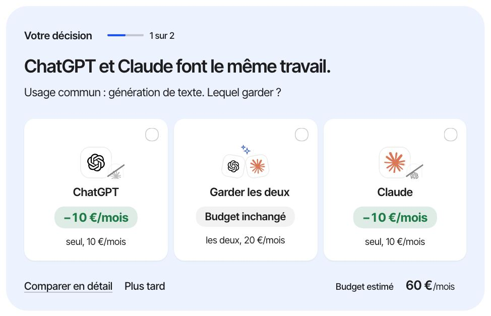
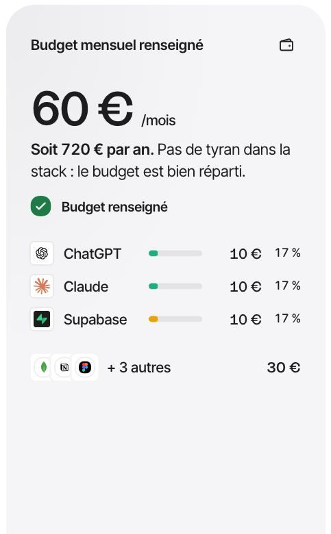
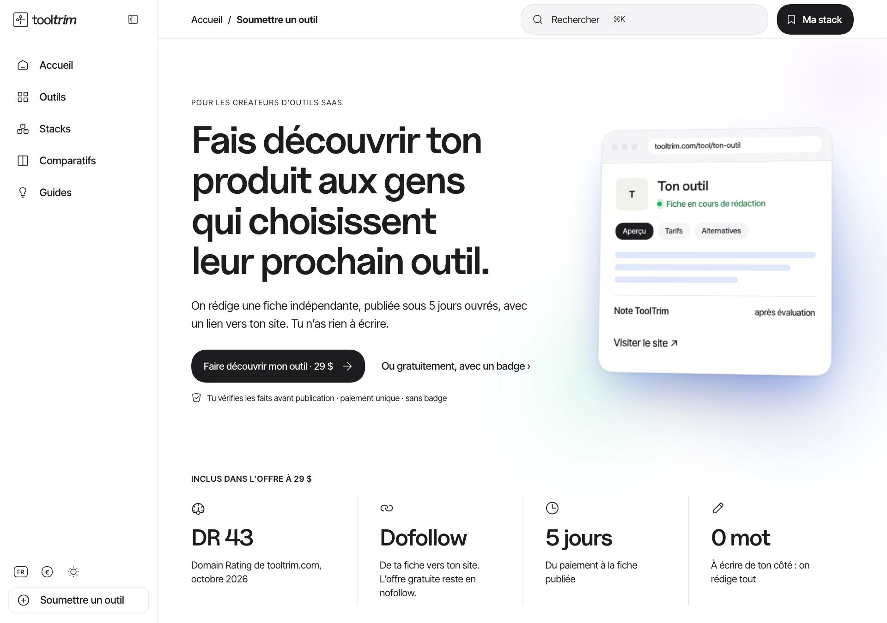
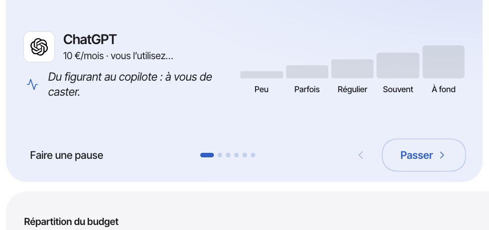
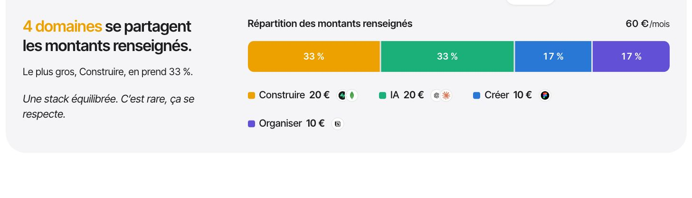
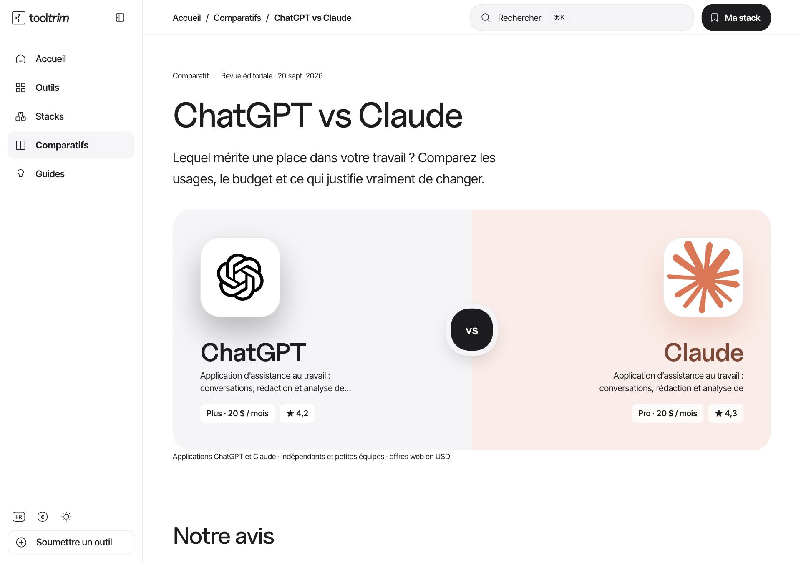
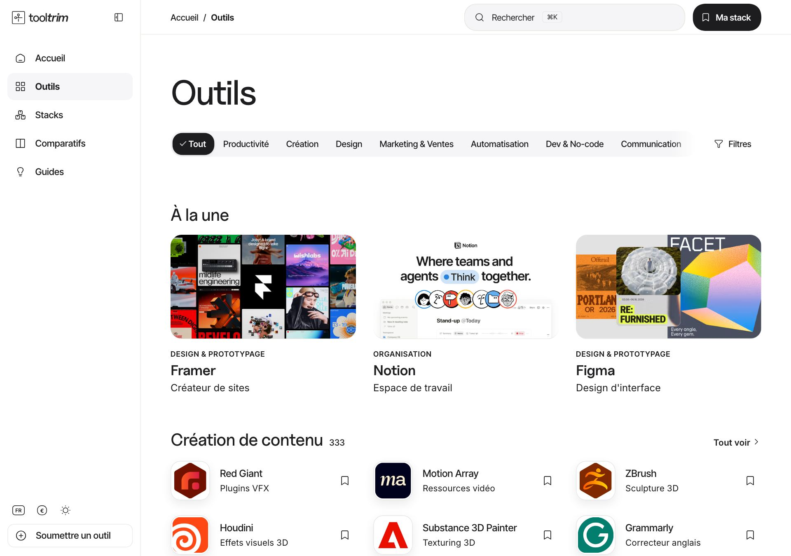
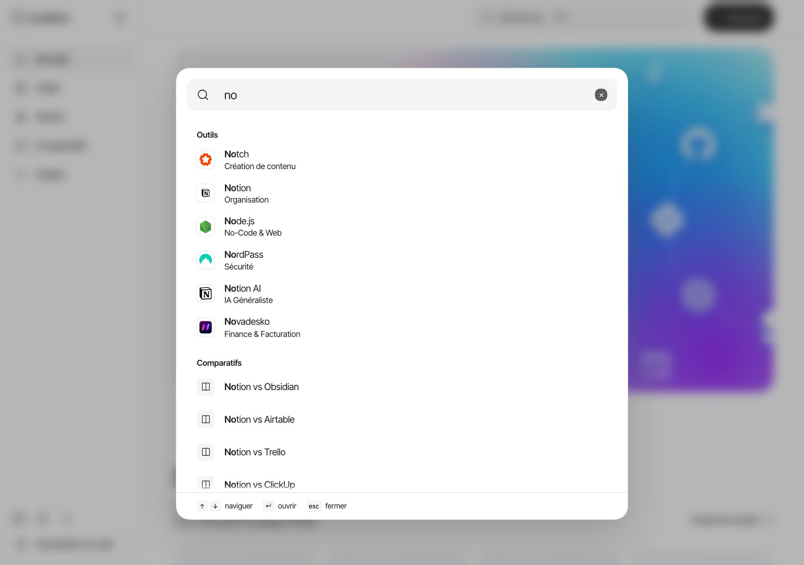
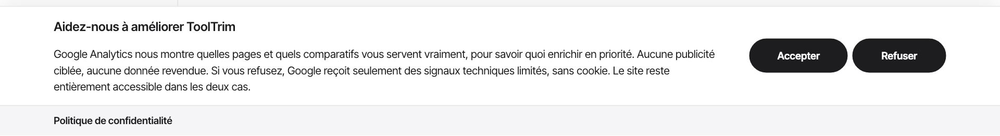
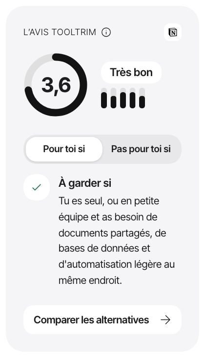

<meta charset="utf-8">
<title>Système ToolTrim</title>
<meta name="claude:viewport-fit-sides" content="cover">
<link rel="preconnect" href="https://fonts.googleapis.com">
<link rel="stylesheet" href="https://fonts.googleapis.com/css2?family=Inter+Tight:wght@300..700&family=Inter:opsz,wght@14..32,300..700&display=swap">
<script>
  // Mode sombre : la planche pose la classe .dark comme le site, d'après data-theme ou le système.
  (function () { var r = document.documentElement, m = matchMedia('(prefers-color-scheme: dark)');
    var apply = function () { var t = r.getAttribute('data-theme'); r.classList.toggle('dark', t ? t === 'dark' : m.matches); };
    apply(); m.addEventListener('change', apply); new MutationObserver(apply).observe(r, { attributes: true, attributeFilter: ['data-theme'] }); })();
</script>
<style>/*@tooltrim-system*/</style>
<style>
@font-face { font-family: "Uncut Sans"; src: url(/*@font:uncut*/) format("woff2-variations"); font-weight: 300 700; font-display: swap; }
/* Layout: one long instrument sheet, a 12-column grid, each pillar a chapter
   with the rule on the left and the live specimen on the right. */
:root {
  /* Les tokens de la planche sont des alias du système partagé
     (src/styles/tooltrim-system.css) : modifier le système modifie la planche ET le site. */
  --bg: var(--tt-bg); --tile: var(--tt-tile); --tile-2: var(--tt-tile-2); --ink: var(--tt-ink); --line: var(--tt-line); --meta: var(--tt-meta);
  --brand: var(--tt-brand); --accent: var(--tt-brand); --live: var(--tt-live); --overlap: var(--tt-overlap); --area-violet: var(--tt-area-violet); --area-amber: var(--tt-area-amber);
  --glow-1: var(--tt-glow-1); --glow-2: var(--tt-glow-2); --glow-3: var(--tt-glow-3); --glow-4: var(--tt-glow-4);
  --aura-brand-a: var(--tt-aura-brand-a); --aura-brand-b: var(--tt-aura-brand-b); --gain-1: var(--tt-gain-1); --gain-2: var(--tt-gain-2); --gain-3: var(--tt-gain-3);
  --aura: linear-gradient(90deg in oklch, var(--tt-aura-brand-a), var(--tt-aura-brand-b), var(--tt-aura-brand-a));
  --edge-1: var(--tt-edge-1); --edge-2: var(--tt-edge-2); --edge-3: var(--tt-edge-3); --edge-4: var(--tt-edge-4); --edge-head: var(--tt-edge-head);
  --display: var(--tt-display); --ui: var(--tt-ui); --read: var(--tt-read);
  --w-text: var(--tt-w-text); --w-strong: var(--tt-w-strong);
  --r-tile: var(--tt-r-tile); --r-pill: var(--tt-r-pill);
  --ease: var(--tt-ease);
  color-scheme: light;
}
.dark { color-scheme: dark; }

* { box-sizing: border-box; }
body { margin: 0; background: var(--bg); color: var(--ink); font: var(--w-text) 1rem/1.6 var(--read); letter-spacing: 0; font-optical-sizing: auto; font-feature-settings: 'cv05', 'cv08'; -webkit-font-smoothing: antialiased; }
p { text-wrap: pretty; }
.wrap { max-width: 1180px; margin: 0 auto; padding-left: max(24px, env(safe-area-inset-left, 0px)); padding-right: max(24px, env(safe-area-inset-right, 0px)); }
h1, h2, h3 { font-family: var(--display); font-weight: 500; margin: 0; text-wrap: balance; }
p { margin: 0; }
.eyebrow { font: 500 .75rem/1.4 var(--ui); letter-spacing: .08em; text-transform: uppercase; font-feature-settings: 'case'; }
.meta { color: var(--ink); font: var(--w-text) .875rem/1.5 var(--read); letter-spacing: 0; }
.num { font-variant-numeric: tabular-nums; }

/* Opening scene */
.opening { padding-block: 32px 0; }
.scene { position: relative; overflow: hidden; clip-path: inset(0 round 32px); border-radius: 32px; background: var(--tile); min-height: 520px; display: grid; grid-template-columns: minmax(0, 1.1fr) minmax(0, 1fr); align-items: center; isolation: isolate; }
.scene-copy { position: relative; z-index: 3; padding: 64px; display: grid; gap: 20px; }
.scene h1 { font-size: clamp(2.75rem, 5.4vw, 4.5rem); line-height: 1.04; letter-spacing: -.022em; }
.scene p { font: var(--w-text) 1.0625rem/1.5 var(--read); max-width: 42ch; }
.glow { position: absolute; inset: 0; z-index: 0; pointer-events: none; }
.glow i { position: absolute; border-radius: 50%; will-change: transform; }
.glow i:nth-child(1) { left: 58%; top: -30%; width: 64%; height: 110%; background: radial-gradient(closest-side in oklch, var(--glow-1), transparent); animation: b1 13s var(--ease) infinite alternate; }
.glow i:nth-child(2) { left: 34%; top: 10%; width: 66%; height: 120%; background: radial-gradient(closest-side in oklch, var(--glow-2), transparent); animation: b2 17s ease-in-out infinite alternate; }
.glow i:nth-child(3) { left: 26%; top: 0; width: 50%; height: 100%; background: radial-gradient(closest-side in oklch, var(--glow-4), transparent); opacity: .85; animation: b3 15s ease-in-out infinite alternate; }
.glow i:nth-child(4) { left: 64%; top: 40%; width: 56%; height: 100%; background: radial-gradient(closest-side in oklch, var(--glow-3), transparent); animation: b4 19s ease-in-out infinite alternate; }
@keyframes b1 { to { transform: translate3d(-14%, 16%, 0) scale(1.18) rotate(20deg); } }
@keyframes b2 { to { transform: translate3d(12%, -14%, 0) scale(.88) rotate(-18deg); } }
@keyframes b3 { to { transform: translate3d(18%, 18%, 0) scale(1.2) rotate(25deg); } }
@keyframes b4 { to { transform: translate3d(-16%, -12%, 0) scale(1.12) rotate(-20deg); } }
.grain { position: absolute; inset: 0; z-index: 2; pointer-events: none; opacity: .13; background-image: url("data:image/svg+xml,%3Csvg xmlns='http://www.w3.org/2000/svg' width='200' height='200'%3E%3Cfilter id='n'%3E%3CfeTurbulence type='fractalNoise' baseFrequency='1' numOctaves='3' stitchTiles='stitch'/%3E%3CfeColorMatrix type='saturate' values='0'/%3E%3CfeComponentTransfer%3E%3CfeFuncR type='linear' slope='3.2' intercept='-1.1'/%3E%3CfeFuncG type='linear' slope='3.2' intercept='-1.1'/%3E%3CfeFuncB type='linear' slope='3.2' intercept='-1.1'/%3E%3C/feComponentTransfer%3E%3C/filter%3E%3Crect width='100%25' height='100%25' filter='url(%23n)'/%3E%3C/svg%3E"); }
.orbit { position: absolute; z-index: 3; top: 50%; right: 0; width: 0; height: 0; -webkit-mask-image: linear-gradient(to bottom, transparent, #000 16%, #000 84%, transparent); }
.orbit-zone { position: absolute; inset: 0; z-index: 3; pointer-events: none; -webkit-mask-image: linear-gradient(to bottom, transparent, #000 18%, #000 82%, transparent); mask-image: linear-gradient(to bottom, transparent, #000 18%, #000 82%, transparent); }
.ring { position: absolute; left: 100%; top: 50%; border-radius: 50%; box-shadow: inset 0 0 0 1px rgb(255 255 255 / var(--l)); animation: spin var(--t) linear infinite var(--d, normal); }
.ring li { position: absolute; left: 50%; top: 50%; width: var(--s); height: var(--s); margin: calc(var(--s) / -2) 0 0 calc(var(--s) / -2); list-style: none; transform: rotate(calc(360deg / var(--n) * var(--i))) translateX(var(--r)) rotate(calc(-360deg / var(--n) * var(--i))); }
.ring li span { display: block; width: 100%; height: 100%; animation: spin var(--t) linear infinite var(--c, reverse); }
.ring svg { width: 100%; height: 100%; fill: #fff; filter: drop-shadow(0 1px 1.5px rgb(0 0 0 / .22)) drop-shadow(0 4px 12px rgb(40 60 200 / .5)); }
.ring.r1 { --r: 160px; --t: 60s; --s: 44px; --l: .55; --n: 6; width: 320px; height: 320px; margin: -160px 0 0 -160px; }
.ring.r2 { --r: 280px; --t: 90s; --s: 36px; --l: .35; --n: 8; --d: reverse; --c: normal; width: 560px; height: 560px; margin: -280px 0 0 -280px; }
@keyframes spin { to { rotate: 360deg; } }

/* Buttons */
.cta { display: inline-flex; align-items: center; gap: 10px; min-height: 52px; padding: 0 26px 0 30px; border: 0; border-radius: var(--r-pill); background: var(--ink); color: var(--bg); font: 500 15px/1 var(--ui); letter-spacing: -.01em; text-decoration: none; cursor: pointer; transition: transform 160ms var(--ease); }
.cta:hover { transform: translateY(-1px); } .cta:active { transform: scale(.98); }
.link { display: inline-flex; align-items: center; gap: 6px; min-height: 40px; color: var(--ink); font: 500 15px/1 var(--ui); text-decoration: none; }
.link:hover { text-decoration: underline; text-underline-offset: 4px; text-decoration-thickness: 1px; }
.arrow { transition: transform 200ms var(--ease); } .cta:hover .arrow, .link:hover .arrow { transform: translateX(2px); }
.btn { display: inline-flex; align-items: center; justify-content: center; min-height: 40px; padding: 0 18px; border: 0; border-radius: var(--r-pill); font: 500 14px/1 var(--ui); cursor: pointer; }
.btn--ink { background: var(--ink); color: var(--bg); } .btn--grey { background: var(--tile); color: var(--ink); }
.btn:focus-visible, .cta:focus-visible, .link:focus-visible { outline: 2px solid var(--ink); outline-offset: 3px; }
.actions { display: flex; flex-wrap: wrap; align-items: center; gap: 12px 32px; }

/* Chapters */
.chapter { display: grid; grid-template-columns: minmax(0, 4fr) minmax(0, 8fr); gap: 32px 64px; padding-block: 120px 0; }
.chapter-head { display: grid; gap: 14px; align-content: start; position: sticky; top: 24px; }
.chapter-head h2 { font-size: clamp(1.875rem, 3vw, 2.625rem); line-height: 1.08; letter-spacing: -.021em; }
.chapter-head p { font: var(--w-text) 1rem/1.6 var(--read); max-width: 36ch; }
.chapter-head .eyebrow { color: var(--ink); }
.rule { display: grid; gap: 6px; padding-top: 14px; }
.rule div { font-size: 14px; }
.rule b { font-weight: 500; }

/* Colour */
.swatches { display: grid; grid-template-columns: repeat(4, minmax(0, 1fr)); gap: 12px; }
.sw { display: grid; gap: 10px; }
.sw-chip { aspect-ratio: 4 / 3; border-radius: 18px; box-shadow: inset 0 0 0 1px var(--line); }
.sw b { font: 500 14px/1.2 var(--ui); display: block; } .sw span { font-size: 14px; color: var(--ink); }
.accents { display: grid; grid-template-columns: repeat(5, minmax(0, 1fr)); gap: 12px; margin-top: 12px; }
.accent-chip { width: 56px; height: 56px; border-radius: 50%; box-shadow: 0 10px 24px -12px currentColor; }
.note { margin-top: 20px; padding: 20px 24px; border-radius: var(--r-tile); background: var(--tile); font-size: 15px; }
.note b { font-weight: 500; }

/* Type */
.specimens { display: grid; gap: 4px; }
.spec { display: grid; grid-template-columns: 136px minmax(0, 1fr); align-items: baseline; gap: 24px; padding: 18px 0; border-top: 1px solid var(--line); }
.spec:first-child { border-top: 0; }
.spec-tag { white-space: nowrap; font: 500 .875rem/1.4 var(--ui); color: var(--ink); font-variant-numeric: tabular-nums; }
.s64 { font: 500 4rem/1.04 var(--display); letter-spacing: -.022em; }
.s42 { font: 500 2.625rem/1.08 var(--display); letter-spacing: -.021em; }
.s21 { font: var(--w-strong) 1.3125rem/1.2 var(--display); letter-spacing: -.017em; }
.s17 { font: var(--w-text) 1.0625rem/1.5 var(--read); letter-spacing: 0; max-width: 62ch; }
.s15 { font: var(--w-text) 1rem/1.6 var(--read); letter-spacing: 0; max-width: 68ch; }
.s13 { font: var(--w-text) .875rem/1.5 var(--read); letter-spacing: 0; color: var(--ink); font-variant-numeric: tabular-nums; }
.two-tone .soft { color: var(--meta); }

/* Surfaces */
.surfaces { display: grid; grid-template-columns: repeat(6, minmax(0, 1fr)); gap: 12px; }
.tile { grid-column: span 3; border-radius: var(--r-tile); background: var(--tile); padding: 28px; display: grid; gap: 10px; align-content: end; min-height: 220px; }
.tile .eyebrow { margin-bottom: 4px; }
.tile h3 { font-size: 1.3125rem; line-height: 1.2; letter-spacing: -.017em; }
.tile.decision { background: var(--ink); color: var(--bg); }
.tile.decision .meta { color: var(--bg); }
.tile.stage { position: relative; overflow: hidden; isolation: isolate; color: var(--ink); }
.tile.stage::before { content: ""; position: absolute; inset: -30%; z-index: -1; background: radial-gradient(40% 50% at 70% 30% in oklch, var(--glow-1), transparent), radial-gradient(45% 55% at 40% 70% in oklch, var(--glow-3), transparent); opacity: .9; animation: b1 14s ease-in-out infinite alternate; }
.big { font: 500 3.5rem/1 var(--display); letter-spacing: -.022em; font-variant-numeric: tabular-nums; }
.big small { font: 500 17px/1 var(--ui); letter-spacing: 0; margin-left: 4px; color: inherit; opacity: .7; }
.list { grid-column: span 3; display: grid; padding: 4px 0; }
.list a { display: grid; grid-template-columns: 40px minmax(0, 1fr) auto; align-items: center; gap: 14px; padding: 12px 0; color: var(--ink); text-decoration: none; }
.list a + a { border-top: 1px solid var(--line); }
.list .ico { width: 40px; height: 40px; border-radius: 10px; display: grid; place-items: center; background: #fff; box-shadow: 0 0 0 .5px rgb(0 0 0 / .08), 0 6px 14px -8px rgb(0 0 0 / .3); }
.list .ico svg { width: 22px; height: 22px; fill: #111; }
.list strong { font-weight: 500; display: block; } .list small { color: var(--ink); font-size: 14px; }
.chips { grid-column: span 3; display: flex; flex-wrap: wrap; gap: 8px; align-content: start; padding-top: 6px; }
.chip { display: inline-flex; align-items: center; gap: 8px; height: 30px; padding: 0 12px; border-radius: var(--r-pill); background: var(--tile); font: 400 13px/1 var(--ui); }
.chip i { width: 8px; height: 8px; border-radius: 50%; }

/* Motion */
.motion { display: grid; grid-template-columns: repeat(3, minmax(0, 1fr)); gap: 12px; }
.motion .tile { grid-column: auto; min-height: 240px; align-content: space-between; }
.ringv { width: 96px; height: 96px; }
.ringv circle { fill: none; stroke-width: 9; }
.ringv .track { stroke: var(--tile-2); }
.ringv .val { stroke: var(--live); stroke-linecap: round; stroke-dasharray: 251; stroke-dashoffset: 251; transform: rotate(-90deg); transform-origin: 50% 50%; animation: fill 1.6s var(--ease) .3s forwards; }
@keyframes fill { to { stroke-dashoffset: 70; } }
.bars { display: grid; gap: 8px; }
.bars span { display: block; height: 6px; border-radius: 3px; background: var(--tile-2); overflow: hidden; }
.bars i { display: block; height: 100%; border-radius: inherit; background: var(--ink); transform-origin: left; animation: grow 1s var(--ease) both; }
.bars span:nth-child(2) i { animation-delay: .12s; } .bars span:nth-child(3) i { animation-delay: .24s; } .bars span:nth-child(4) i { animation-delay: .36s; }
@keyframes grow { from { transform: scaleX(0); } }
.duel { display: flex; align-items: center; justify-content: center; padding: 18px 0; }
.duel span { width: 64px; height: 64px; border-radius: 16px; display: grid; place-items: center; background: #fff; box-shadow: 0 0 0 .5px rgb(0 0 0 / .06), 0 14px 26px -14px rgb(0 0 0 / .3); transition: transform 320ms var(--ease); }
.duel span svg { width: 34px; height: 34px; fill: #111; }
.duel span:first-child { transform: rotate(-7deg) translateX(-6px); } .duel span:last-child { transform: rotate(6deg) translateX(6px); }
.tile:hover .duel span { transform: none; }
.duel b { position: relative; z-index: 1; width: 26px; height: 26px; margin: 0 -4px; border-radius: 50%; background: var(--ink); color: var(--bg); display: grid; place-items: center; font: 500 12px/1 var(--ui); box-shadow: 0 0 0 3px var(--tile); }

/* Life rule */
.life { display: grid; grid-template-columns: repeat(2, minmax(0, 1fr)); gap: 12px; }
.life .tile { grid-column: auto; min-height: 180px; }
.end { padding-block: 120px 96px; display: grid; gap: 20px; justify-items: start; }
.end h2 { font-size: clamp(1.875rem, 3vw, 2.625rem); line-height: 1.08; letter-spacing: -.021em; max-width: 22ch; }

.cta2 { position: relative; overflow: hidden; isolation: isolate; display: inline-flex; align-items: center; gap: 12px; min-height: 52px; padding: 0 24px 0 30px; border-radius: var(--r-pill); color: var(--bg); font: 500 1rem/1 var(--ui); text-decoration: none; cursor: pointer;
  background: var(--tt-lead-bg); box-shadow: var(--tt-lead-shadow);
  transition: transform 280ms cubic-bezier(.34, 1.56, .64, 1), box-shadow 220ms ease; }
.cta2::before, .add::before { content: ""; position: absolute; inset: 0; z-index: -1; border-radius: inherit; opacity: 0; transition: opacity 220ms ease;
  background: radial-gradient(160px circle at var(--mx) var(--my), color-mix(in srgb, var(--bg) 9%, transparent), transparent 70%); transition: opacity 400ms ease, --mx 500ms cubic-bezier(.2, .8, .2, 1), --my 500ms cubic-bezier(.2, .8, .2, 1); }
.cta2:hover::before, .add:hover::before { opacity: 1; }
.cta2:hover { box-shadow: var(--tt-lead-shadow-hover); }
.cta2:active, .add:active { transform: scale(.98); transition-duration: 90ms; }
.cta2-arrow { position: relative; display: inline-block; width: 16px; height: 16px; overflow: hidden; font-style: normal; }
.cta2-arrow i { position: absolute; inset: 0; display: grid; place-items: center; font-style: normal; line-height: 1; transition: transform 380ms cubic-bezier(.2, .8, .2, 1); }
.cta2-arrow i:last-child { transform: translateX(-140%); }
.cta2:hover .cta2-arrow i:first-child { transform: translateX(140%); }
.cta2:hover .cta2-arrow i:last-child { transform: none; }
.link2 { position: relative; color: var(--ink); font: 500 1rem/1.3 var(--ui); text-decoration: none; padding-block: 4px; }
.link2::after { content: ""; position: absolute; left: 0; right: 0; bottom: 0; height: 1px; background: currentColor; transform: scaleX(0); transform-origin: right; transition: transform 320ms cubic-bezier(.2, .8, .2, 1); }
.link2:hover::after { transform: scaleX(1); transform-origin: left; }
.add { position: relative; overflow: hidden; isolation: isolate; display: inline-flex; align-items: center; gap: 10px; min-height: 44px; padding: 0 8px 0 16px; border: 0; border-radius: var(--r-pill); background: var(--tile); color: var(--ink); font: 500 .9375rem/1 var(--ui); cursor: pointer; transition: transform 280ms cubic-bezier(.34, 1.56, .64, 1), background-color 260ms ease, color 260ms ease; }
.add::before { background: radial-gradient(140px circle at var(--mx) var(--my), color-mix(in srgb, var(--ink) 4%, transparent), transparent 70%); transition: opacity 400ms ease, --mx 500ms cubic-bezier(.2, .8, .2, 1), --my 500ms cubic-bezier(.2, .8, .2, 1); }
.add-icon svg { width: 18px; height: 18px; fill: none; stroke: currentColor; stroke-width: 1.7; stroke-linecap: round; stroke-linejoin: round; }
.add .tick { stroke-dasharray: 20; stroke-dashoffset: 20; transition: stroke-dashoffset 360ms cubic-bezier(.2, .8, .2, 1) 80ms; }
.add .plus { transition: opacity 160ms ease, transform 260ms ease; transform-origin: 10px 10px; }
.add-count { display: inline-grid; place-items: center; min-width: 28px; height: 28px; border-radius: var(--r-pill); background: var(--bg); overflow: hidden; font: 500 .8125rem/1 var(--ui); }
.odo { display: grid; height: 28px; transition: transform 420ms cubic-bezier(.2, .8, .2, 1); }
.odo i { display: grid; place-items: center; height: 28px; font-style: normal; }
.add[aria-pressed="true"] { background: var(--ink); color: var(--bg); }
.add[aria-pressed="true"] .plus { opacity: 0; transform: rotate(90deg) scale(.6); }
.add[aria-pressed="true"] .tick { stroke-dashoffset: 0; }
.add[aria-pressed="true"] .add-count { background: color-mix(in srgb, var(--bg) 18%, transparent); }
.add[aria-pressed="true"] .odo { transform: translateY(-28px); }
.seg { position: relative; display: inline-flex; width: fit-content; justify-self: start; padding: 4px; border-radius: var(--r-pill); background: var(--tile); }
.seg button { position: relative; z-index: 1; min-height: 36px; padding: 0 18px; border: 0; border-radius: var(--r-pill); background: none; color: var(--ink); font: 500 .9375rem/1 var(--ui); cursor: pointer; }
.seg button b { font-weight: 500; color: var(--live); margin-left: 4px; }
.seg-thumb { position: absolute; z-index: 0; top: 4px; bottom: 4px; left: 0; border-radius: var(--r-pill); background: var(--bg); box-shadow: 0 1px 2px rgb(0 0 0 / .08), 0 4px 12px -6px rgb(0 0 0 / .2); transition: transform 420ms cubic-bezier(.34, 1.3, .64, 1), width 420ms cubic-bezier(.34, 1.3, .64, 1); }
:is(.cta2, .add, .seg button, .link2):focus-visible { outline: 2px solid var(--accent); outline-offset: 3px; }
@media (prefers-reduced-motion: reduce) { .cta2-arrow i, .odo, .seg-thumb, .add .tick, .link2::after { transition: none !important; } }
.arr { width: 16px; height: 16px; fill: none; stroke: currentColor; stroke-width: 1.5; stroke-linecap: round; stroke-linejoin: round; }
.mag { display: inline-flex; transform: translate3d(var(--tx, 0), var(--ty, 0), 0); transition: transform 700ms cubic-bezier(.2, .8, .2, 1); }
.cta2-arrow i, .cta2-arrow i:last-child { display: grid; }
.cta2, .send { overflow: visible; }
/* The filet (hover only): a 1px rim in saturated P3 colours, drifting slowly,
   and a spark of light that runs round it at constant speed (an SVG stroke
   dash along the pill's own perimeter, so no speed change in the curves). */
@property --mx { syntax: "<length-percentage>"; inherits: false; initial-value: 50%; }
@property --my { syntax: "<length-percentage>"; inherits: false; initial-value: 50%; }
@keyframes flow { to { background-position: -200% 0; } }
/* One registered number drives the whole trail: each segment sits --o
   units behind the head, so the tail stays rigid and glides as one. */
/* The flare: a blurred, wider copy under the streak, violet at the ends. */
/* On the light pill of dark mode, a white core would vanish: the core turns violet. */
/* The bloom (hover only): the same colours, blurred, barely there behind the pill. */
.mag { position: relative; isolation: isolate; }
.mag::before { content: ""; position: absolute; inset: 10px 18px; z-index: -1; border-radius: var(--r-pill); pointer-events: none; opacity: 0;
  background: linear-gradient(90deg in oklch, var(--edge-1), var(--edge-2), var(--edge-3), var(--edge-4), var(--edge-1)) 0 0 / 200% 100%;
  filter: blur(20px); transition: opacity 700ms cubic-bezier(.2, .8, .2, 1); }
.mag:hover::before { opacity: .16; animation: flow 10s linear infinite; }
.cta2:active, .send:active { box-shadow: var(--tt-lead-shadow-press); }
.link2 { display: inline-flex; align-items: center; gap: 4px; }
.link2-arrow { display: inline-grid; width: 16px; overflow: hidden; opacity: 0; transform: translateX(-6px); transition: opacity 240ms ease, transform 320ms cubic-bezier(.2, .8, .2, 1); }
.link2:hover .link2-arrow { opacity: 1; transform: none; }
.send { position: relative; overflow: hidden; isolation: isolate; min-height: 52px; min-width: 196px; padding: 0 28px; border: 0; border-radius: var(--r-pill); color: var(--bg); font: 500 1rem/1 var(--ui); cursor: pointer;
  background: var(--tt-lead-bg); box-shadow: var(--tt-lead-shadow);
  transition: transform 280ms cubic-bezier(.34, 1.56, .64, 1); }
.send::before { content: ""; position: absolute; inset: 0; z-index: -1; border-radius: inherit; opacity: 0; transition: opacity 220ms ease; background: radial-gradient(160px circle at var(--mx) var(--my), color-mix(in srgb, var(--bg) 9%, transparent), transparent 70%); transition: opacity 400ms ease, --mx 500ms cubic-bezier(.2, .8, .2, 1), --my 500ms cubic-bezier(.2, .8, .2, 1); }
.send:hover::before { opacity: 1; }
.send-label { position: relative; display: grid; place-items: center; }
.send-label > span { grid-area: 1 / 1; display: inline-flex; align-items: center; gap: 8px; transition: opacity 260ms ease, transform 360ms cubic-bezier(.2, .8, .2, 1); }
.s-done { opacity: 0; transform: translateY(8px); }
.s-done svg { width: 18px; height: 18px; fill: none; stroke: var(--live); stroke-width: 1.9; stroke-linecap: round; stroke-linejoin: round; stroke-dasharray: 20; stroke-dashoffset: 20; transition: stroke-dashoffset 420ms cubic-bezier(.2, .8, .2, 1) 120ms; }
.send-bar { position: absolute; left: 22px; right: 22px; bottom: 9px; height: 1.5px; border-radius: 2px; background: color-mix(in srgb, var(--bg) 18%, transparent); overflow: hidden; opacity: 0; transition: opacity 200ms ease; }
.send-bar::after { content: ""; position: absolute; inset: 0; background: linear-gradient(to right, var(--glow-1), var(--glow-2), var(--glow-3)); transform: scaleX(0); transform-origin: left; }
.send[data-state="busy"] .send-bar { opacity: 1; }
.send[data-state="busy"] .send-bar::after { transform: scaleX(1); transition: transform 1400ms cubic-bezier(.4, 0, .2, 1); }
.send[data-state="busy"] .s-idle { opacity: .45; }
.send[data-state="done"] .s-idle { opacity: 0; transform: translateY(-8px); }
.send[data-state="done"] .s-done { opacity: 1; transform: none; }
.send[data-state="done"] .s-done svg { stroke-dashoffset: 0; }
.add .tick { stroke: var(--live); }
.add[aria-pressed="true"] .tick { stroke: color-mix(in oklch, var(--live) 70%, white); }
.add[aria-pressed="true"] { animation: pulse 700ms cubic-bezier(.2, .8, .2, 1); }
@keyframes pulse { 0% { box-shadow: 0 0 0 0 color-mix(in oklch, var(--live) 45%, transparent); } 100% { box-shadow: 0 0 0 10px color-mix(in oklch, var(--live) 0%, transparent); } }
:is(.send):focus-visible { outline: 2px solid var(--accent); outline-offset: 3px; }
@media (prefers-reduced-motion: reduce) { .mag { transform: none !important; } .mag::before { animation: none !important; } }

/* ── Interactions chapter ── */
[hidden] { display: none !important; }
.ix-card > .btn, .menu-demo > .btn { justify-self: start; width: fit-content; }
.ix-card .btn--grey { background: var(--bg); box-shadow: 0 0 0 1px var(--line); }
.ix-card .btn--grey:hover { box-shadow: 0 0 0 1px var(--color-ink, var(--ink)); }
.menu-demo { justify-self: start; }
.chapter--wide { grid-template-columns: 1fr; }
.chapter--wide .chapter-head { position: static; max-width: 760px; }
.chapter--wide .chapter-head p { max-width: 60ch; }
.chapter--wide .rule { grid-template-columns: repeat(2, minmax(0, 1fr)); display: grid; column-gap: 32px; }
.ix { display: grid; grid-template-columns: repeat(3, minmax(0, 1fr)); gap: 12px; }
.ix-card { display: grid; align-content: start; gap: 18px; padding: 28px; border-radius: var(--r-tile); background: var(--tile); min-width: 0; }
.ix-card--wide { grid-column: span 3; }
.ix-card header { display: grid; gap: 6px; }
.ix-card h3 { font-size: 1.3125rem; line-height: 1.2; letter-spacing: -.017em; }
.ix-rows { display: grid; gap: 14px; }
.ix-nav { display: grid; grid-template-columns: 220px minmax(0, 1fr); gap: 32px; align-items: start; }
.ix-stack { display: grid; gap: 28px; min-width: 0; }
.side { display: grid; gap: 2px; padding: 8px; border-radius: 18px; background: var(--bg); }
.side a { position: relative; display: flex; align-items: center; gap: 12px; min-height: 40px; padding: 0 12px; border-radius: 12px; color: var(--ink); font: 500 .9375rem/1 var(--ui); text-decoration: none; transition: background-color 200ms ease; }
.side a svg { width: 18px; height: 18px; fill: none; stroke: currentColor; stroke-width: 1.5; stroke-linejoin: round; }
.side a:hover { background: var(--tile); }
.side a[aria-current="page"] { background: var(--tile-2); }
.side a[aria-current="page"]::before { content: ""; position: absolute; left: -8px; top: 12px; bottom: 12px; width: 3px; border-radius: 3px; background: var(--accent); }
.crumbs { display: flex; flex-wrap: wrap; gap: 6px; margin: 0; padding: 0; list-style: none; font: 400 .875rem/1.4 var(--read); }
.crumbs li + li::before { content: "/"; margin-right: 6px; color: var(--meta); }
.crumbs a { color: var(--ink); text-decoration: none; }
.crumbs a:hover { text-decoration: underline; text-underline-offset: 3px; }
.crumbs [aria-current] { font-weight: 500; }
.tabs { position: relative; display: flex; gap: 4px; overflow-x: auto; scrollbar-width: none; border-bottom: 1px solid var(--line); }
.tabs button { min-height: 44px; padding: 0 14px; border: 0; background: none; color: var(--ink); font: 500 .9375rem/1 var(--ui); cursor: pointer; opacity: .6; transition: opacity 200ms ease; white-space: nowrap; }
.tabs button:hover, .tabs button[aria-selected="true"] { opacity: 1; }
.tabs-ink { position: absolute; bottom: -1px; left: 0; height: 2px; border-radius: 2px; background: var(--ink); transition: transform 420ms cubic-bezier(.2, .8, .2, 1), width 420ms cubic-bezier(.2, .8, .2, 1); }
.search { display: grid; gap: 10px; max-width: 640px; }
.search-field { display: flex; align-items: center; gap: 12px; min-height: 52px; padding: 0 12px 0 18px; border-radius: 16px; background: var(--bg); box-shadow: 0 0 0 1px var(--line); transition: box-shadow 240ms ease; }
.search-field:focus-within { box-shadow: 0 0 0 1px var(--accent), 0 0 0 5px color-mix(in oklch, var(--accent) 16%, transparent); }
.search-field svg { width: 18px; height: 18px; fill: none; stroke: var(--ink); stroke-width: 1.6; stroke-linecap: round; flex: none; }
.search-field input { flex: 1; min-width: 0; border: 0; background: none; outline: none; color: var(--ink); font: 400 1.0625rem/1 var(--read); }
kbd { display: inline-grid; place-items: center; min-width: 22px; height: 22px; padding: 0 6px; border-radius: 6px; background: var(--tile); box-shadow: inset 0 -1px 0 var(--line), 0 0 0 1px var(--line); color: var(--ink); font: 500 .75rem/1 var(--ui); }
.results { display: grid; gap: 2px; margin: 0; padding: 6px; border-radius: 16px; background: var(--bg); list-style: none; }
.results li { display: grid; grid-template-columns: 36px minmax(0, 1fr) auto; align-items: center; gap: 12px; padding: 8px 10px; border-radius: 12px; cursor: pointer; transition: background-color 160ms ease; }
.results li kbd { opacity: 0; transition: opacity 160ms ease; }
.results li[aria-selected="true"] { background: var(--tile); }
.results li[aria-selected="true"] kbd { opacity: 1; }
.results strong { display: block; font: 500 .9375rem/1.3 var(--ui); }
.results small { font: 400 .875rem/1.4 var(--read); }
.results mark { background: color-mix(in oklch, var(--accent) 18%, transparent); color: inherit; border-radius: 3px; padding: 0 1px; }
.results .ico, .trow .ico, .sheet .ico { width: 36px; height: 36px; border-radius: 10px; display: grid; place-items: center; background: #fff; box-shadow: 0 0 0 .5px rgb(0 0 0 / .08), 0 4px 10px -6px rgb(0 0 0 / .3); }
.results .ico svg, .trow .ico svg, .sheet .ico svg { width: 20px; height: 20px; fill: #111; }
.hint { display: flex; flex-wrap: wrap; align-items: center; gap: 6px; font: 400 .875rem/1.4 var(--read); }
.filters { display: flex; flex-wrap: wrap; gap: 8px; }
.row-ctl { display: flex; align-items: center; justify-content: space-between; gap: 16px; font: 400 1rem/1.4 var(--read); cursor: pointer; }
.switch { position: relative; flex: none; width: 46px; height: 28px; border: 0; border-radius: var(--r-pill); background: var(--tile-2); cursor: pointer; transition: background-color 240ms ease; }
.switch i { position: absolute; top: 3px; left: 3px; width: 22px; height: 22px; border-radius: 50%; background: #fff; box-shadow: 0 1px 2px rgb(0 0 0 / .2), 0 3px 8px -2px rgb(0 0 0 / .2); transition: transform 360ms cubic-bezier(.34, 1.4, .64, 1), width 200ms ease; }
.switch:active i { width: 26px; }
.switch[aria-checked="true"] { background: var(--live); }
.switch[aria-checked="true"] i { transform: translateX(18px); }
.switch[aria-checked="true"]:active i { transform: translateX(14px); }
.check { justify-content: flex-start; }
.check input { position: absolute; opacity: 0; pointer-events: none; }
.box { flex: none; width: 22px; height: 22px; border-radius: 7px; background: var(--bg); box-shadow: inset 0 0 0 1.5px var(--line); display: grid; place-items: center; transition: background-color 200ms ease, box-shadow 200ms ease; }
.box svg { width: 14px; height: 14px; fill: none; stroke: var(--bg); stroke-width: 2; stroke-linecap: round; stroke-linejoin: round; stroke-dasharray: 14; stroke-dashoffset: 14; transition: stroke-dashoffset 320ms cubic-bezier(.2, .8, .2, 1) 60ms; }
.check input:checked + .box { background: var(--ink); box-shadow: none; }
.check input:checked + .box svg { stroke-dashoffset: 0; }
.check input:focus-visible + .box { outline: 2px solid var(--accent); outline-offset: 3px; }
.plans { display: grid; gap: 8px; }
.plan { display: grid; grid-template-columns: 22px minmax(0, 1fr) auto; align-items: center; gap: 12px; padding: 14px 16px; border: 0; border-radius: 16px; background: var(--bg); color: var(--ink); text-align: left; cursor: pointer; box-shadow: 0 0 0 1px var(--line); transition: box-shadow 240ms ease; }
.plan strong { display: block; font: 500 .9375rem/1.3 var(--ui); } .plan small { font: 400 .875rem/1.4 var(--read); }
.plan b { font: 500 1.0625rem/1 var(--display); }
.plan .dot { width: 20px; height: 20px; border-radius: 50%; box-shadow: inset 0 0 0 1.5px var(--line); display: grid; place-items: center; transition: box-shadow 240ms ease; }
.plan .dot::after { content: ""; width: 10px; height: 10px; border-radius: 50%; background: var(--ink); transform: scale(0); transition: transform 300ms cubic-bezier(.34, 1.5, .64, 1); }
.plan[aria-checked="true"] { box-shadow: 0 0 0 1.5px var(--ink); }
.plan[aria-checked="true"] .dot { box-shadow: inset 0 0 0 1.5px var(--ink); }
.plan[aria-checked="true"] .dot::after { transform: scale(1); }
.field { display: grid; gap: 8px; }
.field-label { font: 500 .875rem/1.3 var(--ui); }
.field-box { display: flex; align-items: center; min-height: 48px; padding: 0 16px; border-radius: 14px; background: var(--bg); box-shadow: 0 0 0 1px var(--line); transition: box-shadow 240ms ease; }
.field-box:focus-within { box-shadow: 0 0 0 1px var(--accent), 0 0 0 5px color-mix(in oklch, var(--accent) 16%, transparent); }
.field-box input { flex: 1; min-width: 0; border: 0; outline: none; background: none; color: var(--ink); font: 500 1rem/1 var(--read); font-variant-numeric: tabular-nums; }
.unit { font: 400 1rem/1 var(--read); }
.stepper { display: inline-flex; align-items: center; width: fit-content; padding: 4px; border-radius: var(--r-pill); background: var(--bg); box-shadow: 0 0 0 1px var(--line); }
.stepper button { width: 36px; height: 36px; border: 0; border-radius: 50%; background: none; color: var(--ink); font: 400 1.25rem/1 var(--ui); cursor: pointer; transition: background-color 160ms ease, transform 120ms ease; }
.stepper button:hover { background: var(--tile); } .stepper button:active { transform: scale(.9); }
.stepper output { display: inline-block; min-width: 36px; text-align: center; font: 500 1rem/1 var(--ui); }
.stepper output.bump { animation: bump 280ms cubic-bezier(.34, 1.5, .64, 1); }
@keyframes bump { 40% { transform: translateY(-3px); } }
.trow { display: grid; grid-template-columns: 36px minmax(0, 1fr) 20px; align-items: center; gap: 12px; margin: 0 -12px; padding: 10px 12px; border-radius: 14px; color: var(--ink); text-decoration: none; transition: background-color 200ms ease; }
.trow strong { display: block; font: 500 .9375rem/1.3 var(--ui); } .trow small { font: 400 .875rem/1.4 var(--read); }
.trow:hover { background: var(--bg); }
.trow .ico { transition: transform 260ms cubic-bezier(.2, .8, .2, 1), box-shadow 260ms ease; }
.trow:hover .ico { transform: translateY(-2px); box-shadow: 0 0 0 .5px rgb(0 0 0 / .08), 0 10px 18px -8px rgb(0 0 0 / .35); }
.trow-go svg { width: 16px; height: 16px; fill: none; stroke: currentColor; stroke-width: 1.5; stroke-linecap: round; stroke-linejoin: round; opacity: 0; transform: translateX(-6px); transition: opacity 220ms ease, transform 300ms cubic-bezier(.2, .8, .2, 1); }
.trow:hover .trow-go svg { opacity: 1; transform: none; }
.faq { border-top: 1px solid var(--line); }
.faq:last-of-type { border-bottom: 1px solid var(--line); }
.faq summary { display: flex; align-items: center; justify-content: space-between; gap: 16px; min-height: 52px; list-style: none; cursor: pointer; font: 500 1rem/1.35 var(--ui); }
.faq summary::-webkit-details-marker { display: none; }
.plus { position: relative; flex: none; width: 14px; height: 14px; }
.plus::before, .plus::after { content: ""; position: absolute; left: 0; right: 0; top: 50%; height: 1.5px; margin-top: -.75px; border-radius: 2px; background: currentColor; transition: transform 320ms cubic-bezier(.2, .8, .2, 1); }
.plus::after { transform: rotate(90deg); }
.faq[open] .plus::after { transform: rotate(0deg); }
.faq > div { display: grid; grid-template-rows: 1fr; padding-bottom: 16px; }
.faq p { font: 400 1rem/1.6 var(--read); max-width: 56ch; }
.faq[open] > div { animation: unfold 360ms cubic-bezier(.2, .8, .2, 1); }
@keyframes unfold { from { opacity: 0; transform: translateY(-6px); } }
.tipline { display: flex; align-items: center; gap: 8px; font: 500 1rem/1.3 var(--ui); }
.tipwrap { position: relative; display: inline-flex; }
.tipbtn { width: 22px; height: 22px; border: 0; border-radius: 50%; background: var(--bg); box-shadow: inset 0 0 0 1px var(--line); color: var(--ink); font: 500 .75rem/1 var(--display); cursor: help; }
.tip { position: absolute; left: 50%; bottom: calc(100% + 10px); z-index: 5; width: 240px; padding: 12px 14px; border-radius: 12px; background: var(--ink); color: var(--bg); font: 400 .875rem/1.45 var(--read); opacity: 0; pointer-events: none; transform: translate(-50%, 4px); transition: opacity 200ms ease, transform 260ms cubic-bezier(.2, .8, .2, 1); box-shadow: 0 12px 28px -12px rgb(0 0 0 / .4); }
.tip::after { content: ""; position: absolute; top: 100%; left: 50%; margin-left: -5px; border: 5px solid transparent; border-top-color: var(--ink); }
.tipwrap:hover .tip, .tipbtn:focus-visible + .tip { opacity: 1; transform: translate(-50%, 0); }
.toast-zone { position: relative; min-height: 64px; }
.toast { display: flex; align-items: center; gap: 14px; padding: 12px 12px 12px 16px; border-radius: 16px; background: var(--ink); color: var(--bg); box-shadow: 0 16px 36px -16px rgb(0 0 0 / .5); font: 400 .9375rem/1.4 var(--read); animation: toastIn 420ms cubic-bezier(.2, .8, .2, 1); overflow: hidden; position: relative; }
.toast button { margin-left: auto; min-height: 32px; padding: 0 12px; border: 0; border-radius: var(--r-pill); background: color-mix(in srgb, var(--bg) 16%, transparent); color: var(--bg); font: 500 .875rem/1 var(--ui); cursor: pointer; }
.toast .life { position: absolute; left: 0; bottom: 0; height: 2px; width: 100%; background: color-mix(in srgb, var(--bg) 40%, transparent); transform-origin: left; animation: life 6s linear forwards; }
.toast.out { animation: toastOut 260ms ease forwards; }
@keyframes toastIn { from { opacity: 0; transform: translateY(10px) scale(.98); } }
@keyframes toastOut { to { opacity: 0; transform: translateY(6px); } }
@keyframes life { to { transform: scaleX(0); } }
.skel { display: grid; grid-template-columns: 36px minmax(0, 1fr); gap: 12px; align-items: center; }
.skel i, .skel span i { display: block; border-radius: 8px; background: linear-gradient(90deg, var(--tile-2) 0 40%, color-mix(in srgb, var(--bg) 70%, var(--tile-2)) 50%, var(--tile-2) 60% 100%) 0 0 / 300% 100%; animation: shimmer 1.6s ease-in-out infinite; }
.skel .s-ico { height: 36px; border-radius: 10px; }
.skel span { display: grid; gap: 8px; } .skel span i:first-child { height: 12px; width: 50%; } .skel span i:last-child { height: 10px; width: 80%; }
@keyframes shimmer { from { background-position: 100% 0; } to { background-position: 0 0; } }
.meter { display: grid; gap: 10px; }
.meter-head { display: flex; align-items: baseline; justify-content: space-between; font: 500 .9375rem/1.3 var(--ui); }
.meter-head b { font: 500 1.75rem/1 var(--display); letter-spacing: -.02em; } .meter-head b small { font: 400 .875rem/1 var(--read); margin-left: 2px; }
.meter-track { height: 8px; border-radius: 8px; background: var(--tile-2); overflow: hidden; }
.meter-track i { display: block; height: 100%; width: calc(var(--v) * 100%); border-radius: inherit; background: linear-gradient(90deg in oklch, var(--overlap), color-mix(in oklch, var(--overlap), var(--area-amber) 40%)); transform-origin: left; animation: grow 1.1s cubic-bezier(.2, .8, .2, 1) both; }
.menu-demo { position: relative; }
.chev { width: 14px; height: 14px; margin-left: 6px; fill: none; stroke: currentColor; stroke-width: 1.6; stroke-linecap: round; transition: transform 260ms ease; }
#ix-menu-btn[aria-expanded="true"] .chev { transform: rotate(180deg); }
.menu { position: absolute; top: calc(100% + 8px); left: 0; z-index: 6; display: grid; min-width: 200px; padding: 6px; border-radius: 14px; background: var(--bg); box-shadow: 0 0 0 1px var(--line), 0 18px 40px -16px rgb(0 0 0 / .35); transform-origin: top left; animation: pop 220ms cubic-bezier(.2, .8, .2, 1); }
.menu button { min-height: 38px; padding: 0 12px; border: 0; border-radius: 9px; background: none; color: var(--ink); text-align: left; font: 500 .9375rem/1 var(--ui); cursor: pointer; }
.menu button:hover, .menu button:focus-visible { background: var(--tile); outline: none; }
.menu hr { border: 0; height: 1px; margin: 4px 6px; background: var(--line); }
@keyframes pop { from { opacity: 0; transform: scale(.96) translateY(-4px); } }
.sheet-scrim { position: fixed; inset: 0; z-index: 40; background: rgb(0 0 0 / .28); -webkit-backdrop-filter: blur(6px); backdrop-filter: blur(6px); animation: fade 300ms ease; }
.sheet { position: fixed; z-index: 41; top: max(16px, env(safe-area-inset-top, 0px)); right: max(16px, env(safe-area-inset-right, 0px)); bottom: max(16px, env(safe-area-inset-bottom, 0px)); width: min(420px, calc(100% - 32px)); display: grid; align-content: start; gap: 20px; padding: 28px; border-radius: 28px; background: var(--bg); box-shadow: 0 30px 80px -24px rgb(0 0 0 / .45); animation: slide 480ms cubic-bezier(.2, .8, .2, 1); }
.sheet header { display: grid; grid-template-columns: 36px minmax(0, 1fr) 36px; align-items: center; gap: 12px; }
.sheet strong { display: block; font: 500 1.3125rem/1.2 var(--display); }
.sheet p { font: 400 1rem/1.6 var(--read); }
.sheet-close { width: 36px; height: 36px; border: 0; border-radius: 50%; background: var(--tile); color: var(--ink); font: 400 1.25rem/1 var(--ui); cursor: pointer; }
@keyframes fade { from { opacity: 0; } }
@keyframes slide { from { opacity: 0; transform: translateX(32px); } }

/* 06 · ADN ToolTrim dans les contrôles */
.tabs-ink { background: var(--brand); }
.tab-dot { display: inline-block; width: 6px; height: 6px; margin-left: 6px; border-radius: 50%; background: var(--brand); vertical-align: 2px; }
.results li { grid-template-columns: 36px minmax(0, 1fr) auto auto; }
.trow { grid-template-columns: 36px minmax(0, 1fr) auto 20px; position: relative; }
.trow::after { content: ""; position: absolute; left: 12px; right: 12px; bottom: 0; border-top: 1px dashed var(--brand); transform: scaleX(0); transform-origin: left; transition: transform 420ms cubic-bezier(.65, 0, .35, 1); }
.trow:hover::after { transform: scaleX(1); }
.paid { margin-left: 6px; font: 500 .875rem/1 var(--ui); transition: opacity 240ms ease, text-decoration-color 240ms ease; text-decoration: line-through; text-decoration-color: transparent; }
.row-ctl:has(.switch[aria-checked="false"]) .paid { opacity: .45; text-decoration-color: currentColor; }
.plans--verdict .plan { grid-template-columns: 32px minmax(0, 1fr) auto; }
.plans--verdict .plan[aria-checked="true"] { box-shadow: 0 0 0 1.5px var(--brand); }
.plans--verdict .plan:not([aria-checked="true"]) .v { opacity: .55; }
.plan .save { color: color-mix(in oklch, var(--live) 75%, var(--ink)); }
.toast .saved-t { font: 500 .9375rem/1 var(--ui); color: color-mix(in oklch, var(--live) 60%, var(--bg)); margin-left: 4px; }
.toast .life { height: 0; background: none; border-top: 1px dashed color-mix(in srgb, var(--bg) 55%, transparent); left: 16px; right: 16px; width: auto; bottom: 7px; animation: lifecut 6s linear forwards; }
.toast .life-sc { position: absolute; bottom: 0; left: calc(100% - 16px); width: 14px; height: 14px; animation: lifesc 6s linear forwards; }
.toast .life-sc svg { width: 14px; height: 14px; fill: var(--bg); }
@keyframes lifecut { from { clip-path: inset(0 0 0 0); } to { clip-path: inset(0 100% 0 0); } }
@keyframes lifesc { from { left: calc(100% - 22px); } to { left: 10px; } }
.slots { display: flex; gap: 8px; margin-bottom: 6px; }
.slots i { width: 44px; height: 44px; border-radius: 12px; border: 1px dashed color-mix(in oklch, var(--meta) 70%, transparent); display: grid; place-items: center; }
.slots i:last-child { border-color: var(--brand); color: var(--brand); }
.slots svg { width: 18px; height: 18px; fill: none; stroke: currentColor; stroke-width: 1.6; stroke-linecap: round; }
@media (prefers-reduced-motion: reduce) { .toast .life, .toast .life-sc { animation: none; } .trow::after { transition: none; } }
.empty { display: grid; justify-items: start; gap: 8px; }
.empty-ico { width: 52px; height: 52px; border-radius: 16px; display: grid; place-items: center; background: var(--bg); margin-bottom: 6px; }
.empty-ico svg { width: 26px; height: 26px; fill: none; stroke: var(--ink); stroke-width: 1.4; stroke-linecap: round; stroke-linejoin: round; }
.empty strong { font: 500 1.0625rem/1.3 var(--ui); }
:is(.side a, .tabs button, .switch, .plan, .stepper button, .trow, .faq summary, .tipbtn, .toast button, .menu button, .sheet-close, .results li, kbd):focus-visible { outline: 2px solid var(--accent); outline-offset: 3px; }
@media (max-width: 900px) { .ix { grid-template-columns: 1fr; } .ix-card--wide { grid-column: auto; } .ix-nav { grid-template-columns: 1fr; } .chapter--wide .rule { grid-template-columns: 1fr; } }

/* ── Data, forms, icons ── */
.vs .ico { display: grid; place-items: center; background: #fff; box-shadow: 0 0 0 .5px rgb(0 0 0 / .08), 0 3px 8px -5px rgb(0 0 0 / .3); }
.vs .ico svg { fill: #111; }
.ico--sm { width: 24px !important; height: 24px !important; border-radius: 7px !important; }
.ico--sm svg { width: 14px !important; height: 14px !important; }
.score { display: flex; align-items: center; gap: 18px; }
.score b { display: block; font: 500 2.5rem/1 var(--display); letter-spacing: -.022em; }
.pill-good { display: inline-flex; margin-top: 8px; padding: 4px 10px; border-radius: var(--r-pill); background: color-mix(in oklch, var(--live) 16%, transparent); color: color-mix(in oklch, var(--live) 75%, var(--ink)); font: 500 .8125rem/1 var(--ui); }
.crit { display: grid; gap: 10px; margin: 0; padding: 0; list-style: none; }
.crit li { display: grid; grid-template-columns: 96px minmax(0, 1fr) 32px; align-items: center; gap: 12px; font: 400 .875rem/1.3 var(--read); }
.crit i { position: relative; height: 6px; border-radius: 6px; background: var(--tile-2); overflow: hidden; }
.crit i::after { content: ""; position: absolute; inset: 0 auto 0 0; width: calc(var(--v) * 100%); border-radius: inherit; background: var(--ink); transform-origin: left; animation: grow 1s cubic-bezier(.2, .8, .2, 1) both; }
.crit li:nth-child(2) i::after { animation-delay: .1s; } .crit li:nth-child(3) i::after { animation-delay: .2s; } .crit li:nth-child(4) i::after { animation-delay: .3s; }
.crit b { font: 500 .875rem/1 var(--ui); text-align: right; }
.vs { display: grid; gap: 12px; }
.vs > div { display: grid; grid-template-columns: 110px minmax(0, 1fr) 64px; align-items: center; gap: 12px; }
.vs-name { display: flex; align-items: center; gap: 8px; font: 500 .9375rem/1 var(--ui); }
.vs-track { height: 8px; border-radius: 8px; background: var(--tile-2); overflow: hidden; }
.vs-track i { display: block; height: 100%; width: calc(var(--v) * 100%); border-radius: inherit; background: var(--accent); transform-origin: left; animation: grow 1s cubic-bezier(.2, .8, .2, 1) both; }
.vs b { font: 500 1rem/1 var(--ui); text-align: right; }
.delta { font: 400 .9375rem/1.5 var(--read); }
.delta-good, .delta-bad { display: inline-flex; padding: 3px 8px; border-radius: var(--r-pill); font: 500 .875rem/1 var(--ui); }
.delta-good { background: color-mix(in oklch, var(--live) 16%, transparent); color: color-mix(in oklch, var(--live) 75%, var(--ink)); }
.delta-bad { background: color-mix(in oklch, var(--overlap) 14%, transparent); color: color-mix(in oklch, var(--overlap) 80%, var(--ink)); margin-left: 6px; }
.stackbar { display: flex; gap: 3px; height: 10px; }
.stackbar i { border-radius: 4px; transform-origin: left; animation: grow .9s cubic-bezier(.2, .8, .2, 1) both; }
.legend { display: grid; gap: 8px; margin: 0; padding: 0; list-style: none; font: 400 .9375rem/1.3 var(--read); }
.legend li { display: grid; grid-template-columns: 10px minmax(0, 1fr) auto; align-items: center; gap: 10px; }
.legend i { width: 10px; height: 10px; border-radius: 3px; }
.legend b { font: 500 .9375rem/1 var(--ui); }
.ix-two { display: grid; grid-template-columns: minmax(0, 1fr) minmax(0, 1fr); gap: 32px; }
.spark-chart { display: grid; gap: 10px; }
.spark-head { display: flex; justify-content: space-between; align-items: baseline; gap: 12px; font: 400 .9375rem/1.3 var(--read); }
.spark-head b { font: 500 1.25rem/1 var(--display); }
.spark-chart svg { width: 100%; height: 110px; }
.spark-line { stroke-dasharray: 600; stroke-dashoffset: 600; animation: draw 1.6s cubic-bezier(.2, .8, .2, 1) .2s forwards; }
@keyframes draw { to { stroke-dashoffset: 0; } }
.spark-axis { display: flex; justify-content: space-between; font: 400 .875rem/1 var(--read); }
.tbl-wrap { overflow-x: auto; }
.tbl { width: 100%; border-collapse: collapse; font: 400 .9375rem/1.4 var(--read); }
.tbl th { padding: 0 12px 10px; text-align: left; font: 500 .875rem/1.3 var(--ui); border-bottom: 1px solid var(--line); }
.tbl td { padding: 12px; border-bottom: 1px solid var(--line); }
.tbl .r { text-align: right; font-variant-numeric: tabular-nums; }
.tbl tr.is-pick td { background: var(--bg); }
.tbl tr.is-pick td:first-child { border-radius: 12px 0 0 12px; } .tbl tr.is-pick td:last-child { border-radius: 0 12px 12px 0; }
.pick { margin-left: 6px; padding: 2px 8px; border-radius: var(--r-pill); background: var(--ink); color: var(--bg); font: 500 .75rem/1 var(--ui); }
.mark { font: 500 .8125rem/1 var(--ui); }
.mark--yes { color: color-mix(in oklch, var(--live) 75%, var(--ink)); } .mark--opt { color: var(--ink); } .mark--no { color: var(--meta); }
.form-grid { display: grid; grid-template-columns: repeat(2, minmax(0, 1fr)); gap: 20px 24px; }
.f { display: grid; gap: 8px; } .f--full { grid-column: 1 / -1; }
.f-label { display: flex; justify-content: space-between; gap: 8px; font: 500 .875rem/1.3 var(--ui); }
.f-count { font: 400 .875rem/1 var(--read); }
.f-box { position: relative; display: flex; align-items: center; min-height: 48px; padding: 0 16px; border-radius: 14px; background: var(--bg); box-shadow: 0 0 0 1px var(--line); transition: box-shadow 240ms ease; }
.f-box:focus-within { box-shadow: 0 0 0 1px var(--accent), 0 0 0 5px color-mix(in oklch, var(--accent) 16%, transparent); }
.f-box input, .f-box select, .f-box textarea { flex: 1; min-width: 0; border: 0; outline: none; background: none; color: var(--ink); font: 400 1rem/1.4 var(--read); appearance: none; }
.f-area { padding-block: 12px; align-items: stretch; } .f-area textarea { resize: vertical; min-height: 64px; }
.f-select svg, .f-ok { width: 16px; height: 16px; fill: none; stroke: currentColor; stroke-width: 1.6; stroke-linecap: round; stroke-linejoin: round; pointer-events: none; }
.f-ok { stroke: var(--live); stroke-width: 2; }
.f-help { font: 400 .875rem/1.4 var(--read); }
.f-box.is-error { box-shadow: 0 0 0 1.5px var(--overlap); animation: shake 320ms cubic-bezier(.36, .07, .19, .97); }
.f-box.is-error + .f-help { color: color-mix(in oklch, var(--overlap) 80%, var(--ink)); display: flex; gap: 6px; align-items: flex-start; }
.f-box.is-error + .f-help::before { content: "!"; flex: none; display: grid; place-items: center; width: 16px; height: 16px; margin-top: 1px; border-radius: 50%; background: var(--overlap); color: #fff; font: 600 .6875rem/1 var(--ui); }
.f-box.is-disabled { background: transparent; box-shadow: 0 0 0 1px var(--line); }
.f-box.is-disabled input { color: var(--meta); }
@keyframes shake { 20%, 60% { transform: translateX(-3px); } 40%, 80% { transform: translateX(3px); } }
.form-actions { padding-top: 8px; }
.icons { display: grid; grid-template-columns: repeat(4, minmax(0, 1fr)); gap: 16px 8px; }
.icons span { display: grid; justify-items: center; gap: 8px; font: 400 .8125rem/1.2 var(--read); text-align: center; }
.icons svg { width: 24px; height: 24px; fill: none; stroke: var(--ink); stroke-width: 1.5; stroke-linecap: round; stroke-linejoin: round; }
.plates { display: flex; flex-wrap: wrap; align-items: flex-end; gap: 10px; }
.plate { display: grid; place-items: center; width: var(--s); height: var(--s); border-radius: 23%; background: #fff; box-shadow: 0 0 0 .5px rgb(0 0 0 / .08), 0 1px 2px rgb(0 0 0 / .06), 0 calc(var(--s) * .18) calc(var(--s) * .36) calc(var(--s) * -.2) rgb(0 0 0 / .3); }
.plate svg { width: 56%; height: 56%; fill: #111; }
.usage { display: grid; gap: 14px; }
.usage > div { display: flex; align-items: center; gap: 14px; }
.use-label { display: flex; align-items: center; gap: 6px; font: 400 .9375rem/1.35 var(--read); }
.use-label svg { flex: none; width: 16px; height: 16px; fill: none; stroke-width: 2; stroke-linecap: round; stroke-linejoin: round; }
.use-ok .use-label svg { stroke: var(--live); } .use-no .use-label svg { stroke: var(--overlap); }
.use-scene .glyph { display: grid; place-items: center; width: 48px; height: 48px; border-radius: 14px; background: radial-gradient(circle at 30% 30% in oklch, var(--glow-1), var(--glow-3)); }
.use-scene .glyph svg { width: 26px; height: 26px; fill: #fff; filter: drop-shadow(0 1px 2px rgb(0 0 0 / .25)); }
.plate--bad { transform: scaleX(1.3) rotate(-6deg); } .plate--bad svg { fill: #E8590C; }
@media (max-width: 900px) { .ix-two, .form-grid { grid-template-columns: 1fr; } .icons { grid-template-columns: repeat(4, minmax(0, 1fr)); } }

/* ── DNA ── */
.scene-eyebrow { display: inline-flex; align-items: center; gap: 10px; }
.mini-mark svg { display: block; width: 22px; height: 22px; }
.chapter { position: relative; }
.chapter + .chapter::before, .chapter + .chapter--wide::before { content: ""; position: absolute; top: 56px; left: max(24px, env(safe-area-inset-left, 0px)); right: max(24px, env(safe-area-inset-right, 0px)); height: 1px;
  background: repeating-linear-gradient(90deg, var(--line) 0 6px, transparent 6px 11px); }
.dna { display: grid; grid-template-columns: repeat(6, minmax(0, 1fr)); gap: 12px; }
.dna > article { border-radius: var(--r-tile); background: var(--tile); padding: 28px; display: grid; gap: 14px; align-content: start; min-width: 0; }
.dna h3 { font-size: 1.3125rem; line-height: 1.2; letter-spacing: -.017em; }
.dna-mark { grid-column: span 4; grid-template-columns: 180px minmax(0, 1fr); align-items: center; gap: 28px !important; }
.dna-mark-tile svg { display: block; width: 180px; height: 180px; filter: drop-shadow(0 22px 34px color-mix(in oklch, var(--brand) 45%, transparent)); }
.dna-mark-copy { display: grid; gap: 10px; } .dna-mark-copy p { font: 400 1rem/1.6 var(--read); }
.dna-blue { grid-column: span 2; }
.blue-swatch { display: grid; align-content: end; gap: 4px; min-height: 120px; padding: 18px; border-radius: 18px; background: var(--brand); color: #fff; }
.blue-swatch b { font: 500 1.0625rem/1.2 var(--display); } .blue-swatch span { font: 400 .875rem/1.4 var(--read); }
.dna-verbs { grid-column: span 2; }
.dna-verbs ul { display: grid; gap: 12px; margin: 0; padding: 0; list-style: none; }
.dna-verbs li { display: grid; grid-template-columns: 32px auto minmax(0, 1fr); align-items: center; gap: 12px; font: 400 .9375rem/1.3 var(--read); }
.dna-verbs b { font: 500 1.0625rem/1 var(--display); }
.v { display: grid; place-items: center; width: 32px; height: 32px; border-radius: 10px; }
.v svg { width: 18px; height: 18px; fill: none; stroke: currentColor; stroke-width: 1.7; stroke-linecap: round; stroke-linejoin: round; }
.v--keep { background: var(--ink); color: var(--bg); }
.v--swap { background: color-mix(in oklch, var(--brand) 14%, transparent); color: var(--brand); }
.v--add { background: color-mix(in oklch, var(--live) 16%, transparent); color: color-mix(in oklch, var(--live) 75%, var(--ink)); }
.dna > .dna-trim { grid-column: span 4; grid-row: span 2; display: flex; flex-direction: column; gap: 18px; }
.dna-trim .trim-stage { flex: 1; align-content: center; }
.trim-head { display: flex; flex-wrap: wrap; justify-content: space-between; align-items: end; gap: 16px; }
.trim-head > div { display: grid; gap: 6px; }
.trim-stage { position: relative; display: grid; gap: 22px; padding: 28px 24px 24px; border-radius: 20px; background: var(--bg); overflow: hidden; }
.trim-row { display: flex; gap: 14px; justify-content: center; }
.ti { display: grid; place-items: center; width: 56px; height: 56px; border-radius: 23%; background: #fff; box-shadow: 0 0 0 .5px rgb(0 0 0 / .08), 0 10px 20px -12px rgb(0 0 0 / .35); transition: transform 600ms cubic-bezier(.2, .8, .2, 1), opacity 500ms ease, margin 600ms cubic-bezier(.2, .8, .2, 1), width 600ms cubic-bezier(.2, .8, .2, 1); }
.ti svg { width: 30px; height: 30px; fill: #111; }
.cutline { position: relative; height: 22px; }
.cutline::before { content: ""; position: absolute; inset: 50% 0 auto; border-top: 1px dashed var(--meta); opacity: .5; }
.cut-dash { position: absolute; left: 0; right: 0; top: 50%; height: 1px; background: repeating-linear-gradient(90deg, var(--brand) 0 6px, transparent 6px 11px); transform-origin: left; transform: scaleX(0); }
.scissors { position: absolute; top: 50%; left: 0; width: 22px; height: 22px; margin-top: -11px; opacity: 0; }
.scissors svg { width: 22px; height: 22px; fill: var(--brand); transform: rotate(90deg); }
.trim-result { display: flex; flex-wrap: wrap; align-items: baseline; justify-content: center; gap: 4px 12px; font: 400 .9375rem/1.4 var(--read); opacity: 0; transform: translateY(6px); transition: opacity 400ms ease, transform 500ms cubic-bezier(.2, .8, .2, 1); }
.saved { font: 500 2rem/1 var(--display); letter-spacing: -.022em; color: color-mix(in oklch, var(--live) 75%, var(--ink)); }
.saved small { font: 400 .9375rem/1 var(--read); margin-left: 2px; }
.trim-stage.is-cutting .cut-dash { transform: scaleX(1); transition: transform 900ms cubic-bezier(.65, 0, .35, 1); }
.trim-stage.is-cutting .scissors { opacity: 1; left: calc(100% - 22px); transition: left 900ms cubic-bezier(.65, 0, .35, 1), opacity 150ms ease; }
.trim-stage.is-cut .ti[data-cut] { opacity: 0; transform: translateY(36px) rotate(14deg) scale(.8); width: 0; margin: 0 -7px; }
.trim-stage.is-cut .trim-result { opacity: 1; transform: none; }
.dna-line { grid-column: span 2; }
.cutrow { display: grid; grid-template-columns: auto minmax(0, 1fr) auto; align-items: center; gap: 12px; font: 500 .9375rem/1 var(--ui); }
.cutrow i { height: 1px; background: repeating-linear-gradient(90deg, var(--brand) 0 6px, transparent 6px 11px); }
/* Copy, a11y, layout */
.voice { display: grid; gap: 4px; }
.v-row { display: grid; grid-template-columns: minmax(0, 1fr) 28px minmax(0, 1.3fr); align-items: center; gap: 12px; padding: 12px 0; border-top: 1px dashed var(--line); font: 400 1rem/1.4 var(--read); }
.v-row:first-child { border-top: 0; }
.v-no { text-decoration: line-through; text-decoration-color: var(--overlap); text-decoration-thickness: 1.5px; }
.v-arrow { color: var(--brand); }
.v-yes { font-weight: 500; }
.contrast { display: flex; gap: 8px; }
.c-pair { display: grid; place-items: center; gap: 4px; width: 84px; height: 84px; border-radius: 16px; box-shadow: 0 0 0 1px var(--line); font: 500 1.5rem/1 var(--display); }
.c-pair b { font: 500 .75rem/1 var(--ui); }
.keys { display: flex; flex-wrap: wrap; gap: 6px; }
.target { position: relative; width: 44px; height: 44px; border-radius: 12px; box-shadow: inset 0 0 0 1px var(--brand); background: color-mix(in oklch, var(--brand) 8%, transparent); }
.target span { position: absolute; inset: 14px; border-radius: 4px; background: var(--ink); }
.grid12 { display: grid; grid-template-columns: repeat(12, minmax(0, 1fr)); gap: 12px; height: 72px; }
.grid12 i { border-radius: 8px; background: color-mix(in oklch, var(--brand) 14%, transparent); }
.tpl { display: grid; gap: 6px; padding: 12px; border-radius: 16px; background: var(--bg); height: 160px; grid-template-rows: auto 1fr; }
.tpl i { display: block; border-radius: 6px; background: var(--tile-2); }
.tpl .t-hero { height: 44px; background: color-mix(in oklch, var(--brand) 22%, var(--tile-2)); }
.tpl .t-row4 { background: repeating-linear-gradient(90deg, var(--tile-2) 0 23%, transparent 23% 25.6%); }
.tpl .t-row2 { background: repeating-linear-gradient(90deg, var(--tile-2) 0 48.5%, transparent 48.5% 51.5%); }
.tpl--side { grid-template-columns: 2fr 1fr; grid-template-rows: auto 1fr; }
.tpl--side .t-hero { grid-column: 1 / -1; }
.tpl .t-row2b { height: 54px; background: linear-gradient(90deg, var(--tile-2) 0 38%, transparent 38% 40%, var(--ink) 40%); }
@media (max-width: 900px) {
  .dna { grid-template-columns: 1fr; } .dna > article { grid-column: auto !important; }
  .dna-mark { grid-template-columns: 1fr; } .dna-mark-tile svg { width: 128px; height: 128px; }
  .v-row { grid-template-columns: 1fr; gap: 4px; } .v-arrow { display: none; }
  .grid12 { gap: 4px; }
}
@media (prefers-reduced-motion: reduce) { *, *::before { animation: none !important; transition: none !important; } .ringv .val { stroke-dashoffset: 70; } }
@media (max-width: 900px) {
  .scene { grid-template-columns: 1fr; min-height: 0; }
  .scene-copy { padding: 40px 28px 260px; }
  .orbit-zone { -webkit-mask-image: linear-gradient(to bottom, transparent 50%, #000 70%); mask-image: linear-gradient(to bottom, transparent 50%, #000 70%); }
  .ring { left: 50%; top: 100%; }
  .chapter { grid-template-columns: 1fr; padding-block: 80px 0; }
  .chapter-head { position: static; }
  .swatches { grid-template-columns: repeat(2, minmax(0, 1fr)); }
  .accents { grid-template-columns: repeat(5, minmax(0, 1fr)); }
  .tile, .list, .chips { grid-column: 1 / -1; }
  .motion, .life { grid-template-columns: 1fr; }
  .s64 { font-size: 44px; } .s42 { font-size: 32px; }
  .spec { grid-template-columns: 1fr; gap: 6px; }
}

/* L'aura : le fil tiré du hero. Mêmes quatre teintes, en trois doses. */
.cut-dash { background: none; height: 1.5px; margin-top: -.25px; }
.trim-result { position: relative; }
.trim-result .tt-bloom { inset: -40% 18%; transition: opacity 900ms ease 200ms, transform 1400ms cubic-bezier(.2, .8, .2, 1) 200ms; }
.trim-result > :not(.tt-bloom) { position: relative; z-index: 1; }
.trim-stage.is-cut .trim-result .tt-bloom { opacity: .32; transform: scale(1); animation: tt-breathe 9s ease-in-out 1.6s infinite alternate; }
.slots i:last-child { position: relative; isolation: isolate; }
.slots i:last-child::before { content: ""; position: absolute; inset: -10px; z-index: -1; border-radius: 50%; filter: blur(12px); background: radial-gradient(closest-side in oklch, var(--glow-1), transparent), radial-gradient(closest-side in oklch, var(--glow-3), transparent) 8px 6px / 100% 100% no-repeat; opacity: .28; animation: breathe2 7s ease-in-out infinite alternate; }
@keyframes breathe2 { from { opacity: .16; transform: scale(.92); } to { opacity: .34; transform: scale(1.06) rotate(20deg); } }
.trow::after { border-top: 0; height: 1px; background: var(--aura); -webkit-mask: repeating-linear-gradient(90deg, #000 0 6px, transparent 6px 11px); mask: repeating-linear-gradient(90deg, #000 0 6px, transparent 6px 11px); }
.aura-doses { display: grid; grid-template-columns: repeat(3, minmax(0, 1fr)); gap: 12px; margin-top: 12px; }
.aura-doses .tile { grid-column: auto; min-height: 260px; align-content: space-between; position: relative; overflow: hidden; isolation: isolate; clip-path: inset(0 round var(--r-tile)); }
.dose-big .glow i { filter: none; }
.dose-big .glow { opacity: .9; }
.dose-mid { display: grid; place-items: center; position: relative; height: 110px; }
.dose-mid .tt-bloom { inset: 0 22%; opacity: .32; transform: none; animation: tt-breathe 9s ease-in-out infinite alternate; }
.dose-mid b { position: relative; font: 500 2.25rem/1 var(--display); letter-spacing: -.02em; color: color-mix(in oklch, var(--live) 75%, var(--ink)); }
.dose-mid b small { font: 400 .9375rem/1 var(--read); margin-left: 3px; }
.dose-line { display: grid; align-content: center; gap: 14px; height: 110px; }
.dose-line .tt-thread { height: 1.5px; }
.aura-doses, .aura-rule { grid-column: 1 / -1; }
#mouvement .chapter-head { position: static; }
.smile-rule, .aura-rule { display: grid; column-gap: 32px; row-gap: 8px; }
.aura-rule { margin-top: 20px; grid-template-columns: repeat(4, minmax(0, 1fr)); }
@media (max-width: 900px) { .aura-rule { grid-template-columns: 1fr; } }
@media (max-width: 900px) { .aura-doses { grid-template-columns: 1fr; } }
@media (prefers-reduced-motion: reduce) { .slots i:last-child::before { animation: none !important; } }

/* Aura v2 : familles de teintes voisines, traits fins (retour du 30/10). */
.trim-stage.is-cut .trim-result .tt-bloom { opacity: .7; }
.dose-mid .tt-bloom { opacity: .7; }
.slots i:last-child::before { background: radial-gradient(closest-side in oklch, var(--aura-brand-a), transparent); }
@keyframes breathe2 { from { opacity: .1; transform: scale(.92); } to { opacity: .22; transform: scale(1.06); } }
.dose-big .glow { inset: -10% -10% 30% 50%; }
.tile.stage::before { inset: -20%; background: radial-gradient(38% 42% at 88% 18% in oklch, var(--glow-1), transparent), radial-gradient(34% 40% at 98% 62% in oklch, color-mix(in oklch, var(--glow-2), var(--glow-3)), transparent); opacity: .6; }

/* Le sourire : jeu et humour, avec retenue. */
.dna-mark-tile { cursor: pointer; }
.dna-mark-tile:hover .tt-blade, .dna-mark-tile.snip .tt-blade, .scene-eyebrow:hover .tt-blade { animation: tt-snip 300ms cubic-bezier(.5, 0, .5, 1) 2; }
.dna-mark-tile svg { transition: transform 400ms cubic-bezier(.34, 1.5, .64, 1); }
.dna-mark-tile:active svg { transform: scale(.96) rotate(-2deg); }
.trim-stage.is-cutting:not(.is-cut) .scissors .tt-blade { animation: tt-snip 220ms ease-in-out infinite; }
.ti { position: relative; }
.cling-say { position: absolute; bottom: calc(100% + 8px); left: 50%; translate: -50% 0; padding: 5px 9px; border-radius: 10px 10px 10px 3px; background: var(--ink); color: var(--bg); font: 500 .75rem/1 var(--ui); white-space: nowrap; opacity: 0; scale: .8; transform-origin: 20% 100%; pointer-events: none; }
.trim-stage.is-cut .ti[data-cut="late"] { opacity: 1; width: 56px; margin: 0; transform: none; animation: cling 1150ms cubic-bezier(.4, 0, .2, 1) forwards; transition: width 500ms cubic-bezier(.2, .8, .2, 1) 1000ms, margin 500ms cubic-bezier(.2, .8, .2, 1) 1000ms; width: 0; margin: 0 -7px; }
.trim-stage.is-cut .ti[data-cut="late"] .cling-say { animation: say 900ms ease forwards; }
@keyframes cling { 0% { transform: none; opacity: 1; } 12% { transform: rotate(-7deg); } 24% { transform: rotate(6deg); } 36% { transform: rotate(-5deg) translateY(2px); } 48% { transform: rotate(3deg) translateY(3px); } 62% { transform: translateY(4px); opacity: 1; } 100% { transform: translateY(44px) rotate(22deg) scale(.8); opacity: 0; } }
@keyframes say { 0% { opacity: 0; scale: .8; } 20%, 70% { opacity: 1; scale: 1; } 100% { opacity: 0; scale: .9; } }
.trim-stage.is-cut .ti[data-keep] { animation: settle 520ms cubic-bezier(.34, 1.6, .64, 1) 1150ms both; }
@keyframes settle { 0% { transform: none; } 40% { transform: scale(1.07, .94); } 100% { transform: none; } }
.trim-stage.is-cut .trim-result { transition-delay: 1150ms; }
.nudge { min-height: 1.3em; margin: 6px 0 0; font: 400 .875rem/1.3 var(--read); opacity: 0; transition: opacity 240ms ease; }
.nudge.on { opacity: 1; }
.stepper.nope { animation: nope 360ms cubic-bezier(.36, .07, .19, .97); }
@keyframes nope { 20% { transform: translateX(-4px); } 40% { transform: translateX(4px); } 60% { transform: translateX(-2px); } 80% { transform: translateX(2px); } }
.load-cap { margin: 4px 0 0; font: 400 .9375rem/1.4 var(--read); transition: opacity 300ms ease, transform 300ms ease; }
.load-cap.swap { opacity: 0; transform: translateY(4px); }
.empty:hover .slots i { animation: hop 520ms cubic-bezier(.34, 1.6, .64, 1) both; }
.empty:hover .slots i:nth-child(2) { animation-delay: 70ms; } .empty:hover .slots i:nth-child(3) { animation-delay: 140ms; }
@keyframes hop { 40% { transform: translateY(-5px); } }
@keyframes twin { 30% { transform: scale(1.35); } }
.smile-rule { grid-column: 1 / -1; margin-top: 32px; grid-template-columns: repeat(4, minmax(0, 1fr)); }
@media (max-width: 900px) { .smile-rule { grid-template-columns: 1fr; } }
@media (prefers-reduced-motion: reduce) { .tt-blade, .ti, .cling-say, .stepper, .slots i, .tt-fchip--dup .tt-fchip-count { animation: none !important; } }

/* Micro-animations : vitrine jouable. */
.mx-head { grid-column: 1 / -1; display: grid; gap: 6px; margin-top: 40px; }
.mx-head h3 { font-size: 1.3125rem; letter-spacing: -.017em; }
.mx-grid { grid-column: 1 / -1; display: grid; grid-template-columns: repeat(4, minmax(0, 1fr)); gap: 12px; }
.mx { display: grid; gap: 14px; align-content: start; padding: 20px; border: 0; border-radius: var(--r-tile); background: var(--tile); color: var(--ink); text-align: left; font: inherit; cursor: pointer; transition: transform 160ms ease; }
.mx:active { transform: scale(.985); }
.mx:focus-visible { outline: 2px solid var(--accent); outline-offset: 3px; }
.mx--tilt { cursor: default; }
.mx-stage { position: relative; display: flex; align-items: center; justify-content: center; gap: 14px; height: 120px; border-radius: 16px; background: var(--bg); overflow: hidden; }
.mx-cap { font: 400 .9375rem/1.45 var(--read); } .mx-cap b { font-weight: 500; margin-right: 4px; }
.mx-logo { display: grid; place-items: center; width: 52px; height: 52px; border-radius: 23%; background: #fff; box-shadow: 0 0 0 .5px rgb(0 0 0 / .08), 0 8px 18px -10px rgb(0 0 0 / .35); flex: none; }
.mx-logo svg { width: 28px; height: 28px; fill: #111; }
.mx-pill { display: inline-flex; align-items: center; gap: 8px; min-height: 36px; padding: 0 6px 0 14px; border-radius: var(--r-pill); background: var(--ink); color: var(--bg); font: 500 .875rem/1 var(--ui); }
.mx-badge { display: inline-grid; place-items: center; min-width: 24px; height: 24px; border-radius: 12px; background: var(--brand); color: #fff; font: 500 .8125rem/1 var(--ui); }
.mx-mark svg { width: 72px; height: 72px; display: block; }
.mx.play .mx-mark .tt-blade { animation: tt-snip 260ms cubic-bezier(.5, 0, .5, 1) 2; }
.mx.play .mx-mark svg { animation: press 520ms cubic-bezier(.34, 1.5, .64, 1); }
@keyframes press { 30% { transform: scale(.94) rotate(-3deg); } }
.chip-bit { position: absolute; width: 10px; height: 2px; border-radius: 1px; background: var(--brand); pointer-events: none; }
.mx-stamp { position: absolute; left: 50%; top: 50%; padding: 4px 10px; border: 1.5px solid color-mix(in oklch, var(--live) 75%, var(--ink)); border-radius: 8px; color: color-mix(in oklch, var(--live) 75%, var(--ink)); background: color-mix(in srgb, var(--bg) 70%, transparent); font: 600 .8125rem/1 var(--ui); letter-spacing: .06em; text-transform: uppercase; opacity: 0; transform: translate(-50%, -20%) rotate(-10deg) scale(1.6); }
.mx.play[data-mx="keep"] .mx-stamp { animation: stamp 520ms cubic-bezier(.2, .9, .3, 1.2) 120ms forwards; }
.mx.play[data-mx="keep"] .mx-logo { animation: hit 420ms cubic-bezier(.34, 1.5, .64, 1) 380ms; }
@keyframes stamp { 0% { opacity: 0; transform: translate(-50%, -20%) rotate(-10deg) scale(1.6); } 60% { opacity: 1; transform: translate(-50%, -20%) rotate(-10deg) scale(.95); } 100% { opacity: 1; transform: translate(-50%, -20%) rotate(-10deg) scale(1); } }
@keyframes hit { 30% { transform: scale(.92, 1.04); } }
.mx-l, .mx-r { transition: transform 600ms cubic-bezier(.65, 0, .35, 1), opacity 400ms ease; }
.mx.play[data-mx="dup"] .mx-l { transform: translateX(22px) rotate(-4deg); }
.mx.play[data-mx="dup"] .mx-r { transform: translateX(-22px) rotate(4deg); animation: leave 600ms cubic-bezier(.4, 0, .2, 1) 1300ms forwards; }
.mx.play[data-mx="dup"] .mx-l { animation: stay 500ms cubic-bezier(.34, 1.5, .64, 1) 1700ms forwards; }
@keyframes leave { to { transform: translate(-6px, 60px) rotate(18deg) scale(.8); opacity: 0; } }
@keyframes stay { from { transform: translateX(22px) rotate(-4deg); } to { transform: translateX(33px); } }
.mx-dup { position: absolute; top: 14px; left: 50%; translate: -50% 0; padding: 4px 8px; border-radius: var(--r-pill); background: var(--overlap); color: #fff; font: 500 .75rem/1 var(--ui); opacity: 0; scale: .6; }
.mx.play[data-mx="dup"] .mx-dup { animation: pop 1100ms cubic-bezier(.34, 1.6, .64, 1) 550ms forwards; }
@keyframes pop { 0% { opacity: 0; scale: .6; } 25%, 75% { opacity: 1; scale: 1; } 100% { opacity: 0; scale: .9; } }
.mx-odo { display: inline-flex; align-items: baseline; font: 500 2.5rem/1 var(--display); letter-spacing: -.02em; }
.mxo { display: inline-flex; overflow: hidden; height: 1em; line-height: 1; }
.mxo > span { display: flex; flex-direction: column; transition: transform 900ms cubic-bezier(.65, 0, .25, 1); }
.mxo > span > i { font-style: normal; height: 1em; }
.odo-u { font-size: .6em; }
.mx-drop { position: absolute; right: 18px; top: 18px; padding: 4px 8px; border-radius: var(--r-pill); background: color-mix(in oklch, var(--live) 16%, transparent); color: color-mix(in oklch, var(--live) 70%, var(--ink)); font: 500 .8125rem/1 var(--ui); opacity: 0; transform: translateY(8px); }
.mx.play[data-mx="price"] .mx-drop { animation: rise 1400ms ease 700ms forwards; }
@keyframes rise { 0% { opacity: 0; transform: translateY(8px); } 30%, 80% { opacity: 1; transform: none; } 100% { opacity: 0; transform: translateY(-6px); } }
.mx-copy { display: inline-flex; align-items: center; gap: 8px; min-height: 40px; padding: 0 16px 0 12px; border-radius: var(--r-pill); background: var(--tile); font: 500 .9375rem/1 var(--ui); position: relative; }
.mx-copy svg { width: 18px; height: 18px; fill: none; stroke: currentColor; stroke-width: 1.6; stroke-linecap: round; stroke-linejoin: round; transition: opacity 200ms ease, transform 300ms cubic-bezier(.34, 1.5, .64, 1); }
.mx-copy .ic-ok { position: absolute; left: 12px; opacity: 0; transform: scale(.6); stroke: color-mix(in oklch, var(--live) 75%, var(--ink)); stroke-width: 2; stroke-dasharray: 16; stroke-dashoffset: 16; }
.mx.play[data-mx="copy"] .ic-link { opacity: 0; transform: scale(.6) rotate(-30deg); }
.mx.play[data-mx="copy"] .ic-ok { opacity: 1; transform: none; stroke-dashoffset: 0; transition: opacity 200ms ease, transform 300ms cubic-bezier(.34, 1.5, .64, 1), stroke-dashoffset 360ms ease 120ms; }
.cp-l { display: grid; height: 1.1em; overflow: hidden; } .cp-l span { line-height: 1.1em; transition: transform 380ms cubic-bezier(.65, 0, .35, 1); }
.mx.play[data-mx="copy"] .cp-l span { transform: translateY(-100%); }
.mx-ring { width: 80px; height: 80px; transform: rotate(-90deg); }
.mx-ring circle { fill: none; stroke: var(--tile-2); stroke-width: 5; }
.mx-ring .v { stroke: var(--live); stroke-linecap: round; stroke-dasharray: 100; stroke-dashoffset: 100; transition: stroke-dashoffset 1200ms cubic-bezier(.2, .8, .2, 1); }
.mx.play[data-mx="score"] .mx-ring .v { stroke-dashoffset: 16; }
.mx-score { position: absolute; font: 500 1.375rem/1 var(--display); letter-spacing: -.02em; }
.mx-stage:has(.mx-card) { perspective: 600px; }
.mx-card { position: relative; display: flex; align-items: center; gap: 12px; padding: 12px 18px 12px 12px; border-radius: 18px; background: var(--tile); overflow: hidden; transform: rotateX(var(--rx, 0deg)) rotateY(var(--ry, 0deg)); transition: transform 500ms cubic-bezier(.2, .8, .2, 1); will-change: transform; }
.mx-card .mx-logo { width: 44px; height: 44px; } .mx-card .mx-logo svg { width: 24px; height: 24px; }
.mx-card strong { display: block; font: 500 .9375rem/1.3 var(--ui); } .mx-card small { font: 400 .8125rem/1.3 var(--read); }
.mx-sheen { position: absolute; inset: 0; background: radial-gradient(120px 80px at var(--sx, 50%) var(--sy, 50%), rgb(255 255 255 / .55), transparent 70%); opacity: 0; transition: opacity 300ms ease; pointer-events: none; mix-blend-mode: soft-light; }
.mx--tilt:hover .mx-sheen { opacity: 1; }
.mx--tilt:hover .mx-card { transition: transform 120ms linear; }
@media (max-width: 1100px) { .mx-grid { grid-template-columns: repeat(2, minmax(0, 1fr)); } }
@media (max-width: 560px) { .mx-grid { grid-template-columns: 1fr; } }
@media (prefers-reduced-motion: reduce) { .mx *, .mx { animation: none !important; transition: none !important; } }

/* À passer en design : les cas du site que la planche ne couvre pas. */
.cases { display: grid; grid-template-columns: repeat(2, minmax(0, 1fr)); gap: 12px; }
.case { display: grid; grid-template-rows: auto 1fr; overflow: hidden; border-radius: var(--r-tile); background: var(--tile); }
.case-shot { margin: 0; height: 260px; overflow: hidden; background: var(--tile-2); }
.case-shot img { display: block; width: 100%; height: 100%; object-fit: contain; object-position: center; padding: 16px; }
.case-body { display: grid; gap: 10px; align-content: start; padding: 24px 28px 28px; }
.case-body h3 { font-size: 1.3125rem; line-height: 1.2; letter-spacing: -.017em; }
.case-body p { font: var(--w-text) .9375rem/1.55 var(--read); }
.case-q { padding-top: 12px; border-top: 1px dashed color-mix(in oklch, var(--meta) 50%, transparent); }
.case-q b { font-weight: 500; margin-right: 6px; }
.case-tag { justify-self: start; display: inline-flex; align-items: center; min-height: 26px; padding: 0 10px; border-radius: var(--r-pill); font: 500 .8125rem/1 var(--ui); }
.case-tags { display: flex; align-items: center; gap: 10px; }
.case-level { font: 500 .75rem/1.4 var(--ui); letter-spacing: .08em; text-transform: uppercase; }
.case-tag--regle { background: color-mix(in oklch, var(--live) 16%, transparent); color: color-mix(in oklch, var(--live) 70%, var(--ink)); }
.case-tag--plan { background: color-mix(in oklch, var(--overlap) 16%, transparent); color: color-mix(in oklch, var(--overlap) 75%, var(--ink)); }
.case-tag--ecart { background: color-mix(in oklch, var(--overlap) 16%, transparent); color: color-mix(in oklch, var(--overlap) 75%, var(--ink)); }
.case-tag--absent { background: color-mix(in oklch, var(--brand) 14%, transparent); color: var(--brand); }
.dark .case-tag--absent { color: color-mix(in oklch, var(--brand) 55%, white); }
@media (max-width: 900px) { .cases { grid-template-columns: 1fr; } .case-shot { height: 200px; } }

/* Démo de l'organisme « carte de décision » (styles du système partagé). */
.dk-logo { display: grid; place-items: center; width: 40px; height: 40px; border-radius: 23%; background: #fff; box-shadow: 0 0 0 .5px rgb(0 0 0 / .08), 0 4px 10px -6px rgb(0 0 0 / .3); }
.dk-logo svg { width: 22px; height: 22px; fill: #111; }
.tt-choice-logos .dk-logo { width: 28px; height: 28px; } .tt-choice-logos .dk-logo svg { width: 16px; height: 16px; }
.dk-links { display: inline-flex; gap: 20px; }
.dk-budget { display: inline-flex; align-items: baseline; gap: 8px; font: var(--w-text) .875rem/1 var(--read); }
.dk-budget b { font: 500 1.25rem/1 var(--display); letter-spacing: -.02em; } .dk-budget small { margin-left: -6px; }

/* Atomes : chapitre et atelier. */
.lab { display: grid; grid-template-columns: minmax(260px, 340px) minmax(0, 1fr); gap: 12px; align-items: start; }
.lab-panel { position: sticky; top: 16px; gap: 14px; }
.lab-row { display: grid; grid-template-columns: minmax(0, 1fr) 64px; gap: 4px 12px; align-items: center; }
.lab-row input { grid-column: 1 / -1; grid-row: 2; width: 100%; accent-color: var(--brand); }
.lab-row output { grid-column: 2; grid-row: 1; text-align: right; }
.atoms { display: grid; grid-template-columns: repeat(2, minmax(0, 1fr)); gap: 12px; }
.atom { display: grid; gap: 14px; align-content: space-between; padding: 22px; border-radius: var(--tt-r-tile); background: var(--tile); }
.atom-spec { display: flex; align-items: center; min-height: 64px; }
.atom-meta { display: grid; gap: 4px; }
.atom-meta b { font: 500 .9375rem/1.3 var(--ui); }
.atom-meta code { font: 500 .8125rem/1.3 ui-monospace, monospace; color: var(--brand); }
.atom-where { padding-top: 6px; border-top: 1px dashed color-mix(in oklch, var(--meta) 50%, transparent); }
@media (max-width: 900px) { .lab, .atoms { grid-template-columns: 1fr; } .lab-panel { position: static; } }
/* Organismes budget et usages (démos, faites d'atomes). */
.bd-trust { display: grid; grid-template-columns: 20px minmax(0, 1fr); gap: 10px; align-items: start; }
.bd-gain { padding-top: 12px; border-top: 1px dashed color-mix(in oklch, var(--meta) 50%, transparent); }
.us-tool { display: grid; grid-template-columns: 52px minmax(0, 1fr); align-items: center; gap: 14px; }
.dk-logo--l { width: 52px !important; height: 52px !important; } .dk-logo--l svg { width: 28px; height: 28px; }
.us-quip { font-style: italic; }
.us-nav { display: inline-flex; gap: 8px; flex: none; }
.us-nav .tt-btn { white-space: nowrap; }
.org-pair { display: grid; grid-template-columns: minmax(0, 1fr) minmax(0, 1.5fr); gap: 12px; align-items: start; }
.org-col { display: grid; gap: 12px; }
/* Les organismes posés sur le fond de page, comme sur le site : la tuile se détache. */
.ix-card:has(.org-pair), .ix-card:has(#dk) { background: var(--bg); box-shadow: 0 0 0 1px var(--line); }
#us .tt-head { flex-wrap: wrap; }
@media (max-width: 900px) { .org-pair { grid-template-columns: 1fr; } }

/* Gabarit Ma stack (page entière en système). */
.gb-page { display: grid; gap: 40px; padding: 28px; border-radius: var(--tt-r-tile); background: var(--bg); box-shadow: 0 0 0 1px var(--line); }
.gb-top { display: flex; align-items: center; justify-content: space-between; gap: 12px; padding-bottom: 16px; border-bottom: 1px solid var(--line); }
.gb-section { display: grid; gap: 20px; }
.gb-group { display: grid; gap: 12px; }
.gb-shot { display: grid; place-items: center; background: linear-gradient(135deg in oklch, var(--tile), var(--tile-2)); }
.dk-logo.gb-big { width: 64px !important; height: 64px !important; } .dk-logo.gb-big svg { width: 34px; height: 34px; }
.gb-more { justify-self: center; }
a.tt-btn, a.tt-btn:hover { text-decoration: none; }
.tt-foot-legal .link2 { font: var(--tt-note-font); }
.tt-toolcard .dk-logo, .tt-mediacard-id .dk-logo { width: 40px; height: 40px; } .tt-mediacard-id .dk-logo { width: 24px; height: 24px; } .tt-mediacard-id .dk-logo svg { width: 14px; height: 14px; }
.tt-foot { padding-inline: 0; } .tt-foot .mini-mark { display: none; }
@media (max-width: 900px) { .gb-page { padding: 16px; } }
</style>

<main>
  <section class="wrap opening">
    <div class="scene">
      <div class="glow" aria-hidden="true"><i></i><i></i><i></i><i></i></div>
      <div class="orbit-zone" aria-hidden="true">
        <ul class="ring r1"><li style="--i:0"><span><svg viewBox="0 0 24 24" aria-hidden="true"><path d="M4.459 4.208c.746.606 1.026.56 2.428.466l13.215-.793c.28 0 .047-.28-.046-.326L17.86 1.968c-.42-.326-.981-.7-2.055-.607L3.01 2.295c-.466.046-.56.28-.374.466zm.793 3.08v13.904c0 .747.373 1.027 1.214.98l14.523-.84c.841-.046.935-.56.935-1.167V6.354c0-.606-.233-.933-.748-.887l-15.177.887c-.56.047-.747.327-.747.933zm14.337.745c.093.42 0 .84-.42.888l-.7.14v10.264c-.608.327-1.168.514-1.635.514-.748 0-.935-.234-1.495-.933l-4.577-7.186v6.952L12.21 19s0 .84-1.168.84l-3.222.186c-.093-.186 0-.653.327-.746l.84-.233V9.854L7.822 9.76c-.094-.42.14-1.026.793-1.073l3.456-.233 4.764 7.279v-6.44l-1.215-.139c-.093-.514.28-.887.747-.933zM1.936 1.035l13.31-.98c1.634-.14 2.055-.047 3.082.7l4.249 2.986c.7.513.934.653.934 1.213v16.378c0 1.026-.373 1.634-1.68 1.726l-15.458.934c-.98.047-1.448-.093-1.962-.747l-3.129-4.06c-.56-.747-.793-1.306-.793-1.96V2.667c0-.839.374-1.54 1.447-1.632z"/></svg></span></li><li style="--i:1"><span><svg viewBox="0 0 24 24" aria-hidden="true"><path d="M15.852 8.981h-4.588V0h4.588c2.476 0 4.49 2.014 4.49 4.49s-2.014 4.491-4.49 4.491zM12.735 7.51h3.117c1.665 0 3.019-1.355 3.019-3.019s-1.355-3.019-3.019-3.019h-3.117V7.51zm0 1.471H8.148c-2.476 0-4.49-2.014-4.49-4.49S5.672 0 8.148 0h4.588v8.981zm-4.587-7.51c-1.665 0-3.019 1.355-3.019 3.019s1.354 3.02 3.019 3.02h3.117V1.471H8.148zm4.587 15.019H8.148c-2.476 0-4.49-2.014-4.49-4.49s2.014-4.49 4.49-4.49h4.588v8.98zM8.148 8.981c-1.665 0-3.019 1.355-3.019 3.019s1.355 3.019 3.019 3.019h3.117V8.981H8.148zM8.172 24c-2.489 0-4.515-2.014-4.515-4.49s2.014-4.49 4.49-4.49h4.588v4.441c0 2.503-2.047 4.539-4.563 4.539zm-.024-7.51a3.023 3.023 0 0 0-3.019 3.019c0 1.665 1.365 3.019 3.044 3.019 1.705 0 3.093-1.376 3.093-3.068v-2.97H8.148zm7.704 0h-.098c-2.476 0-4.49-2.014-4.49-4.49s2.014-4.49 4.49-4.49h.098c2.476 0 4.49 2.014 4.49 4.49s-2.014 4.49-4.49 4.49zm-.097-7.509c-1.665 0-3.019 1.355-3.019 3.019s1.355 3.019 3.019 3.019h.098c1.665 0 3.019-1.355 3.019-3.019s-1.355-3.019-3.019-3.019h-.098z"/></svg></span></li><li style="--i:2"><span><svg viewBox="0 0 24 24" aria-hidden="true"><path d="M13.976 9.15c-2.172-.806-3.356-1.426-3.356-2.409 0-.831.683-1.305 1.901-1.305 2.227 0 4.515.858 6.09 1.631l.89-5.494C18.252.975 15.697 0 12.165 0 9.667 0 7.589.654 6.104 1.872 4.56 3.147 3.757 4.992 3.757 7.218c0 4.039 2.467 5.76 6.476 7.219 2.585.92 3.445 1.574 3.445 2.583 0 .98-.84 1.545-2.354 1.545-1.875 0-4.965-.921-6.99-2.109l-.9 5.555C5.175 22.99 8.385 24 11.714 24c2.641 0 4.843-.624 6.328-1.813 1.664-1.305 2.525-3.236 2.525-5.732 0-4.128-2.524-5.851-6.594-7.305h.003z"/></svg></span></li><li style="--i:3"><span><svg viewBox="0 0 24 24" aria-hidden="true"><path d="M22.2819 9.8211a5.9847 5.9847 0 0 0-.5157-4.9108 6.0462 6.0462 0 0 0-6.5098-2.9A6.0651 6.0651 0 0 0 4.9807 4.1818a5.9847 5.9847 0 0 0-3.9977 2.9 6.0462 6.0462 0 0 0 .7427 7.0966 5.98 5.98 0 0 0 .511 4.9107 6.051 6.051 0 0 0 6.5146 2.9001A5.9847 5.9847 0 0 0 13.2599 24a6.0557 6.0557 0 0 0 5.7718-4.2058 5.9894 5.9894 0 0 0 3.9977-2.9001 6.0557 6.0557 0 0 0-.7475-7.0729zm-9.022 12.6081a4.4755 4.4755 0 0 1-2.8764-1.0408l.1419-.0804 4.7783-2.7582a.7948.7948 0 0 0 .3927-.6813v-6.7369l2.02 1.1686a.071.071 0 0 1 .038.052v5.5826a4.504 4.504 0 0 1-4.4945 4.4944zm-9.6607-4.1254a4.4708 4.4708 0 0 1-.5346-3.0137l.142.0852 4.783 2.7582a.7712.7712 0 0 0 .7806 0l5.8428-3.3685v2.3324a.0804.0804 0 0 1-.0332.0615L9.74 19.9502a4.4992 4.4992 0 0 1-6.1408-1.6464zM2.3408 7.8956a4.485 4.485 0 0 1 2.3655-1.9728V11.6a.7664.7664 0 0 0 .3879.6765l5.8144 3.3543-2.0201 1.1685a.0757.0757 0 0 1-.071 0l-4.8303-2.7865A4.504 4.504 0 0 1 2.3408 7.872zm16.5963 3.8558L13.1038 8.364 15.1192 7.2a.0757.0757 0 0 1 .071 0l4.8303 2.7913a4.4944 4.4944 0 0 1-.6765 8.1042v-5.6772a.79.79 0 0 0-.407-.667zm2.0107-3.0231l-.142-.0852-4.7735-2.7818a.7759.7759 0 0 0-.7854 0L9.409 9.2297V6.8974a.0662.0662 0 0 1 .0284-.0615l4.8303-2.7866a4.4992 4.4992 0 0 1 6.6802 4.66zM8.3065 12.863l-2.02-1.1638a.0804.0804 0 0 1-.038-.0567V6.0742a4.4992 4.4992 0 0 1 7.3757-3.4537l-.142.0805L8.704 5.459a.7948.7948 0 0 0-.3927.6813zm1.0976-2.3654l2.602-1.4998 2.6069 1.4998v2.9994l-2.5974 1.4997-2.6067-1.4997Z"/></svg></span></li><li style="--i:4"><span><svg viewBox="0 0 24 24" aria-hidden="true"><path d="M5.042 15.165a2.528 2.528 0 0 1-2.52 2.523A2.528 2.528 0 0 1 0 15.165a2.527 2.527 0 0 1 2.522-2.52h2.52v2.52zM6.313 15.165a2.527 2.527 0 0 1 2.521-2.52 2.527 2.527 0 0 1 2.521 2.52v6.313A2.528 2.528 0 0 1 8.834 24a2.528 2.528 0 0 1-2.521-2.522v-6.313zM8.834 5.042a2.528 2.528 0 0 1-2.521-2.52A2.528 2.528 0 0 1 8.834 0a2.528 2.528 0 0 1 2.521 2.522v2.52H8.834zM8.834 6.313a2.528 2.528 0 0 1 2.521 2.521 2.528 2.528 0 0 1-2.521 2.521H2.522A2.528 2.528 0 0 1 0 8.834a2.528 2.528 0 0 1 2.522-2.521h6.312zM18.956 8.834a2.528 2.528 0 0 1 2.522-2.521A2.528 2.528 0 0 1 24 8.834a2.528 2.528 0 0 1-2.522 2.521h-2.522V8.834zM17.688 8.834a2.528 2.528 0 0 1-2.523 2.521 2.527 2.527 0 0 1-2.52-2.521V2.522A2.527 2.527 0 0 1 15.165 0a2.528 2.528 0 0 1 2.523 2.522v6.312zM15.165 18.956a2.528 2.528 0 0 1 2.523 2.522A2.528 2.528 0 0 1 15.165 24a2.527 2.527 0 0 1-2.52-2.522v-2.522h2.52zM15.165 17.688a2.527 2.527 0 0 1-2.52-2.523 2.526 2.526 0 0 1 2.52-2.52h6.313A2.527 2.527 0 0 1 24 15.165a2.528 2.528 0 0 1-2.522 2.523h-6.313z"/></svg></span></li><li style="--i:5"><span><svg viewBox="0 0 24 24" aria-hidden="true"><path d="M12 .297c-6.63 0-12 5.373-12 12 0 5.303 3.438 9.8 8.205 11.385.6.113.82-.258.82-.577 0-.285-.01-1.04-.015-2.04-3.338.724-4.042-1.61-4.042-1.61C4.422 18.07 3.633 17.7 3.633 17.7c-1.087-.744.084-.729.084-.729 1.205.084 1.838 1.236 1.838 1.236 1.07 1.835 2.809 1.305 3.495.998.108-.776.417-1.305.76-1.605-2.665-.3-5.466-1.332-5.466-5.93 0-1.31.465-2.38 1.235-3.22-.135-.303-.54-1.523.105-3.176 0 0 1.005-.322 3.3 1.23.96-.267 1.98-.399 3-.405 1.02.006 2.04.138 3 .405 2.28-1.552 3.285-1.23 3.285-1.23.645 1.653.24 2.873.12 3.176.765.84 1.23 1.91 1.23 3.22 0 4.61-2.805 5.625-5.475 5.92.42.36.81 1.096.81 2.22 0 1.606-.015 2.896-.015 3.286 0 .315.21.69.825.57C20.565 22.092 24 17.592 24 12.297c0-6.627-5.373-12-12-12"/></svg></span></li></ul>
        <ul class="ring r2"><li style="--i:0"><span><svg viewBox="0 0 24 24" aria-hidden="true"><path d="m24 4.515-7.658 14.97H9.149l3.205-6.204h-.144C9.566 16.713 5.621 18.973 0 19.485v-6.118s3.596-.213 5.71-2.435H0V4.515h6.417v5.278l.144-.001 2.622-5.277h4.854v5.244h.144l2.72-5.244H24Z"/></svg></span></li><li style="--i:1"><span><svg viewBox="0 0 24 24" aria-hidden="true"><path d="M2.886 4.18A11.982 11.982 0 0 1 11.99 0C18.624 0 24 5.376 24 12.009c0 3.64-1.62 6.903-4.18 9.105L2.887 4.18ZM1.817 5.626l16.556 16.556c-.524.33-1.075.62-1.65.866L.951 7.277c.247-.575.537-1.126.866-1.65ZM.322 9.163l14.515 14.515c-.71.172-1.443.282-2.195.322L0 11.358a12 12 0 0 1 .322-2.195Zm-.17 4.862 9.823 9.824a12.02 12.02 0 0 1-9.824-9.824Z"/></svg></span></li><li style="--i:2"><span><svg viewBox="0 0 24 24" aria-hidden="true"><path d="M11.992 1.966c-.434 0-.87.086-1.28.257L1.779 5.917c-.503.208-.49.908.012 1.116l8.982 3.558a3.266 3.266 0 0 0 2.454 0l8.982-3.558c.503-.196.503-.908.012-1.116l-8.957-3.694a3.255 3.255 0 0 0-1.272-.257zM23.4 8.056a.589.589 0 0 0-.222.045l-10.012 3.877a.612.612 0 0 0-.38.564v8.896a.6.6 0 0 0 .821.552L23.62 18.1a.583.583 0 0 0 .38-.551V8.653a.6.6 0 0 0-.6-.596zM.676 8.095a.644.644 0 0 0-.48.19C.086 8.396 0 8.53 0 8.69v8.355c0 .442.515.737.908.54l6.27-3.006.307-.147 2.969-1.436c.466-.22.43-.908-.061-1.092L.883 8.138a.57.57 0 0 0-.207-.044z"/></svg></span></li><li style="--i:3"><span><svg viewBox="0 0 24 24" aria-hidden="true"><path d="M15.337 23.979l7.216-1.561s-2.604-17.613-2.625-17.73c-.018-.116-.114-.192-.211-.192s-1.929-.136-1.929-.136-1.275-1.274-1.439-1.411c-.045-.037-.075-.057-.121-.074l-.914 21.104h.023zM11.71 11.305s-.81-.424-1.774-.424c-1.447 0-1.504.906-1.504 1.141 0 1.232 3.24 1.715 3.24 4.629 0 2.295-1.44 3.76-3.406 3.76-2.354 0-3.54-1.465-3.54-1.465l.646-2.086s1.245 1.066 2.28 1.066c.675 0 .975-.545.975-.932 0-1.619-2.654-1.694-2.654-4.359-.034-2.237 1.571-4.416 4.827-4.416 1.257 0 1.875.361 1.875.361l-.945 2.715-.02.01zM11.17.83c.136 0 .271.038.405.135-.984.465-2.064 1.639-2.508 3.992-.656.213-1.293.405-1.889.578C7.697 3.75 8.951.84 11.17.84V.83zm1.235 2.949v.135c-.754.232-1.583.484-2.394.736.466-1.777 1.333-2.645 2.085-2.971.193.501.309 1.176.309 2.1zm.539-2.234c.694.074 1.141.867 1.429 1.755-.349.114-.735.231-1.158.366v-.252c0-.752-.096-1.371-.271-1.871v.002zm2.992 1.289c-.02 0-.06.021-.078.021s-.289.075-.714.21c-.423-1.233-1.176-2.37-2.508-2.37h-.115C12.135.209 11.669 0 11.265 0 8.159 0 6.675 3.877 6.21 5.846c-1.194.365-2.063.636-2.16.674-.675.213-.694.232-.772.87-.075.462-1.83 14.063-1.83 14.063L15.009 24l.927-21.166z"/></svg></span></li><li style="--i:4"><span><svg viewBox="0 0 24 24" aria-hidden="true"><path d="M6 1.807L0 5.629l6 3.822 6.001-3.822L6 1.807zM18 1.807l-6 3.822 6 3.822 6-3.822-6-3.822zM0 13.274l6 3.822 6.001-3.822L6 9.452l-6 3.822zM18 9.452l-6 3.822 6 3.822 6-3.822-6-3.822zM6 18.371l6.001 3.822 6-3.822-6-3.822L6 18.371z"/></svg></span></li><li style="--i:5"><span><svg viewBox="0 0 24 24" aria-hidden="true"><path d="M18.164 7.93V5.084a2.198 2.198 0 001.267-1.978v-.067A2.2 2.2 0 0017.238.845h-.067a2.2 2.2 0 00-2.193 2.193v.067a2.196 2.196 0 001.252 1.973l.013.006v2.852a6.22 6.22 0 00-2.969 1.31l.012-.01-7.828-6.095A2.497 2.497 0 104.3 4.656l-.012.006 7.697 5.991a6.176 6.176 0 00-1.038 3.446c0 1.343.425 2.588 1.147 3.607l-.013-.02-2.342 2.343a1.968 1.968 0 00-.58-.095h-.002a2.033 2.033 0 102.033 2.033 1.978 1.978 0 00-.1-.595l.005.014 2.317-2.317a6.247 6.247 0 104.782-11.134l-.036-.005zm-.964 9.378a3.206 3.206 0 113.215-3.207v.002a3.206 3.206 0 01-3.207 3.207z"/></svg></span></li><li style="--i:6"><span><svg viewBox="0 0 24 24" aria-hidden="true"><path d="M11.267 0C6.791-.015-1.82 10.246 1.397 12.964l.79.669a3.88 3.88 0 0 0-.22 1.792c.084.84.518 1.644 1.22 2.266.666.59 1.542.964 2.392.964 1.406 3.24 4.62 5.228 8.386 5.34 4.04.12 7.433-1.776 8.854-5.182.093-.24.488-1.316.488-2.267 0-.956-.54-1.352-.885-1.352-.01-.037-.078-.286-.172-.586-.093-.3-.19-.51-.19-.51.375-.563.382-1.065.332-1.35-.053-.353-.2-.653-.496-.964-.296-.311-.902-.63-1.753-.868l-.446-.124c-.002-.019-.024-1.053-.043-1.497-.014-.32-.042-.822-.197-1.315-.186-.668-.508-1.253-.911-1.627 1.112-1.152 1.806-2.422 1.804-3.511-.003-2.095-2.576-2.729-5.746-1.416l-.672.285A678.22 678.22 0 0 0 12.7.504C12.304.159 11.817.002 11.267 0zm.073.873c.166 0 .322.019.465.058.297.084 1.28 1.224 1.28 1.224s-1.826 1.013-3.52 2.426c-2.28 1.757-4.005 4.311-5.037 7.082-.811.158-1.526.618-1.963 1.253-.261-.218-.748-.64-.834-.804-.698-1.326.761-3.902 1.781-5.357C5.834 3.44 9.37.867 11.34.873zm3.286 3.273c.04-.002.06.05.028.074-.143.11-.299.26-.413.414a.04.04 0 0 0 .031.064c.659.004 1.587.235 2.192.574.041.023.012.103-.034.092-.915-.21-2.414-.369-3.97.01-1.39.34-2.45.863-3.224 1.426-.04.028-.086-.023-.055-.06.896-1.035 1.999-1.935 2.987-2.44.034-.018.07.019.052.052-.079.143-.23.447-.278.678-.007.035.032.063.062.042.615-.42 1.684-.868 2.622-.926zm3.023 3.205l.056.001a.896.896 0 0 1 .456.146c.534.355.61 1.216.638 1.845.015.36.059 1.229.074 1.478.034.571.184.651.487.751.17.057.33.098.563.164.706.198 1.125.4 1.39.658.157.162.23.333.253.497.083.608-.472 1.36-1.942 2.041-1.607.746-3.557.935-4.904.785l-.471-.053c-1.078-.145-1.693 1.247-1.046 2.201.417.615 1.552 1.015 2.688 1.015 2.604 0 4.605-1.111 5.35-2.072a.987.987 0 0 0 .06-.085c.036-.055.006-.085-.04-.054-.608.416-3.31 2.069-6.2 1.571 0 0-.351-.057-.672-.182-.255-.1-.788-.344-.853-.891 2.333.72 3.801.039 3.801.039a.072.072 0 0 0 .042-.072.067.067 0 0 0-.074-.06s-1.911.283-3.718-.378c.197-.64.72-.408 1.51-.345a11.045 11.045 0 0 0 3.647-.394c.818-.234 1.892-.697 2.727-1.356.281.618.38 1.299.38 1.299s.219-.04.4.073c.173.106.299.326.213.895-.176 1.063-.628 1.926-1.387 2.72a5.714 5.714 0 0 1-1.666 1.244c-.34.18-.704.334-1.087.46-2.863.935-5.794-.093-6.739-2.3a3.545 3.545 0 0 1-.189-.522c-.403-1.455-.06-3.2 1.008-4.299.065-.07.132-.153.132-.256 0-.087-.055-.179-.102-.243-.374-.543-1.669-1.466-1.409-3.254.187-1.284 1.31-2.189 2.357-2.135.089.004.177.01.266.015.453.027.85.085 1.223.1.625.028 1.187-.063 1.853-.618.225-.187.405-.35.71-.401.028-.005.092-.028.215-.028zm.022 2.18a.42.42 0 0 0-.06.005c-.335.054-.347.468-.228 1.04.068.32.187.595.32.765.175-.02.343-.022.498 0 .089-.205.104-.557.024-.942-.112-.535-.261-.872-.554-.868zm-3.66 1.546a1.724 1.724 0 0 0-1.016.326c-.16.117-.311.28-.29.378.008.032.031.056.088.063.131.015.592-.217 1.122-.25.374-.023.684.094.923.2.239.104.386.173.443.113.037-.038.026-.11-.031-.204-.118-.192-.36-.387-.618-.497a1.601 1.601 0 0 0-.621-.129zm4.082.81c-.171-.003-.313.186-.317.42-.004.236.131.43.303.432.172.003.314-.185.318-.42.004-.236-.132-.429-.304-.432zm-3.58.172c-.05 0-.102.002-.155.008-.311.05-.483.152-.593.247-.094.082-.152.173-.152.237a.075.075 0 0 0 .075.076c.07 0 .228-.063.228-.063a1.98 1.98 0 0 1 1.001-.104c.157.018.23.027.265-.026.01-.016.022-.049-.01-.1-.063-.103-.311-.269-.66-.275zm2.26.4c-.127 0-.235.051-.283.148-.075.154.035.363.246.466.21.104.443.063.52-.09.075-.155-.035-.364-.246-.467a.542.542 0 0 0-.237-.058zm-11.635.024c.048 0 .098 0 .149.003.73.04 1.806.6 2.052 2.19.217 1.41-.128 2.843-1.449 3.069-.123.02-.248.029-.374.026-1.22-.033-2.539-1.132-2.67-2.435-.145-1.44.591-2.548 1.894-2.811.117-.024.252-.04.398-.042zm-.07.927a1.144 1.144 0 0 0-.847.364c-.38.418-.439.988-.366 1.19.027.073.07.094.1.098.064.008.16-.039.22-.2a1.2 1.2 0 0 0 .017-.052 1.58 1.58 0 0 1 .157-.37.689.689 0 0 1 .955-.199c.266.174.369.5.255.81-.058.161-.154.469-.133.721.043.511.357.717.64.738.274.01.466-.143.515-.256.029-.067.005-.107-.011-.125-.043-.053-.113-.037-.18-.021a.638.638 0 0 1-.16.022.347.347 0 0 1-.294-.148c-.078-.12-.073-.3.013-.504.011-.028.025-.058.04-.092.138-.308.368-.825.11-1.317-.195-.37-.513-.602-.894-.65a1.135 1.135 0 0 0-.138-.01z"/></svg></span></li><li style="--i:7"><span><svg viewBox="0 0 24 24" aria-hidden="true"><path d="M24 22.525H0l12-21.05 12 21.05z"/></svg></span></li></ul>
      </div>
      <div class="grain" aria-hidden="true"></div>
      <div class="scene-copy">
        <span class="eyebrow scene-eyebrow"><span class="mini-mark" aria-hidden="true"><svg viewBox="0 0 371.07 371.07" aria-hidden="true"><rect width="371.07" height="371.07" rx="31" fill="var(--brand)"/><path fill="#fafafb" d="M293.43,198.56l-153.81.02c-5.35,19.07-23.03,30.9-42,28.7-19.28-2.24-33.97-18.54-34.17-37.99-.21-19.32,14.06-35.99,33.29-38.65,19.23-2.66,37.46,9.17,42.84,28.54l34.77-.05.05-34.75c-19.04-5.35-30.84-23-28.65-41.98,2.22-19.27,18.54-33.97,37.98-34.16,19.34-.19,35.98,14.05,38.66,33.29,2.68,19.23-9.16,37.42-28.53,42.86l.07,34.81,99.23.04c5.68.11,9.79,4.13,9.95,9.32.15,4.74-3.16,10.01-9.68,10.01ZM195.08,90.97c-9.66-6.63-21.85-3.24-27.38,5.67-5.42,8.73-3.11,20.35,5.46,26.15,8.7,5.9,20.97,3.84,26.91-4.94,5.67-8.38,4.41-20.42-4.99-26.88ZM113.08,173.01c-9.75-6.64-21.88-3.25-27.41,5.66-5.44,8.76-3.08,20.31,5.45,26.16,8.72,5.98,20.88,3.92,26.91-4.98,5.58-8.25,4.34-20.52-4.95-26.85Z"/><path class="tt-blade" fill="#fafafb" d="M193.84,297.5c0,6.19-4.14,10.15-9.28,10.39-5.35.25-10.08-3.91-10.09-9.93v-70.44c0-5.65,4.16-9.71,9.24-9.93,5.35-.23,10.09,3.93,10.09,9.93l.03,69.98Z"/></svg></span>Système de design · ToolTrim</span>
        <h1>Le luxe de la précision.</h1>
        <p>Choisir, pas empiler. Une structure silencieuse, un bleu, une ligne de coupe, et une vie franche dans le contenu : les règles de chaque page ToolTrim, montrées en vrai.</p>
        <div class="actions"><a class="cta" href="#couleur">Parcourir le système <span class="arrow">→</span></a><a class="link" href="#gabarit">Le gabarit Ma stack <span class="arrow">→</span></a></div>
      </div>
    </div>
  </section>

  <section class="wrap chapter chapter--wide" id="atomes">
    <div class="chapter-head">
      <span class="eyebrow">Atomes · la source de chaque box</span>
      <h2>Modifier un atome, c'est modifier toutes les boxes.</h2>
      <p>Chaque atome est défini une seule fois dans le système partagé (<code>src/styles/tooltrim-system.css</code>), par un token. Les molécules et les organismes, ici comme sur le site, ne font que l'assembler. L'atelier ci-dessous change les atomes en direct : toute la planche suit. Copiez les réglages et transmettez-les : je les reporte dans le système, et le site suit à son tour.</p>
    </div>
    <div class="lab">
      <div class="lab-panel tt-tile">
        <div class="tt-head"><span class="tt-eyebrow">Atelier des atomes</span><button type="button" class="tt-btn tt-btn--grey" id="lab-reset">Réinitialiser</button></div>
          <label class="lab-row"><span class="tt-label">Titre L</span><input type="range" data-k="tl" min="1.1" max="2.4" step="0.05" value="1.5"><output class="tt-note num">1.5rem</output></label>
          <label class="lab-row"><span class="tt-label">Surtitre, approche</span><input type="range" data-k="ey" min="0" max="0.2" step="0.01" value="0.08"><output class="tt-note num">0.08em</output></label>
          <label class="lab-row"><span class="tt-label">Tuile, marge intérieure</span><input type="range" data-k="pad" min="12" max="44" step="1" value="28"><output class="tt-note num">28px</output></label>
          <label class="lab-row"><span class="tt-label">Tuile, arrondi</span><input type="range" data-k="rt" min="0" max="40" step="1" value="24"><output class="tt-note num">24px</output></label>
          <label class="lab-row"><span class="tt-label">Rangée, arrondi</span><input type="range" data-k="rc" min="0" max="28" step="1" value="16"><output class="tt-note num">16px</output></label>
          <label class="lab-row"><span class="tt-label">Choix écartés, opacité</span><input type="range" data-k="gone" min="0.15" max="0.9" step="0.05" value="0.45"><output class="tt-note num">0.45</output></label>
          <label class="lab-row"><span class="tt-label">Bleu ToolTrim, teinte</span><input type="range" data-k="bh" min="200" max="300" step="1" value="264"><output class="tt-note num">264°</output></label>
          <label class="lab-row"><span class="tt-label">Vert du gain, teinte</span><input type="range" data-k="gh" min="110" max="190" step="1" value="151.5"><output class="tt-note num">151.5°</output></label>
        <button type="button" class="tt-btn" id="lab-copy">Copier les réglages</button>
        <p class="tt-note" id="lab-out" aria-live="polite">Aucun réglage modifié.</p>
      </div>
      <div class="atoms">
        <div class="atom"><div class="atom-spec"><span class="tt-eyebrow">Votre décision</span></div><div class="atom-meta"><b>Surtitre</b><code>.tt-eyebrow</code><span class="tt-note">--tt-eyebrow-font, --tt-eyebrow-tracking</span><span class="tt-note atom-where">Utilisé dans : Carte de décision, budget, usages, chapitres</span></div></div>
        <div class="atom"><div class="atom-spec"><span class="tt-title-l">Trello et Asana font le même travail.</span></div><div class="atom-meta"><b>Titre L</b><code>.tt-title-l</code><span class="tt-note">--tt-title-l-font, --tt-title-l-tracking</span><span class="tt-note atom-where">Utilisé dans : Carte de décision</span></div></div>
        <div class="atom"><div class="atom-spec"><span class="tt-title-m">ChatGPT</span></div><div class="atom-meta"><b>Titre M</b><code>.tt-title-m</code><span class="tt-note">--tt-title-m-font, --tt-title-m-tracking</span><span class="tt-note atom-where">Utilisé dans : Vos usages, cartes du système</span></div></div>
        <div class="atom"><div class="atom-spec"><span class="tt-label">Garder Trello</span></div><div class="atom-meta"><b>Libellé</b><code>.tt-label</code><span class="tt-note">--tt-label-font, --tt-label-tracking</span><span class="tt-note atom-where">Utilisé dans : Choix, parts du budget, confiance, boutons</span></div></div>
        <div class="atom"><div class="atom-spec"><p class="tt-text">Usage commun : gestion de projet.</p></div><div class="atom-meta"><b>Texte</b><code>.tt-text</code><span class="tt-note">--tt-text-font</span><span class="tt-note atom-where">Utilisé dans : Phrases des cartes</span></div></div>
        <div class="atom"><div class="atom-spec"><p class="tt-note">Asana quitte la stack · seul, 6&nbsp;€/mois</p></div><div class="atom-meta"><b>Note</b><code>.tt-note</code><span class="tt-note">--tt-note-font</span><span class="tt-note atom-where">Utilisé dans : Détails de rangées, légendes, pourcentages</span></div></div>
        <div class="atom"><div class="atom-spec"><span class="tt-figure">64&nbsp;€<small>/mois</small></span></div><div class="atom-meta"><b>Grand chiffre</b><code>.tt-figure</code><span class="tt-note">--tt-figure-font, --tt-figure-tracking</span><span class="tt-note atom-where">Utilisé dans : Budget</span></div></div>
        <div class="atom"><div class="atom-spec"><span class="tt-amount" data-gain>−11&nbsp;€<small>/mois</small></span></div><div class="atom-meta"><b>Montant</b><code>.tt-amount · [data-gain]</code><span class="tt-note">--tt-amount-font, --tt-gain-ink</span><span class="tt-note atom-where">Utilisé dans : Choix, parts, budget estimé</span></div></div>
        <div class="atom"><div class="atom-spec"><span class="tt-tag">Le moins cher</span></div><div class="atom-meta"><b>Étiquette</b><code>.tt-tag</code><span class="tt-note">--tt-tag-font</span><span class="tt-note atom-where">Utilisé dans : Choix</span></div></div>
        <div class="atom"><div class="atom-spec"><span class="tt-verdict tt-verdict--swap">Peut remplacer Trello</span></div><div class="atom-meta"><b>Verbe</b><code>.tt-verdict</code><span class="tt-note">couleurs --tt-ink, --tt-brand, --tt-live</span><span class="tt-note atom-where">Utilisé dans : Recherche, rangées d'outil</span></div></div>
        <div class="atom"><div class="atom-spec"><span class="tt-logo-tile dk-logo"><svg viewBox="0 0 24 24" aria-hidden="true"><path d="M21.147 0H2.853A2.86 2.86 0 000 2.853v18.294A2.86 2.86 0 002.853 24h18.294A2.86 2.86 0 0024 21.147V2.853A2.86 2.86 0 0021.147 0zM10.34 17.287a.953.953 0 01-.953.953h-4a.954.954 0 01-.954-.953V5.38a.953.953 0 01.954-.953h4a.954.954 0 01.953.953zm9.233-5.467a.944.944 0 01-.953.947h-4a.947.947 0 01-.953-.947V5.38a.953.953 0 01.953-.953h4a.954.954 0 01.953.953z"/></svg></span></div><div class="atom-meta"><b>Logo</b><code>.tt-logo-tile</code><span class="tt-note">--tt-logo-radius, --tt-logo-shadow</span><span class="tt-note atom-where">Utilisé dans : Partout où un outil apparaît</span></div></div>
        <div class="atom"><div class="atom-spec"><span class="tt-check"><svg viewBox="0 0 16 16" fill="none" stroke="currentColor" stroke-width="2.4" stroke-linecap="round" stroke-linejoin="round"><path d="m3.5 8.5 3 3 6-7"/></svg></span></div><div class="atom-meta"><b>Coche</b><code>.tt-check</code><span class="tt-note">--tt-brand</span><span class="tt-note atom-where">Utilisé dans : Choix retenu, budget renseigné (verte)</span></div></div>
        <div class="atom"><div class="atom-spec"><span class="tt-steps"><span class="tt-steps-track"><i data-on></i><i data-on></i><i></i></span>2 sur 3</span></div><div class="atom-meta"><b>Étapes</b><code>.tt-steps</code><span class="tt-note">--tt-eyebrow-font</span><span class="tt-note atom-where">Utilisé dans : Carte de décision, vos usages</span></div></div>
        <div class="atom"><div class="atom-spec"><span style="display:inline-flex;gap:8px"><span class="tt-btn">Valider</span><span class="tt-btn tt-btn--grey">Passer</span></span></div><div class="atom-meta"><b>Bouton</b><code>.tt-btn · --grey</code><span class="tt-note">--tt-label-font</span><span class="tt-note atom-where">Utilisé dans : Vos usages, formulaires</span></div></div>
        <div class="atom"><div class="atom-spec"><span class="tt-row" style="display:block;padding:12px 16px" data-state="kept"><span class="tt-label">Choisie</span></span></div><div class="atom-meta"><b>Rangée</b><code>.tt-row · data-state</code><span class="tt-note">--tt-row-ring, -hover, -on, --tt-row-gone</span><span class="tt-note atom-where">Utilisé dans : Choix, échelle d'usage</span></div></div>
        <div class="atom"><div class="atom-spec"><span class="tt-tile" style="display:block;padding:14px"><span class="tt-note">Toutes les boxes</span></span></div><div class="atom-meta"><b>Tuile</b><code>.tt-tile</code><span class="tt-note">--tt-tile-pad, --tt-r-tile</span><span class="tt-note atom-where">Utilisé dans : Toutes les boxes</span></div></div>
      </div>
    </div>
  </section>

  <section class="wrap chapter chapter--wide" id="gabarit">
    <div class="chapter-head">
      <span class="eyebrow">Gabarit · Ma stack</span>
      <h2>La page entière, composée du système.</h2>
      <p>Du fil d'Ariane au pied de page, Ma stack n'utilise que des atomes, des molécules et des organismes de cette planche. C'est la référence que le site reproduit, classe pour classe.</p>
    </div>
    <div class="gb-page">
      <div class="gb-top"><nav class="tt-crumbs" aria-label="Fil d'Ariane"><a href="#gabarit">Accueil</a><span class="tt-crumbs-sep" aria-hidden="true">/</span><span aria-current="page">Ma stack</span></nav><span class="tt-btn">Ma stack · 8</span></div>
      <header class="tt-pagehead"><div><span class="tt-eyebrow">Ma stack</span><h3 class="tt-title-xl">Mes outils</h3><p class="tt-note">8 outils · 111&nbsp;€/mois</p></div><a class="tt-btn tt-btn--grey" href="#gabarit">Explorer autour de ma stack</a></header>
      <div class="tt-board">
        <div class="tt-board-side"><div class="tt-tile">
          <div class="tt-head"><span class="tt-eyebrow">Budget mensuel renseigné</span></div>
          <span class="tt-figure">111&nbsp;€<small>/mois</small></span>
          <p class="tt-text"><b>Soit 1&nbsp;332&nbsp;€ par an.</b> Pas de tyran dans la stack.</p>
          <div><div class="tt-cutgauge" style="--v:.3"><span class="tt-cutgauge-keep"></span><span class="tt-cutgauge-mark" aria-hidden="true"><svg viewBox="60 60 255 255" aria-hidden="true"><path d="M293.43,198.56l-153.81.02c-5.35,19.07-23.03,30.9-42,28.7-19.28-2.24-33.97-18.54-34.17-37.99-.21-19.32,14.06-35.99,33.29-38.65,19.23-2.66,37.46,9.17,42.84,28.54l34.77-.05.05-34.75c-19.04-5.35-30.84-23-28.65-41.98,2.22-19.27,18.54-33.97,37.98-34.16,19.34-.19,35.98,14.05,38.66,33.29,2.68,19.23-9.16,37.42-28.53,42.86l.07,34.81,99.23.04c5.68.11,9.79,4.13,9.95,9.32.15,4.74-3.16,10.01-9.68,10.01ZM195.08,90.97c-9.66-6.63-21.85-3.24-27.38,5.67-5.42,8.73-3.11,20.35,5.46,26.15,8.7,5.9,20.97,3.84,26.91-4.94,5.67-8.38,4.41-20.42-4.99-26.88ZM113.08,173.01c-9.75-6.64-21.88-3.25-27.41,5.66-5.44,8.76-3.08,20.31,5.45,26.16,8.72,5.98,20.88,3.92,26.91-4.98,5.58-8.25,4.34-20.52-4.95-26.85Z"/><path class="tt-blade" d="M193.84,297.5c0,6.19-4.14,10.15-9.28,10.39-5.35.25-10.08-3.91-10.09-9.93v-70.44c0-5.65,4.16-9.71,9.24-9.93,5.35-.23,10.09,3.93,10.09,9.93l.03,69.98Z"/></svg></span><span class="tt-cutgauge-cut"></span></div><p class="tt-cutgauge-legend"><span>Gardé · 78&nbsp;€</span><span>À examiner · 33&nbsp;€</span></p></div>
          <div class="bd-trust"><span class="tt-check tt-check--live"><svg viewBox="0 0 16 16" fill="none" stroke="currentColor" stroke-width="2.4" stroke-linecap="round" stroke-linejoin="round"><path d="m3.5 8.5 3 3 6-7"/></svg></span><span><span class="tt-label">Budget renseigné</span><p class="tt-note">Selon les prix et formules renseignés.</p></span></div>
          <ul class="tt-shares"><li class="tt-share" style="--c:var(--area-violet);--w:32%"><span class="tt-logo-tile dk-logo"><svg viewBox="0 0 24 24" aria-hidden="true"><path d="M4.459 4.208c.746.606 1.026.56 2.428.466l13.215-.793c.28 0 .047-.28-.046-.326L17.86 1.968c-.42-.326-.981-.7-2.055-.607L3.01 2.295c-.466.046-.56.28-.374.466zm.793 3.08v13.904c0 .747.373 1.027 1.214.98l14.523-.84c.841-.046.935-.56.935-1.167V6.354c0-.606-.233-.933-.748-.887l-15.177.887c-.56.047-.747.327-.747.933zm14.337.745c.093.42 0 .84-.42.888l-.7.14v10.264c-.608.327-1.168.514-1.635.514-.748 0-.935-.234-1.495-.933l-4.577-7.186v6.952L12.21 19s0 .84-1.168.84l-3.222.186c-.093-.186 0-.653.327-.746l.84-.233V9.854L7.822 9.76c-.094-.42.14-1.026.793-1.073l3.456-.233 4.764 7.279v-6.44l-1.215-.139c-.093-.514.28-.887.747-.933zM1.936 1.035l13.31-.98c1.634-.14 2.055-.047 3.082.7l4.249 2.986c.7.513.934.653.934 1.213v16.378c0 1.026-.373 1.634-1.68 1.726l-15.458.934c-.98.047-1.448-.093-1.962-.747l-3.129-4.06c-.56-.747-.793-1.306-.793-1.96V2.667c0-.839.374-1.54 1.447-1.632z"/></svg></span><span class="tt-label tt-share-name">Notion</span><span class="tt-share-bar"><i></i></span><span class="tt-amount">36&nbsp;€</span><span class="tt-note">32&nbsp;%</span></li><li class="tt-share" style="--c:var(--area-amber);--w:14%"><span class="tt-logo-tile dk-logo"><svg viewBox="0 0 24 24" aria-hidden="true"><path d="M15.852 8.981h-4.588V0h4.588c2.476 0 4.49 2.014 4.49 4.49s-2.014 4.491-4.49 4.491zM12.735 7.51h3.117c1.665 0 3.019-1.355 3.019-3.019s-1.355-3.019-3.019-3.019h-3.117V7.51zm0 1.471H8.148c-2.476 0-4.49-2.014-4.49-4.49S5.672 0 8.148 0h4.588v8.981zm-4.587-7.51c-1.665 0-3.019 1.355-3.019 3.019s1.354 3.02 3.019 3.02h3.117V1.471H8.148zm4.587 15.019H8.148c-2.476 0-4.49-2.014-4.49-4.49s2.014-4.49 4.49-4.49h4.588v8.98zM8.148 8.981c-1.665 0-3.019 1.355-3.019 3.019s1.355 3.019 3.019 3.019h3.117V8.981H8.148zM8.172 24c-2.489 0-4.515-2.014-4.515-4.49s2.014-4.49 4.49-4.49h4.588v4.441c0 2.503-2.047 4.539-4.563 4.539zm-.024-7.51a3.023 3.023 0 0 0-3.019 3.019c0 1.665 1.365 3.019 3.044 3.019 1.705 0 3.093-1.376 3.093-3.068v-2.97H8.148zm7.704 0h-.098c-2.476 0-4.49-2.014-4.49-4.49s2.014-4.49 4.49-4.49h.098c2.476 0 4.49 2.014 4.49 4.49s-2.014 4.49-4.49 4.49zm-.097-7.509c-1.665 0-3.019 1.355-3.019 3.019s1.355 3.019 3.019 3.019h.098c1.665 0 3.019-1.355 3.019-3.019s-1.355-3.019-3.019-3.019h-.098z"/></svg></span><span class="tt-label tt-share-name">Figma</span><span class="tt-share-bar"><i></i></span><span class="tt-amount">15&nbsp;€</span><span class="tt-note">14&nbsp;%</span></li><li class="tt-share" style="--c:var(--area-violet);--w:7%"><span class="tt-logo-tile dk-logo"><svg viewBox="0 0 24 24" aria-hidden="true"><path d="M5.042 15.165a2.528 2.528 0 0 1-2.52 2.523A2.528 2.528 0 0 1 0 15.165a2.527 2.527 0 0 1 2.522-2.52h2.52v2.52zM6.313 15.165a2.527 2.527 0 0 1 2.521-2.52 2.527 2.527 0 0 1 2.521 2.52v6.313A2.528 2.528 0 0 1 8.834 24a2.528 2.528 0 0 1-2.521-2.522v-6.313zM8.834 5.042a2.528 2.528 0 0 1-2.521-2.52A2.528 2.528 0 0 1 8.834 0a2.528 2.528 0 0 1 2.521 2.522v2.52H8.834zM8.834 6.313a2.528 2.528 0 0 1 2.521 2.521 2.528 2.528 0 0 1-2.521 2.521H2.522A2.528 2.528 0 0 1 0 8.834a2.528 2.528 0 0 1 2.522-2.521h6.312zM18.956 8.834a2.528 2.528 0 0 1 2.522-2.521A2.528 2.528 0 0 1 24 8.834a2.528 2.528 0 0 1-2.522 2.521h-2.522V8.834zM17.688 8.834a2.528 2.528 0 0 1-2.523 2.521 2.527 2.527 0 0 1-2.52-2.521V2.522A2.527 2.527 0 0 1 15.165 0a2.528 2.528 0 0 1 2.523 2.522v6.312zM15.165 18.956a2.528 2.528 0 0 1 2.523 2.522A2.528 2.528 0 0 1 15.165 24a2.527 2.527 0 0 1-2.52-2.522v-2.522h2.52zM15.165 17.688a2.527 2.527 0 0 1-2.52-2.523 2.526 2.526 0 0 1 2.52-2.52h6.313A2.527 2.527 0 0 1 24 15.165a2.528 2.528 0 0 1-2.522 2.523h-6.313z"/></svg></span><span class="tt-label tt-share-name">Slack</span><span class="tt-share-bar"><i></i></span><span class="tt-amount">8&nbsp;€</span><span class="tt-note">7&nbsp;%</span></li></ul>
        </div></div>
        <div class="tt-board-main">
        <div class="tt-decision">
          <div class="tt-decision-head"><span class="tt-eyebrow">Votre décision</span><span class="tt-steps"><span class="tt-steps-track"><i data-on></i><i></i><i></i></span>1 sur 3</span></div>
          <h4 class="tt-decision-title">Trello et Asana font le même travail.</h4>
          <p class="tt-decision-detail">Usage commun : gestion de projet. Lequel garder ?</p>
          <div class="tt-choices"><button type="button" class="tt-choice"><span class="tt-choice-logo"><span class="tt-logo-tile dk-logo"><svg viewBox="0 0 24 24" aria-hidden="true"><path d="M21.147 0H2.853A2.86 2.86 0 000 2.853v18.294A2.86 2.86 0 002.853 24h18.294A2.86 2.86 0 0024 21.147V2.853A2.86 2.86 0 0021.147 0zM10.34 17.287a.953.953 0 01-.953.953h-4a.954.954 0 01-.954-.953V5.38a.953.953 0 01.954-.953h4a.954.954 0 01.953.953zm9.233-5.467a.944.944 0 01-.953.947h-4a.947.947 0 01-.953-.947V5.38a.953.953 0 01.953-.953h4a.954.954 0 01.953.953z"/></svg></span></span><span class="tt-choice-text"><span class="tt-choice-name">Garder Trello<span class="tt-choice-tag">Le moins cher</span></span><span class="tt-choice-note">Asana quitte la stack · seul, 6&nbsp;€/mois</span></span><span class="tt-choice-amount" data-gain>−11&nbsp;€<small>/mois</small></span></button><button type="button" class="tt-choice"><span class="tt-choice-logo"><span class="tt-logo-tile dk-logo"><svg viewBox="0 0 24 24" aria-hidden="true"><path d="M18.78 12.653c-2.882 0-5.22 2.336-5.22 5.22s2.338 5.22 5.22 5.22 5.22-2.34 5.22-5.22-2.336-5.22-5.22-5.22zm-13.56 0c-2.88 0-5.22 2.337-5.22 5.22s2.338 5.22 5.22 5.22 5.22-2.338 5.22-5.22-2.336-5.22-5.22-5.22zm12-6.525c0 2.883-2.337 5.22-5.22 5.22-2.882 0-5.22-2.337-5.22-5.22 0-2.88 2.338-5.22 5.22-5.22 2.883 0 5.22 2.34 5.22 5.22z"/></svg></span></span><span class="tt-choice-text"><span class="tt-choice-name">Garder Asana</span><span class="tt-choice-note">Trello quitte la stack · seul, 11&nbsp;€/mois</span></span><span class="tt-choice-amount" data-gain>−6&nbsp;€<small>/mois</small></span></button></div>
          <div class="tt-decision-foot"><span class="dk-links"><a class="link2" href="#gabarit">Comparer en détail</a><a class="link2" href="#gabarit">Plus tard</a></span><span class="dk-budget">Budget estimé <b class="num">111&nbsp;€</b><small>/mois</small></span></div>
        </div>
        <div class="tt-usage">
          <div class="tt-usage-head"><span class="tt-usage-where"><span class="tt-eyebrow">Vos usages</span><span class="tt-steps"><span class="tt-steps-track" aria-hidden="true"><i></i><i></i><i></i><i></i><i></i></span><span class="us-count">1 sur 5</span></span></span><span class="tt-usage-acts"><button type="button" class="tt-usage-back" aria-label="Outil précédent" disabled>‹</button><button type="button" class="tt-usage-later">Plus tard</button></span></div>
          <div class="tt-usage-tool" aria-live="polite"><span class="tt-logo-tile dk-logo us-logo"><svg viewBox="0 0 24 24" aria-hidden="true"><path d="M4.459 4.208c.746.606 1.026.56 2.428.466l13.215-.793c.28 0 .047-.28-.046-.326L17.86 1.968c-.42-.326-.981-.7-2.055-.607L3.01 2.295c-.466.046-.56.28-.374.466zm.793 3.08v13.904c0 .747.373 1.027 1.214.98l14.523-.84c.841-.046.935-.56.935-1.167V6.354c0-.606-.233-.933-.748-.887l-15.177.887c-.56.047-.747.327-.747.933zm14.337.745c.093.42 0 .84-.42.888l-.7.14v10.264c-.608.327-1.168.514-1.635.514-.748 0-.935-.234-1.495-.933l-4.577-7.186v6.952L12.21 19s0 .84-1.168.84l-3.222.186c-.093-.186 0-.653.327-.746l.84-.233V9.854L7.822 9.76c-.094-.42.14-1.026.793-1.073l3.456-.233 4.764 7.279v-6.44l-1.215-.139c-.093-.514.28-.887.747-.933zM1.936 1.035l13.31-.98c1.634-.14 2.055-.047 3.082.7l4.249 2.986c.7.513.934.653.934 1.213v16.378c0 1.026-.373 1.634-1.68 1.726l-15.458.934c-.98.047-1.448-.093-1.962-.747l-3.129-4.06c-.56-.747-.793-1.306-.793-1.96V2.667c0-.839.374-1.54 1.447-1.632z"/></svg></span><span><span class="tt-title-m us-name">Notion</span><p class="tt-note us-note">36&nbsp;€/mois · vous l’utilisez…</p></span></div>
          <div class="tt-usage-band"><div class="tt-scale" role="radiogroup" aria-label="Fréquence d'usage"><button type="button" role="radio" aria-checked="false" tabindex="0" style="--h:14;--i:0"><span class="tt-scale-bar"></span><span class="tt-scale-label">Peu</span></button><button type="button" role="radio" aria-checked="false" tabindex="-1" style="--h:32;--i:1"><span class="tt-scale-bar"></span><span class="tt-scale-label">Parfois</span></button><button type="button" role="radio" aria-checked="false" tabindex="-1" style="--h:52;--i:2"><span class="tt-scale-bar"></span><span class="tt-scale-label">Régulier</span></button><button type="button" role="radio" aria-checked="false" tabindex="-1" style="--h:74;--i:3"><span class="tt-scale-bar"></span><span class="tt-scale-label">Souvent</span></button><button type="button" role="radio" aria-checked="false" tabindex="-1" style="--h:100;--i:4"><span class="tt-scale-bar"></span><span class="tt-scale-label">À fond</span></button></div><button type="button" class="tt-usage-skip"><i aria-hidden="true"></i><span>Passer</span></button></div>
        </div>
        </div>
      <div class="tt-split">
        <div class="tt-head"><span class="tt-eyebrow">Répartition</span><span class="tt-amount">111&nbsp;€<small>/mois</small></span></div>
        <h4 class="tt-title-m">5 domaines se partagent le budget.</h4>
        <div class="tt-split-bar" aria-hidden="true"><i style="--f:38;--c:var(--area-violet)"></i><i style="--f:34;--c:var(--brand)"></i><i style="--f:16;--c:var(--live)"></i><i style="--f:15;--c:var(--area-amber)"></i><i style="--f:8;--c:var(--overlap)"></i></div>
        <ul class="tt-split-legend"><li style="--c:var(--area-violet)"><i></i><span class="tt-label">IA</span><span class="tt-amount">38&nbsp;€</span></li><li style="--c:var(--brand)"><i></i><span class="tt-label">Construire</span><span class="tt-amount">34&nbsp;€</span></li><li style="--c:var(--live)"><i></i><span class="tt-label">Organiser</span><span class="tt-amount">16&nbsp;€</span></li><li style="--c:var(--area-amber)"><i></i><span class="tt-label">Créer</span><span class="tt-amount">15&nbsp;€</span></li><li style="--c:var(--overlap)"><i></i><span class="tt-label">Communiquer</span><span class="tt-amount">8&nbsp;€</span></li></ul>
      </div>
      </div>
      <p class="meta">Avec un seul outil, la colonne de gauche accueille le premier outil : une place prise, deux places libres qui se penchent au survol.</p>
      <div class="tt-board"><div class="tt-board-main"><article class="tt-starter"><span class="tt-seats" aria-hidden="true"><span class="tt-seat" data-on=""><span class="tt-logo-tile dk-logo"></span></span><span class="tt-seat"><svg viewBox="0 0 24 24" fill="none" stroke="currentColor" stroke-width="2" stroke-linecap="round" aria-hidden="true"><path d="M12 5v14M5 12h14"/></svg></span><span class="tt-seat"><svg viewBox="0 0 24 24" fill="none" stroke="currentColor" stroke-width="2" stroke-linecap="round" aria-hidden="true"><path d="M12 5v14M5 12h14"/></svg></span></span><h4 class="tt-title-m">Votre stack prend forme.</h4><p class="tt-text">Un outil, c’est un début. Ajoutez les autres : dès deux, on repère ce qui se recoupe et ce que ça coûte.</p><span class="tt-btn"><svg viewBox="0 0 24 24" fill="none" stroke="currentColor" stroke-width="2" stroke-linecap="round" aria-hidden="true"><path d="M12 5v14M5 12h14"/></svg>Ajouter un autre outil</span></article></div></div>
      <section class="gb-section">
        <div class="tt-sectionhead"><div><h3 class="tt-title-section">Ma stack</h3><p class="tt-note">8 outils · 111&nbsp;€/mois</p></div><span class="tt-btn">+ Ajouter un outil</span></div>
        <div class="tt-toolbar"><div class="tt-fchips"><button type="button" class="tt-fchip" aria-pressed="true">Tous<span class="tt-fchip-count">8</span></button><button type="button" class="tt-fchip tt-fchip--dup" aria-pressed="false">Doublons<span class="tt-fchip-count">4</span></button></div><div class="tt-toolbar-tools"><label class="tt-select"><span>Trier :</span><select aria-label="Trier mes outils"><option>Domaine</option><option>Coût</option><option>Nom</option><option>Ajout récent</option></select><svg viewBox="0 0 24 24" fill="none" stroke="currentColor" stroke-width="2" stroke-linecap="round" stroke-linejoin="round" aria-hidden="true"><path d="m6 9 6 6 6-6"/></svg></label><div class="tt-iconswitch" role="group" aria-label="Affichage"><button type="button" aria-pressed="true" aria-label="Grille"><svg viewBox="0 0 24 24" fill="none" stroke="currentColor" stroke-width="2" aria-hidden="true"><rect x="3" y="3" width="7" height="7" rx="1"/><rect x="14" y="3" width="7" height="7" rx="1"/><rect x="3" y="14" width="7" height="7" rx="1"/><rect x="14" y="14" width="7" height="7" rx="1"/></svg></button><button type="button" aria-pressed="false" aria-label="Liste"><svg viewBox="0 0 24 24" fill="none" stroke="currentColor" stroke-width="2" stroke-linecap="round" aria-hidden="true"><path d="M8 6h13M8 12h13M8 18h13M3 6h.01M3 12h.01M3 18h.01"/></svg></button></div><button type="button" class="tt-btn tt-btn--grey" aria-pressed="false"><svg viewBox="0 0 24 24" fill="none" stroke="currentColor" stroke-width="2" stroke-linecap="round" stroke-linejoin="round" aria-hidden="true"><path d="M21.17 6.81a2.83 2.83 0 0 0-4-4L3.84 16.17a2 2 0 0 0-.5.83l-1.32 4.35a.5.5 0 0 0 .62.62l4.35-1.32a2 2 0 0 0 .83-.5z"/></svg>Modifier</button></div></div>
        <div class="gb-group"><p class="tt-groupname" style="--c:var(--area-violet)"><i></i><span class="tt-label">Organiser</span><span class="tt-note">3 outils · 53&nbsp;€/mois</span></p>
          <div class="tt-toolcards"><button type="button" class="tt-toolcard"><span class="tt-logo-tile dk-logo"><svg viewBox="0 0 24 24" aria-hidden="true"><path d="M4.459 4.208c.746.606 1.026.56 2.428.466l13.215-.793c.28 0 .047-.28-.046-.326L17.86 1.968c-.42-.326-.981-.7-2.055-.607L3.01 2.295c-.466.046-.56.28-.374.466zm.793 3.08v13.904c0 .747.373 1.027 1.214.98l14.523-.84c.841-.046.935-.56.935-1.167V6.354c0-.606-.233-.933-.748-.887l-15.177.887c-.56.047-.747.327-.747.933zm14.337.745c.093.42 0 .84-.42.888l-.7.14v10.264c-.608.327-1.168.514-1.635.514-.748 0-.935-.234-1.495-.933l-4.577-7.186v6.952L12.21 19s0 .84-1.168.84l-3.222.186c-.093-.186 0-.653.327-.746l.84-.233V9.854L7.822 9.76c-.094-.42.14-1.026.793-1.073l3.456-.233 4.764 7.279v-6.44l-1.215-.139c-.093-.514.28-.887.747-.933zM1.936 1.035l13.31-.98c1.634-.14 2.055-.047 3.082.7l4.249 2.986c.7.513.934.653.934 1.213v16.378c0 1.026-.373 1.634-1.68 1.726l-15.458.934c-.98.047-1.448-.093-1.962-.747l-3.129-4.06c-.56-.747-.793-1.306-.793-1.96V2.667c0-.839.374-1.54 1.447-1.632z"/></svg></span><span class="tt-amount">36&nbsp;€<small>/mois</small></span><span class="tt-label">Notion</span><span class="tt-tag tt-tag--overlap">Doublon</span></button><button type="button" class="tt-toolcard"><span class="tt-logo-tile dk-logo"><svg viewBox="0 0 24 24" aria-hidden="true"><path d="M21.147 0H2.853A2.86 2.86 0 000 2.853v18.294A2.86 2.86 0 002.853 24h18.294A2.86 2.86 0 0024 21.147V2.853A2.86 2.86 0 0021.147 0zM10.34 17.287a.953.953 0 01-.953.953h-4a.954.954 0 01-.954-.953V5.38a.953.953 0 01.954-.953h4a.954.954 0 01.953.953zm9.233-5.467a.944.944 0 01-.953.947h-4a.947.947 0 01-.953-.947V5.38a.953.953 0 01.953-.953h4a.954.954 0 01.953.953z"/></svg></span><span class="tt-amount">6&nbsp;€<small>/mois</small></span><span class="tt-label">Trello</span><span class="tt-tag tt-tag--overlap">Doublon</span></button><button type="button" class="tt-toolcard"><span class="tt-logo-tile dk-logo"><svg viewBox="0 0 24 24" aria-hidden="true"><path d="M18.78 12.653c-2.882 0-5.22 2.336-5.22 5.22s2.338 5.22 5.22 5.22 5.22-2.34 5.22-5.22-2.336-5.22-5.22-5.22zm-13.56 0c-2.88 0-5.22 2.337-5.22 5.22s2.338 5.22 5.22 5.22 5.22-2.338 5.22-5.22-2.336-5.22-5.22-5.22zm12-6.525c0 2.883-2.337 5.22-5.22 5.22-2.882 0-5.22-2.337-5.22-5.22 0-2.88 2.338-5.22 5.22-5.22 2.883 0 5.22 2.34 5.22 5.22z"/></svg></span><span class="tt-amount">11&nbsp;€<small>/mois</small></span><span class="tt-label">Asana</span><span class="tt-tag tt-tag--overlap">Doublon</span></button></div></div>
        <div class="gb-group"><p class="tt-groupname" style="--c:var(--area-amber)"><i></i><span class="tt-label">Créer</span><span class="tt-note">2 outils · 23&nbsp;€/mois</span></p>
          <div class="tt-toolcards"><button type="button" class="tt-toolcard"><span class="tt-logo-tile dk-logo"><svg viewBox="0 0 24 24" aria-hidden="true"><path d="M15.852 8.981h-4.588V0h4.588c2.476 0 4.49 2.014 4.49 4.49s-2.014 4.491-4.49 4.491zM12.735 7.51h3.117c1.665 0 3.019-1.355 3.019-3.019s-1.355-3.019-3.019-3.019h-3.117V7.51zm0 1.471H8.148c-2.476 0-4.49-2.014-4.49-4.49S5.672 0 8.148 0h4.588v8.981zm-4.587-7.51c-1.665 0-3.019 1.355-3.019 3.019s1.354 3.02 3.019 3.02h3.117V1.471H8.148zm4.587 15.019H8.148c-2.476 0-4.49-2.014-4.49-4.49s2.014-4.49 4.49-4.49h4.588v8.98zM8.148 8.981c-1.665 0-3.019 1.355-3.019 3.019s1.355 3.019 3.019 3.019h3.117V8.981H8.148zM8.172 24c-2.489 0-4.515-2.014-4.515-4.49s2.014-4.49 4.49-4.49h4.588v4.441c0 2.503-2.047 4.539-4.563 4.539zm-.024-7.51a3.023 3.023 0 0 0-3.019 3.019c0 1.665 1.365 3.019 3.044 3.019 1.705 0 3.093-1.376 3.093-3.068v-2.97H8.148zm7.704 0h-.098c-2.476 0-4.49-2.014-4.49-4.49s2.014-4.49 4.49-4.49h.098c2.476 0 4.49 2.014 4.49 4.49s-2.014 4.49-4.49 4.49zm-.097-7.509c-1.665 0-3.019 1.355-3.019 3.019s1.355 3.019 3.019 3.019h.098c1.665 0 3.019-1.355 3.019-3.019s-1.355-3.019-3.019-3.019h-.098z"/></svg></span><span class="tt-amount">15&nbsp;€<small>/mois</small></span><span class="tt-label">Figma</span><span class="tt-tag tt-tag--live">Prix renseigné</span></button><button type="button" class="tt-toolcard"><span class="tt-logo-tile dk-logo"><svg viewBox="0 0 24 24" aria-hidden="true"><path d="M5.042 15.165a2.528 2.528 0 0 1-2.52 2.523A2.528 2.528 0 0 1 0 15.165a2.527 2.527 0 0 1 2.522-2.52h2.52v2.52zM6.313 15.165a2.527 2.527 0 0 1 2.521-2.52 2.527 2.527 0 0 1 2.521 2.52v6.313A2.528 2.528 0 0 1 8.834 24a2.528 2.528 0 0 1-2.521-2.522v-6.313zM8.834 5.042a2.528 2.528 0 0 1-2.521-2.52A2.528 2.528 0 0 1 8.834 0a2.528 2.528 0 0 1 2.521 2.522v2.52H8.834zM8.834 6.313a2.528 2.528 0 0 1 2.521 2.521 2.528 2.528 0 0 1-2.521 2.521H2.522A2.528 2.528 0 0 1 0 8.834a2.528 2.528 0 0 1 2.522-2.521h6.312zM18.956 8.834a2.528 2.528 0 0 1 2.522-2.521A2.528 2.528 0 0 1 24 8.834a2.528 2.528 0 0 1-2.522 2.521h-2.522V8.834zM17.688 8.834a2.528 2.528 0 0 1-2.523 2.521 2.527 2.527 0 0 1-2.52-2.521V2.522A2.527 2.527 0 0 1 15.165 0a2.528 2.528 0 0 1 2.523 2.522v6.312zM15.165 18.956a2.528 2.528 0 0 1 2.523 2.522A2.528 2.528 0 0 1 15.165 24a2.527 2.527 0 0 1-2.52-2.522v-2.522h2.52zM15.165 17.688a2.527 2.527 0 0 1-2.52-2.523 2.526 2.526 0 0 1 2.52-2.52h6.313A2.527 2.527 0 0 1 24 15.165a2.528 2.528 0 0 1-2.522 2.523h-6.313z"/></svg></span><span class="tt-amount">8&nbsp;€<small>/mois</small></span><span class="tt-label">Slack</span><span class="tt-tag tt-tag--live">Prix renseigné</span></button></div></div>
      </section>
      <section class="gb-section">
        <div class="tt-sectionhead"><div><h3 class="tt-title-section">À découvrir</h3><p class="tt-text">D'autres approches autour de vos outils. La prochaine bonne pioche est peut-être ici.</p></div><a class="link2" href="#gabarit">Explorer les pistes</a></div>
        <div class="tt-mediacards"><a class="tt-mediacard" href="#gabarit"><span class="tt-mediacard-shot gb-shot"><span class="tt-logo-tile dk-logo gb-big"><svg viewBox="0 0 24 24" aria-hidden="true"><path d="M15.852 8.981h-4.588V0h4.588c2.476 0 4.49 2.014 4.49 4.49s-2.014 4.491-4.49 4.491zM12.735 7.51h3.117c1.665 0 3.019-1.355 3.019-3.019s-1.355-3.019-3.019-3.019h-3.117V7.51zm0 1.471H8.148c-2.476 0-4.49-2.014-4.49-4.49S5.672 0 8.148 0h4.588v8.981zm-4.587-7.51c-1.665 0-3.019 1.355-3.019 3.019s1.354 3.02 3.019 3.02h3.117V1.471H8.148zm4.587 15.019H8.148c-2.476 0-4.49-2.014-4.49-4.49s2.014-4.49 4.49-4.49h4.588v8.98zM8.148 8.981c-1.665 0-3.019 1.355-3.019 3.019s1.355 3.019 3.019 3.019h3.117V8.981H8.148zM8.172 24c-2.489 0-4.515-2.014-4.515-4.49s2.014-4.49 4.49-4.49h4.588v4.441c0 2.503-2.047 4.539-4.563 4.539zm-.024-7.51a3.023 3.023 0 0 0-3.019 3.019c0 1.665 1.365 3.019 3.044 3.019 1.705 0 3.093-1.376 3.093-3.068v-2.97H8.148zm7.704 0h-.098c-2.476 0-4.49-2.014-4.49-4.49s2.014-4.49 4.49-4.49h.098c2.476 0 4.49 2.014 4.49 4.49s-2.014 4.49-4.49 4.49zm-.097-7.509c-1.665 0-3.019 1.355-3.019 3.019s1.355 3.019 3.019 3.019h.098c1.665 0 3.019-1.355 3.019-3.019s-1.355-3.019-3.019-3.019h-.098z"/></svg></span></span><span class="tt-mediacard-id"><span class="tt-logo-tile dk-logo"><svg viewBox="0 0 24 24" aria-hidden="true"><path d="M15.852 8.981h-4.588V0h4.588c2.476 0 4.49 2.014 4.49 4.49s-2.014 4.491-4.49 4.491zM12.735 7.51h3.117c1.665 0 3.019-1.355 3.019-3.019s-1.355-3.019-3.019-3.019h-3.117V7.51zm0 1.471H8.148c-2.476 0-4.49-2.014-4.49-4.49S5.672 0 8.148 0h4.588v8.981zm-4.587-7.51c-1.665 0-3.019 1.355-3.019 3.019s1.354 3.02 3.019 3.02h3.117V1.471H8.148zm4.587 15.019H8.148c-2.476 0-4.49-2.014-4.49-4.49s2.014-4.49 4.49-4.49h4.588v8.98zM8.148 8.981c-1.665 0-3.019 1.355-3.019 3.019s1.355 3.019 3.019 3.019h3.117V8.981H8.148zM8.172 24c-2.489 0-4.515-2.014-4.515-4.49s2.014-4.49 4.49-4.49h4.588v4.441c0 2.503-2.047 4.539-4.563 4.539zm-.024-7.51a3.023 3.023 0 0 0-3.019 3.019c0 1.665 1.365 3.019 3.044 3.019 1.705 0 3.093-1.376 3.093-3.068v-2.97H8.148zm7.704 0h-.098c-2.476 0-4.49-2.014-4.49-4.49s2.014-4.49 4.49-4.49h.098c2.476 0 4.49 2.014 4.49 4.49s-2.014 4.49-4.49 4.49zm-.097-7.509c-1.665 0-3.019 1.355-3.019 3.019s1.355 3.019 3.019 3.019h.098c1.665 0 3.019-1.355 3.019-3.019s-1.355-3.019-3.019-3.019h-.098z"/></svg></span><span class="tt-label">Figma</span><span class="tt-note">· Design</span></span><span class="tt-note">Le design d'interface, à plusieurs.</span></a><a class="tt-mediacard" href="#gabarit"><span class="tt-mediacard-shot gb-shot"><span class="tt-logo-tile dk-logo gb-big"><svg viewBox="0 0 24 24" aria-hidden="true"><path d="M4.459 4.208c.746.606 1.026.56 2.428.466l13.215-.793c.28 0 .047-.28-.046-.326L17.86 1.968c-.42-.326-.981-.7-2.055-.607L3.01 2.295c-.466.046-.56.28-.374.466zm.793 3.08v13.904c0 .747.373 1.027 1.214.98l14.523-.84c.841-.046.935-.56.935-1.167V6.354c0-.606-.233-.933-.748-.887l-15.177.887c-.56.047-.747.327-.747.933zm14.337.745c.093.42 0 .84-.42.888l-.7.14v10.264c-.608.327-1.168.514-1.635.514-.748 0-.935-.234-1.495-.933l-4.577-7.186v6.952L12.21 19s0 .84-1.168.84l-3.222.186c-.093-.186 0-.653.327-.746l.84-.233V9.854L7.822 9.76c-.094-.42.14-1.026.793-1.073l3.456-.233 4.764 7.279v-6.44l-1.215-.139c-.093-.514.28-.887.747-.933zM1.936 1.035l13.31-.98c1.634-.14 2.055-.047 3.082.7l4.249 2.986c.7.513.934.653.934 1.213v16.378c0 1.026-.373 1.634-1.68 1.726l-15.458.934c-.98.047-1.448-.093-1.962-.747l-3.129-4.06c-.56-.747-.793-1.306-.793-1.96V2.667c0-.839.374-1.54 1.447-1.632z"/></svg></span></span><span class="tt-mediacard-id"><span class="tt-logo-tile dk-logo"><svg viewBox="0 0 24 24" aria-hidden="true"><path d="M4.459 4.208c.746.606 1.026.56 2.428.466l13.215-.793c.28 0 .047-.28-.046-.326L17.86 1.968c-.42-.326-.981-.7-2.055-.607L3.01 2.295c-.466.046-.56.28-.374.466zm.793 3.08v13.904c0 .747.373 1.027 1.214.98l14.523-.84c.841-.046.935-.56.935-1.167V6.354c0-.606-.233-.933-.748-.887l-15.177.887c-.56.047-.747.327-.747.933zm14.337.745c.093.42 0 .84-.42.888l-.7.14v10.264c-.608.327-1.168.514-1.635.514-.748 0-.935-.234-1.495-.933l-4.577-7.186v6.952L12.21 19s0 .84-1.168.84l-3.222.186c-.093-.186 0-.653.327-.746l.84-.233V9.854L7.822 9.76c-.094-.42.14-1.026.793-1.073l3.456-.233 4.764 7.279v-6.44l-1.215-.139c-.093-.514.28-.887.747-.933zM1.936 1.035l13.31-.98c1.634-.14 2.055-.047 3.082.7l4.249 2.986c.7.513.934.653.934 1.213v16.378c0 1.026-.373 1.634-1.68 1.726l-15.458.934c-.98.047-1.448-.093-1.962-.747l-3.129-4.06c-.56-.747-.793-1.306-.793-1.96V2.667c0-.839.374-1.54 1.447-1.632z"/></svg></span><span class="tt-label">Notion</span><span class="tt-note">· Organisation</span></span><span class="tt-note">Alternative au catalogue à Trello.</span></a><a class="tt-mediacard" href="#gabarit"><span class="tt-mediacard-shot gb-shot"><span class="tt-logo-tile dk-logo gb-big"><svg viewBox="0 0 24 24" aria-hidden="true"><path d="M5.042 15.165a2.528 2.528 0 0 1-2.52 2.523A2.528 2.528 0 0 1 0 15.165a2.527 2.527 0 0 1 2.522-2.52h2.52v2.52zM6.313 15.165a2.527 2.527 0 0 1 2.521-2.52 2.527 2.527 0 0 1 2.521 2.52v6.313A2.528 2.528 0 0 1 8.834 24a2.528 2.528 0 0 1-2.521-2.522v-6.313zM8.834 5.042a2.528 2.528 0 0 1-2.521-2.52A2.528 2.528 0 0 1 8.834 0a2.528 2.528 0 0 1 2.521 2.522v2.52H8.834zM8.834 6.313a2.528 2.528 0 0 1 2.521 2.521 2.528 2.528 0 0 1-2.521 2.521H2.522A2.528 2.528 0 0 1 0 8.834a2.528 2.528 0 0 1 2.522-2.521h6.312zM18.956 8.834a2.528 2.528 0 0 1 2.522-2.521A2.528 2.528 0 0 1 24 8.834a2.528 2.528 0 0 1-2.522 2.521h-2.522V8.834zM17.688 8.834a2.528 2.528 0 0 1-2.523 2.521 2.527 2.527 0 0 1-2.52-2.521V2.522A2.527 2.527 0 0 1 15.165 0a2.528 2.528 0 0 1 2.523 2.522v6.312zM15.165 18.956a2.528 2.528 0 0 1 2.523 2.522A2.528 2.528 0 0 1 15.165 24a2.527 2.527 0 0 1-2.52-2.522v-2.522h2.52zM15.165 17.688a2.527 2.527 0 0 1-2.52-2.523 2.526 2.526 0 0 1 2.52-2.52h6.313A2.527 2.527 0 0 1 24 15.165a2.528 2.528 0 0 1-2.522 2.523h-6.313z"/></svg></span></span><span class="tt-mediacard-id"><span class="tt-logo-tile dk-logo"><svg viewBox="0 0 24 24" aria-hidden="true"><path d="M5.042 15.165a2.528 2.528 0 0 1-2.52 2.523A2.528 2.528 0 0 1 0 15.165a2.527 2.527 0 0 1 2.522-2.52h2.52v2.52zM6.313 15.165a2.527 2.527 0 0 1 2.521-2.52 2.527 2.527 0 0 1 2.521 2.52v6.313A2.528 2.528 0 0 1 8.834 24a2.528 2.528 0 0 1-2.521-2.522v-6.313zM8.834 5.042a2.528 2.528 0 0 1-2.521-2.52A2.528 2.528 0 0 1 8.834 0a2.528 2.528 0 0 1 2.521 2.522v2.52H8.834zM8.834 6.313a2.528 2.528 0 0 1 2.521 2.521 2.528 2.528 0 0 1-2.521 2.521H2.522A2.528 2.528 0 0 1 0 8.834a2.528 2.528 0 0 1 2.522-2.521h6.312zM18.956 8.834a2.528 2.528 0 0 1 2.522-2.521A2.528 2.528 0 0 1 24 8.834a2.528 2.528 0 0 1-2.522 2.521h-2.522V8.834zM17.688 8.834a2.528 2.528 0 0 1-2.523 2.521 2.527 2.527 0 0 1-2.52-2.521V2.522A2.527 2.527 0 0 1 15.165 0a2.528 2.528 0 0 1 2.523 2.522v6.312zM15.165 18.956a2.528 2.528 0 0 1 2.523 2.522A2.528 2.528 0 0 1 15.165 24a2.527 2.527 0 0 1-2.52-2.522v-2.522h2.52zM15.165 17.688a2.527 2.527 0 0 1-2.52-2.523 2.526 2.526 0 0 1 2.52-2.52h6.313A2.527 2.527 0 0 1 24 15.165a2.528 2.528 0 0 1-2.522 2.523h-6.313z"/></svg></span><span class="tt-label">Slack</span><span class="tt-note">· Communication</span></span><span class="tt-note">Les échanges d'équipe, en canaux.</span></a></div>
        <span class="tt-btn tt-btn--grey gb-more">D'autres pistes</span>
      </section>
      <footer class="tt-foot">
        <div class="tt-foot-col"><span class="mini-mark" aria-hidden="true"></span><p class="tt-title-section">Choisir, pas empiler.</p><p class="tt-text">ToolTrim aide les freelances à choisir, comparer et rationaliser leurs outils.</p></div>
        <div class="tt-foot-col"><span class="tt-eyebrow">Décider</span><a href="#gabarit">Comparatifs</a><a href="#gabarit">Guides</a><a href="#gabarit">Stacks</a></div>
        <div class="tt-foot-col"><span class="tt-eyebrow">Explorer</span><a href="#gabarit">Catalogue</a><a href="#gabarit">Associer</a><a href="#gabarit">Rechercher</a></div>
        <div class="tt-foot-col"><span class="tt-eyebrow">Catégories</span><a href="#gabarit">IA</a><a href="#gabarit">Finance</a><a href="#gabarit">Projets</a></div>
        <div class="tt-foot-col"><span class="tt-eyebrow">ToolTrim</span><a href="#gabarit">À propos</a><a href="#gabarit">Méthodologie</a><a href="#gabarit">Contact</a></div>
        <div class="tt-foot-legal"><span class="tt-note">Copyright © 2026 ToolTrim.</span><a class="tt-note link2" href="#gabarit">Mentions légales</a><a class="tt-note link2" href="#gabarit">Confidentialité</a></div>
      </footer>
    </div>
  </section>

  <section class="wrap chapter chapter--wide" id="cas">
    <div class="chapter-head">
      <span class="eyebrow">Passés en design · 9 réglés, 1 planifié</span>
      <h2>Ce que le site faisait seul, ramené dans le système.</h2>
      <p>Capturés sur le site le 30 octobre 2026, puis tranchés ici. Lecture atomique : les atomes (couleurs, rôles typographiques, verbes, puces, boutons, champs) ne changent pas ; chaque cas est rangé en molécule ou en organisme, et ne garde que ce que le système sait déjà dire.</p>
      <div class="rule"><div><b>Atomes</b> <span class="meta">tokens --tt-*, verbe, puce, interrupteur, bouton, champ, ligne de coupe</span></div><div><b>Molécules</b> <span class="meta">rangée d'outil, carte de verdict, carte média, échelle d'usage, chiffre et légende</span></div><div><b>Organismes</b> <span class="meta">duel, budget et jauge de coupe, répartition, recherche, comparatif</span></div><div><b>Exceptions</b> <span class="meta">écrites et justifiées, comme le consentement</span></div></div>
    </div>
    <div class="cases">
      <article class="case">
        <figure class="case-shot"></figure>
        <div class="case-body"><div class="case-tags"><span class="case-tag case-tag--regle">Réglé</span><span class="case-level">Organisme</span></div><h3>Ma stack · le duel « Lequel garder ? »</h3><p class="case-q"><b>Décision</b> On garde la validation en 180 ms : la fluidité a été mesurée et un test la garantit. La carte choisie s'entoure de bleu, parce que le bleu signe le moment de décision ; le montant reste vert, parce que le vert dit le gain. Le trim se lit ensuite dans la jauge de coupe du budget. La carte entière est redessinée comme organisme du système (chapitre 06, « Décider »).</p></div>
      </article>
      <article class="case">
        <figure class="case-shot"></figure>
        <div class="case-body"><div class="case-tags"><span class="case-tag case-tag--regle">Réglé</span><span class="case-level">Organisme</span></div><h3>Ma stack · budget mensuel</h3><p class="case-q"><b>Décision</b> La liste par outil reste : c'est une molécule « part d'un total ». Dès qu'un montant est à examiner, la jauge de coupe se pose sous le total : ce qu'on garde en encre, ce qui peut tomber en pointillé orange, les ciseaux à la frontière.</p></div>
      </article>
      <article class="case">
        <figure class="case-shot"></figure>
        <div class="case-body"><div class="case-tags"><span class="case-tag case-tag--regle">Réglé</span><span class="case-level">Page</span></div><h3>Soumettre un outil</h3><p class="case-q"><b>Décision</b> La page et le formulaire de contact passent au vouvoiement (une cinquantaine de phrases). Les chiffres clés sont une molécule « chiffre et légende », déjà conforme aux tokens.</p></div>
      </article>
      <article class="case">
        <figure class="case-shot"></figure>
        <div class="case-body"><div class="case-tags"><span class="case-tag case-tag--regle">Réglé</span><span class="case-level">Molécule</span></div><h3>Ma stack · vos usages</h3><p class="case-q"><b>Décision</b> « Passer » devient un bouton d'interface gris : le contour bleu n'existe pas dans le système. L'échelle « Peu → À fond » reste propre à Ma stack, comme molécule « échelle d'usage ».</p></div>
      </article>
      <article class="case">
        <figure class="case-shot"></figure>
        <div class="case-body"><div class="case-tags"><span class="case-tag case-tag--regle">Réglé</span><span class="case-level">Organisme</span></div><h3>Ma stack · répartition du budget</h3><p class="case-q"><b>Décision</b> Organisme de données conservé. Ses couleurs sont déjà les couleurs de domaines du système, en P3.</p></div>
      </article>
      <article class="case">
        <figure class="case-shot"></figure>
        <div class="case-body"><div class="case-tags"><span class="case-tag case-tag--regle">Réglé</span><span class="case-level">Organisme</span></div><h3>Comparatif · le duel des deux outils</h3><p class="case-q"><b>Décision</b> On garde les teintes des marques : c'est la règle de l'aura, la lumière vient du sujet. La pastille « vs » est en encre, comme tout ce qui tranche.</p></div>
      </article>
      <article class="case">
        <figure class="case-shot"></figure>
        <div class="case-body"><div class="case-tags"><span class="case-tag case-tag--regle">Réglé</span><span class="case-level">Molécule</span></div><h3>Explorer · cartes « À la une »</h3><p class="case-q"><b>Décision</b> La carte média entre dans le système : capture, catégorie en capitales, nom en affichage, accroche en lecture. Rayons et encre du système déjà appliqués.</p></div>
      </article>
      <article class="case">
        <figure class="case-shot"></figure>
        <div class="case-body"><div class="case-tags"><span class="case-tag case-tag--regle">Réglé</span><span class="case-level">Organisme</span></div><h3>Recherche ⌘K</h3><p class="case-q"><b>Décision</b> Organisme conservé. Les verbes sont branchés (« Dans ma stack », « Peut remplacer X »), le focus et les puces sont ceux du système.</p></div>
      </article>
      <article class="case">
        <figure class="case-shot"></figure>
        <div class="case-body"><div class="case-tags"><span class="case-tag case-tag--regle">Réglé</span><span class="case-level">Exception</span></div><h3>Bandeau de consentement</h3><p class="case-q"><b>Décision</b> Exception assumée à « jamais deux pilules » : pour un consentement, refuser doit peser autant qu'accepter. La règle des appels la mentionne désormais.</p></div>
      </article>
      <article class="case">
        <figure class="case-shot"></figure>
        <div class="case-body"><div class="case-tags"><span class="case-tag case-tag--plan">Planifié</span><span class="case-level">Contenu</span></div><h3>Fiche outil · l'avis ToolTrim</h3><p class="case-q"><b>Décision</b> Le bloc tutoie parce que ses textes viennent du catalogue : environ 1 800 phrases (« À garder si », « À éviter si », seuils). Changer seulement les libellés mélangerait « vous » et « tu » dans le même bloc. Le passage au vouvoiement est un chantier de contenu à part, relu à la main.</p></div>
      </article>
    </div>
  </section>

  <section class="wrap chapter chapter--wide" id="adn">
    <div class="chapter-head">
      <span class="eyebrow">00 · L'ADN ToolTrim</span>
      <h2>Choisir, pas empiler.</h2>
      <p>Le signe de ToolTrim est une paire de ciseaux faite de deux outils reliés. Tout le système en découle : un bleu, une ligne de coupe, trois verbes, et un geste signature, le trim.</p>
    </div>
    <div class="dna">
      <article class="dna-mark">
        <div class="dna-mark-tile" aria-hidden="true"><svg viewBox="0 0 371.07 371.07" aria-hidden="true"><rect width="371.07" height="371.07" rx="31" fill="var(--brand)"/><path fill="#fafafb" d="M293.43,198.56l-153.81.02c-5.35,19.07-23.03,30.9-42,28.7-19.28-2.24-33.97-18.54-34.17-37.99-.21-19.32,14.06-35.99,33.29-38.65,19.23-2.66,37.46,9.17,42.84,28.54l34.77-.05.05-34.75c-19.04-5.35-30.84-23-28.65-41.98,2.22-19.27,18.54-33.97,37.98-34.16,19.34-.19,35.98,14.05,38.66,33.29,2.68,19.23-9.16,37.42-28.53,42.86l.07,34.81,99.23.04c5.68.11,9.79,4.13,9.95,9.32.15,4.74-3.16,10.01-9.68,10.01ZM195.08,90.97c-9.66-6.63-21.85-3.24-27.38,5.67-5.42,8.73-3.11,20.35,5.46,26.15,8.7,5.9,20.97,3.84,26.91-4.94,5.67-8.38,4.41-20.42-4.99-26.88ZM113.08,173.01c-9.75-6.64-21.88-3.25-27.41,5.66-5.44,8.76-3.08,20.31,5.45,26.16,8.72,5.98,20.88,3.92,26.91-4.98,5.58-8.25,4.34-20.52-4.95-26.85Z"/><path class="tt-blade" fill="#fafafb" d="M193.84,297.5c0,6.19-4.14,10.15-9.28,10.39-5.35.25-10.08-3.91-10.09-9.93v-70.44c0-5.65,4.16-9.71,9.24-9.93,5.35-.23,10.09,3.93,10.09,9.93l.03,69.98Z"/></svg></div>
        <div class="dna-mark-copy"><span class="eyebrow">Le signe</span><h3>Deux outils, un geste de coupe.</h3><p>Les deux boucles sont les poignées, les traits la lame. Il se pose sur le bleu ToolTrim, jamais sur une photo, jamais en contour.</p></div>
      </article>
      <article class="dna-blue">
        <span class="eyebrow">Le bleu ToolTrim</span>
        <div class="blue-swatch"><b>Bleu ToolTrim</b><span class="num">#1E52F1 · P3 oklch(0.52 0.27 264)</span></div>
        <p class="meta">La seule couleur de marque. Elle signe : le logo, le lien actif, le focus, le moment de décision. Les autres couleurs parlent des données.</p>
      </article>
      <article class="dna-verbs">
        <span class="eyebrow">Trois verbes</span>
        <ul>
          <li><i class="v v--keep" aria-hidden="true"><svg viewBox="0 0 20 20"><path d="m4.5 10.5 3.5 3.5 7.5-8"/></svg></i><b>Garder</b><span>ce qui sert vraiment</span></li>
          <li><i class="v v--swap" aria-hidden="true"><svg viewBox="0 0 20 20"><path d="M4 7h11l-3-3M16 13H5l3 3"/></svg></i><b>Remplacer</b><span>ce qui fait doublon</span></li>
          <li><i class="v v--add" aria-hidden="true"><svg viewBox="0 0 20 20"><path d="M10 4v12M4 10h12"/></svg></i><b>Ajouter</b><span>ce qui manque</span></li>
        </ul>
        <p class="meta">Chaque décision du site se dit avec l'un de ces trois verbes, dans cet ordre.</p>
      </article>
      <article class="dna-trim">
        <div class="trim-head"><div><span class="eyebrow">Le geste signature</span><h3>Le trim</h3></div><button type="button" class="cta trim-go" id="trim-go">Trimer ma stack <span class="arrow">→</span></button></div>
        <div class="trim-stage" id="trim-stage">
          <div class="trim-row">
            <span class="ti" data-keep><svg viewBox="0 0 24 24" aria-hidden="true"><path d="M4.459 4.208c.746.606 1.026.56 2.428.466l13.215-.793c.28 0 .047-.28-.046-.326L17.86 1.968c-.42-.326-.981-.7-2.055-.607L3.01 2.295c-.466.046-.56.28-.374.466zm.793 3.08v13.904c0 .747.373 1.027 1.214.98l14.523-.84c.841-.046.935-.56.935-1.167V6.354c0-.606-.233-.933-.748-.887l-15.177.887c-.56.047-.747.327-.747.933zm14.337.745c.093.42 0 .84-.42.888l-.7.14v10.264c-.608.327-1.168.514-1.635.514-.748 0-.935-.234-1.495-.933l-4.577-7.186v6.952L12.21 19s0 .84-1.168.84l-3.222.186c-.093-.186 0-.653.327-.746l.84-.233V9.854L7.822 9.76c-.094-.42.14-1.026.793-1.073l3.456-.233 4.764 7.279v-6.44l-1.215-.139c-.093-.514.28-.887.747-.933zM1.936 1.035l13.31-.98c1.634-.14 2.055-.047 3.082.7l4.249 2.986c.7.513.934.653.934 1.213v16.378c0 1.026-.373 1.634-1.68 1.726l-15.458.934c-.98.047-1.448-.093-1.962-.747l-3.129-4.06c-.56-.747-.793-1.306-.793-1.96V2.667c0-.839.374-1.54 1.447-1.632z"/></svg></span>
            <span class="ti" data-cut><svg viewBox="0 0 24 24" aria-hidden="true"><path d="M21.147 0H2.853A2.86 2.86 0 000 2.853v18.294A2.86 2.86 0 002.853 24h18.294A2.86 2.86 0 0024 21.147V2.853A2.86 2.86 0 0021.147 0zM10.34 17.287a.953.953 0 01-.953.953h-4a.954.954 0 01-.954-.953V5.38a.953.953 0 01.954-.953h4a.954.954 0 01.953.953zm9.233-5.467a.944.944 0 01-.953.947h-4a.947.947 0 01-.953-.947V5.38a.953.953 0 01.953-.953h4a.954.954 0 01.953.953z"/></svg></span>
            <span class="ti" data-keep><svg viewBox="0 0 24 24" aria-hidden="true"><path d="M15.852 8.981h-4.588V0h4.588c2.476 0 4.49 2.014 4.49 4.49s-2.014 4.491-4.49 4.491zM12.735 7.51h3.117c1.665 0 3.019-1.355 3.019-3.019s-1.355-3.019-3.019-3.019h-3.117V7.51zm0 1.471H8.148c-2.476 0-4.49-2.014-4.49-4.49S5.672 0 8.148 0h4.588v8.981zm-4.587-7.51c-1.665 0-3.019 1.355-3.019 3.019s1.354 3.02 3.019 3.02h3.117V1.471H8.148zm4.587 15.019H8.148c-2.476 0-4.49-2.014-4.49-4.49s2.014-4.49 4.49-4.49h4.588v8.98zM8.148 8.981c-1.665 0-3.019 1.355-3.019 3.019s1.355 3.019 3.019 3.019h3.117V8.981H8.148zM8.172 24c-2.489 0-4.515-2.014-4.515-4.49s2.014-4.49 4.49-4.49h4.588v4.441c0 2.503-2.047 4.539-4.563 4.539zm-.024-7.51a3.023 3.023 0 0 0-3.019 3.019c0 1.665 1.365 3.019 3.044 3.019 1.705 0 3.093-1.376 3.093-3.068v-2.97H8.148zm7.704 0h-.098c-2.476 0-4.49-2.014-4.49-4.49s2.014-4.49 4.49-4.49h.098c2.476 0 4.49 2.014 4.49 4.49s-2.014 4.49-4.49 4.49zm-.097-7.509c-1.665 0-3.019 1.355-3.019 3.019s1.355 3.019 3.019 3.019h.098c1.665 0 3.019-1.355 3.019-3.019s-1.355-3.019-3.019-3.019h-.098z"/></svg></span>
            <span class="ti" data-cut="late"><span class="cling-say" aria-hidden="true">Attendez…</span><svg viewBox="0 0 24 24" aria-hidden="true"><path d="M18.78 12.653c-2.882 0-5.22 2.336-5.22 5.22s2.338 5.22 5.22 5.22 5.22-2.34 5.22-5.22-2.336-5.22-5.22-5.22zm-13.56 0c-2.88 0-5.22 2.337-5.22 5.22s2.338 5.22 5.22 5.22 5.22-2.338 5.22-5.22-2.336-5.22-5.22-5.22zm12-6.525c0 2.883-2.337 5.22-5.22 5.22-2.882 0-5.22-2.337-5.22-5.22 0-2.88 2.338-5.22 5.22-5.22 2.883 0 5.22 2.34 5.22 5.22z"/></svg></span>
            <span class="ti" data-keep><svg viewBox="0 0 24 24" aria-hidden="true"><path d="M5.042 15.165a2.528 2.528 0 0 1-2.52 2.523A2.528 2.528 0 0 1 0 15.165a2.527 2.527 0 0 1 2.522-2.52h2.52v2.52zM6.313 15.165a2.527 2.527 0 0 1 2.521-2.52 2.527 2.527 0 0 1 2.521 2.52v6.313A2.528 2.528 0 0 1 8.834 24a2.528 2.528 0 0 1-2.521-2.522v-6.313zM8.834 5.042a2.528 2.528 0 0 1-2.521-2.52A2.528 2.528 0 0 1 8.834 0a2.528 2.528 0 0 1 2.521 2.522v2.52H8.834zM8.834 6.313a2.528 2.528 0 0 1 2.521 2.521 2.528 2.528 0 0 1-2.521 2.521H2.522A2.528 2.528 0 0 1 0 8.834a2.528 2.528 0 0 1 2.522-2.521h6.312zM18.956 8.834a2.528 2.528 0 0 1 2.522-2.521A2.528 2.528 0 0 1 24 8.834a2.528 2.528 0 0 1-2.522 2.521h-2.522V8.834zM17.688 8.834a2.528 2.528 0 0 1-2.523 2.521 2.527 2.527 0 0 1-2.52-2.521V2.522A2.527 2.527 0 0 1 15.165 0a2.528 2.528 0 0 1 2.523 2.522v6.312zM15.165 18.956a2.528 2.528 0 0 1 2.523 2.522A2.528 2.528 0 0 1 15.165 24a2.527 2.527 0 0 1-2.52-2.522v-2.522h2.52zM15.165 17.688a2.527 2.527 0 0 1-2.52-2.523 2.526 2.526 0 0 1 2.52-2.52h6.313A2.527 2.527 0 0 1 24 15.165a2.528 2.528 0 0 1-2.522 2.523h-6.313z"/></svg></span>
          </div>
          <div class="cutline" aria-hidden="true"><span class="cut-dash tt-thread"></span><span class="scissors"><svg viewBox="60 60 255 255" aria-hidden="true"><path d="M293.43,198.56l-153.81.02c-5.35,19.07-23.03,30.9-42,28.7-19.28-2.24-33.97-18.54-34.17-37.99-.21-19.32,14.06-35.99,33.29-38.65,19.23-2.66,37.46,9.17,42.84,28.54l34.77-.05.05-34.75c-19.04-5.35-30.84-23-28.65-41.98,2.22-19.27,18.54-33.97,37.98-34.16,19.34-.19,35.98,14.05,38.66,33.29,2.68,19.23-9.16,37.42-28.53,42.86l.07,34.81,99.23.04c5.68.11,9.79,4.13,9.95,9.32.15,4.74-3.16,10.01-9.68,10.01ZM195.08,90.97c-9.66-6.63-21.85-3.24-27.38,5.67-5.42,8.73-3.11,20.35,5.46,26.15,8.7,5.9,20.97,3.84,26.91-4.94,5.67-8.38,4.41-20.42-4.99-26.88ZM113.08,173.01c-9.75-6.64-21.88-3.25-27.41,5.66-5.44,8.76-3.08,20.31,5.45,26.16,8.72,5.98,20.88,3.92,26.91-4.98,5.58-8.25,4.34-20.52-4.95-26.85Z"/><path class="tt-blade" d="M193.84,297.5c0,6.19-4.14,10.15-9.28,10.39-5.35.25-10.08-3.91-10.09-9.93v-70.44c0-5.65,4.16-9.71,9.24-9.93,5.35-.23,10.09,3.93,10.09,9.93l.03,69.98Z"/></svg></span></div>
          <div class="trim-result"><span class="tt-bloom" aria-hidden="true"></span><span class="saved num">−<span class="count" data-to="24">24</span>&nbsp;€<small>/mois</small></span><span>Trello et Asana faisaient le travail de Notion.</span></div>
        </div>
        <p class="meta">La ligne de coupe court, les doublons tombent, ce qui reste se resserre, l'économie s'affiche. Ce geste est réservé au moment où ToolTrim fait gagner quelque chose.</p>
      </article>
      <article class="dna-line">
        <span class="eyebrow">La ligne de coupe</span>
        <div class="cutrow"><span>Gardés</span><i aria-hidden="true"></i><span>Retirés</span></div>
        <p class="meta">Pointillé fin de 1&nbsp;px, tirets de 6 sur 5. Il sépare ce qu'on garde de ce qu'on retire, et souligne chaque économie. Ce n'est pas un séparateur décoratif.</p>
      </article>
    </div>
  </section>

  <section class="wrap chapter" id="structure">
    <div class="chapter-head">
      <span class="eyebrow">01 · Structure</span>
      <h2>La structure se tait.</h2>
      <p>Une grille stricte et de l'air. La séparation vient de l'alignement et du vide, jamais d'un contour décoratif.</p>
      <div class="rule"><div><b>Espacements</b> <span class="num meta">4 · 8 · 12 · 16 · 24 · 32 · 48 · 64 · 96 · 140</span></div><div><b>Rayons</b> <span class="meta">tuile 24 · icône 23 % · pilule</span></div></div>
    </div>
    <div class="specimens">
      <div class="spec"><span class="spec-tag">entre sections</span><div class="s15">96 à 140 px. L'écart le plus grand de la page : il annonce un nouveau sujet.</div></div>
      <div class="spec"><span class="spec-tag">titre → contenu</span><div class="s15">32 px. Le titre appartient à ce qui suit.</div></div>
      <div class="spec"><span class="spec-tag">entre tuiles</span><div class="s15">12 px. Les objets d'une même famille se touchent presque : ils forment un ensemble.</div></div>
      <div class="spec"><span class="spec-tag">dans une tuile</span><div class="s15">24 à 32 px de marge intérieure, 8 à 12 px entre lignes de texte.</div></div>
    </div>
  </section>

  <section class="wrap chapter" id="type">
    <div class="chapter-head">
      <span class="eyebrow">02 · Typographie</span>
      <h2>Trois rôles, des écarts francs.</h2>
      <p>Uncut Sans parle, Inter se lit, Inter Tight sert l'interface. Peu de tailles, des graisses fines, du noir. Le contraste vient de la taille, pas du gras ni du gris.</p>
      <div class="rule"><div><b>Graisses</b> <span class="meta">400 · 500, un cran plus fin en sombre</span></div><div><b>Lecture</b> <span class="meta">Inter à taille optique, approche 0, 16&nbsp;px minimum</span></div><div><b>Titres</b> <span class="meta">approche négative croissante avec la taille</span></div><div><b>Capitales</b> <span class="meta">approche ouverte, +0,08&nbsp;em</span></div><div><b>Jamais</b> <span class="meta">600 dans un titre, texte en gris, texte sous 14&nbsp;px</span></div></div>
    </div>
    <div class="specimens">
      <div class="spec"><span class="spec-tag num">64 · −0,022&nbsp;em</span><div class="s64">Notion ou Obsidian ?</div></div>
      <div class="spec"><span class="spec-tag num">42 · −0,021&nbsp;em</span><div class="s42 two-tone">Pour. <span class="soft">Ce qui joue en sa faveur.</span></div></div>
      <div class="spec"><span class="spec-tag num">21 · −0,017&nbsp;em</span><div class="s21">Stack consultant B2B</div></div>
      <div class="spec"><span class="spec-tag num">17 · lecture</span><div class="s17">Construisez votre stack et voyez où vous payez trop, ce qui fait doublon et ce qui vous manque.</div></div>
      <div class="spec"><span class="spec-tag num">16 · texte</span><div class="s15">Notion combine notes, documents, wikis et bases de données dans un seul espace connecté.</div></div>
      <div class="spec"><span class="spec-tag num">12 · +0,08&nbsp;em</span><div class="eyebrow">Gérer ses clients</div></div>
      <div class="spec"><span class="spec-tag num">14 · détail</span><div class="s13">Vérifié le 25 septembre 2026 · 9,50 € par siège et par mois</div></div>
    </div>
  </section>

  <section class="wrap chapter" id="couleur">
    <div class="chapter-head">
      <span class="eyebrow">03 · Couleur</span>
      <h2>Rare, donc intense.</h2>
      <p>Des neutres partout, et des accents Display P3 très saturés, uniquement là où ils disent quelque chose : le sujet, la donnée, l'état.</p>
      <div class="rule"><div><b>Une page</b> <span class="meta">un seul endroit coloré, à fond</span></div><div><b>Mélanges</b> <span class="meta">en oklch, jamais par filtre</span></div></div>
    </div>
    <div>
      <div class="swatches">
        <div class="sw"><div class="sw-chip" style="background:var(--bg)"></div><b>Fond</b><span>blanc pur, noir profond en sombre</span></div>
        <div class="sw"><div class="sw-chip" style="background:var(--tile)"></div><b>Tuile</b><span>gris froid, sans contour</span></div>
        <div class="sw"><div class="sw-chip" style="background:var(--tile-2)"></div><b>Piste</b><span>jauges, segments</span></div>
        <div class="sw"><div class="sw-chip" style="background:var(--ink)"></div><b>Encre</b><span>texte, carte décision</span></div>
      </div>
      <div class="accents" aria-label="Accents P3">
        <div class="sw"><div class="accent-chip" style="background:var(--accent)"></div><b>ToolTrim</b><span>liens, focus</span></div>
        <div class="sw"><div class="accent-chip" style="background:var(--live)"></div><b>Réglé</b><span>économie, ok</span></div>
        <div class="sw"><div class="accent-chip" style="background:var(--overlap)"></div><b>Doublon</b><span>à examiner</span></div>
        <div class="sw"><div class="accent-chip" style="background:var(--area-violet)"></div><b>Domaine</b><span>données</span></div>
        <div class="sw"><div class="accent-chip" style="background:var(--area-amber)"></div><b>Domaine</b><span>données</span></div>
      </div>
      <p class="note"><b>La couleur vient du sujet.</b> Sur une fiche, c'est la marque de l'outil ; dans Ma stack, les domaines ; sur l'accueil, l'écosystème. Sur un écran Display P3, ces pastilles sortent nettement plus vives qu'en sRGB.</p>
    </div>
  </section>

  <section class="wrap chapter" id="surfaces">
    <div class="chapter-head">
      <span class="eyebrow">04 · Surfaces</span>
      <h2>Cinq objets, pas un de plus.</h2>
      <p>Tuile, scène, décision, liste, puce. Chacun a un rôle ; on ne les mélange pas pour un même niveau.</p>
      <div class="rule"><div><b>Décision</b> <span class="meta">une seule tuile encre par vue</span></div><div><b>Scène</b> <span class="meta">la lumière, pour les moments forts</span></div></div>
    </div>
    <div class="surfaces">
      <div class="tile"><span class="eyebrow">Tuile</span><h3>Stack créateur de contenu</h3><p class="s15">Publiez, recyclez vos contenus et captez les demandes sans payer trois copilotes IA.</p></div>
      <div class="tile decision"><span class="eyebrow">Décision</span><div class="big num">9,50 €<small>/mois</small></div><p class="meta">Plus · par siège, facturé à l'année. Le plan recommandé.</p></div>
      <div class="tile stage"><span class="eyebrow">Scène</span><h3>La lumière vient du sujet.</h3><p class="s15">Taches P3 composées par la carte graphique, grain fin.</p></div>
      <div class="list" aria-label="Liste">
        <a href="#surfaces"><span class="ico"><svg viewBox="0 0 24 24" aria-hidden="true"><path d="M4.459 4.208c.746.606 1.026.56 2.428.466l13.215-.793c.28 0 .047-.28-.046-.326L17.86 1.968c-.42-.326-.981-.7-2.055-.607L3.01 2.295c-.466.046-.56.28-.374.466zm.793 3.08v13.904c0 .747.373 1.027 1.214.98l14.523-.84c.841-.046.935-.56.935-1.167V6.354c0-.606-.233-.933-.748-.887l-15.177.887c-.56.047-.747.327-.747.933zm14.337.745c.093.42 0 .84-.42.888l-.7.14v10.264c-.608.327-1.168.514-1.635.514-.748 0-.935-.234-1.495-.933l-4.577-7.186v6.952L12.21 19s0 .84-1.168.84l-3.222.186c-.093-.186 0-.653.327-.746l.84-.233V9.854L7.822 9.76c-.094-.42.14-1.026.793-1.073l3.456-.233 4.764 7.279v-6.44l-1.215-.139c-.093-.514.28-.887.747-.933zM1.936 1.035l13.31-.98c1.634-.14 2.055-.047 3.082.7l4.249 2.986c.7.513.934.653.934 1.213v16.378c0 1.026-.373 1.634-1.68 1.726l-15.458.934c-.98.047-1.448-.093-1.962-.747l-3.129-4.06c-.56-.747-.793-1.306-.793-1.96V2.667c0-.839.374-1.54 1.447-1.632z"/></svg></span><span><strong>Notion</strong><small>Assez flexible pour devenir presque n'importe quoi.</small></span><span class="arrow">→</span></a>
        <a href="#surfaces"><span class="ico"><svg viewBox="0 0 24 24" aria-hidden="true"><path d="M2.886 4.18A11.982 11.982 0 0 1 11.99 0C18.624 0 24 5.376 24 12.009c0 3.64-1.62 6.903-4.18 9.105L2.887 4.18ZM1.817 5.626l16.556 16.556c-.524.33-1.075.62-1.65.866L.951 7.277c.247-.575.537-1.126.866-1.65ZM.322 9.163l14.515 14.515c-.71.172-1.443.282-2.195.322L0 11.358a12 12 0 0 1 .322-2.195Zm-.17 4.862 9.823 9.824a12.02 12.02 0 0 1-9.824-9.824Z"/></svg></span><span><strong>Linear</strong><small>Le suivi de projet sans friction.</small></span><span class="arrow">→</span></a>
        <a href="#surfaces"><span class="ico"><svg viewBox="0 0 24 24" aria-hidden="true"><path d="M15.852 8.981h-4.588V0h4.588c2.476 0 4.49 2.014 4.49 4.49s-2.014 4.491-4.49 4.491zM12.735 7.51h3.117c1.665 0 3.019-1.355 3.019-3.019s-1.355-3.019-3.019-3.019h-3.117V7.51zm0 1.471H8.148c-2.476 0-4.49-2.014-4.49-4.49S5.672 0 8.148 0h4.588v8.981zm-4.587-7.51c-1.665 0-3.019 1.355-3.019 3.019s1.354 3.02 3.019 3.02h3.117V1.471H8.148zm4.587 15.019H8.148c-2.476 0-4.49-2.014-4.49-4.49s2.014-4.49 4.49-4.49h4.588v8.98zM8.148 8.981c-1.665 0-3.019 1.355-3.019 3.019s1.355 3.019 3.019 3.019h3.117V8.981H8.148zM8.172 24c-2.489 0-4.515-2.014-4.515-4.49s2.014-4.49 4.49-4.49h4.588v4.441c0 2.503-2.047 4.539-4.563 4.539zm-.024-7.51a3.023 3.023 0 0 0-3.019 3.019c0 1.665 1.365 3.019 3.044 3.019 1.705 0 3.093-1.376 3.093-3.068v-2.97H8.148zm7.704 0h-.098c-2.476 0-4.49-2.014-4.49-4.49s2.014-4.49 4.49-4.49h.098c2.476 0 4.49 2.014 4.49 4.49s-2.014 4.49-4.49 4.49zm-.097-7.509c-1.665 0-3.019 1.355-3.019 3.019s1.355 3.019 3.019 3.019h.098c1.665 0 3.019-1.355 3.019-3.019s-1.355-3.019-3.019-3.019h-.098z"/></svg></span><span><strong>Figma</strong><small>Design, prototype et passage aux développeurs.</small></span><span class="arrow">→</span></a>
      </div>
      <div class="chips"><span class="chip"><i style="background:var(--area-violet)"></i>Organisation</span><span class="chip"><i style="background:var(--area-amber)"></i>Création</span><span class="chip"><i style="background:var(--live)"></i>Réglé</span><span class="chip"><i style="background:var(--overlap)"></i>Doublon possible</span><span class="chip">Gestion de projet</span></div>
    </div>
  </section>

  <section class="wrap chapter" id="actions">
    <div class="chapter-head">
      <span class="eyebrow">05 · Actions</span>
      <h2>Un bouton est un objet qui répond.</h2>
      <p>La satisfaction vient de la réponse : une matière, une lumière qui suit le doigt, une pression, une confirmation. Un seul appel mène par vue ; le second est un lien.</p>
      <div class="rule"><div><b>Matière</b> <span class="meta">dégradé de 4&nbsp;%, liseré de lumière d'un demi-pixel</span></div><div><b>Pression</b> <span class="meta">−2&nbsp;%, retour à ressort en 280&nbsp;ms</span></div><div><b>Confirmer</b> <span class="meta">une coche qui se dessine, un compteur qui défile</span></div><div><b>Lumière</b> <span class="meta">au survol, une étoile filante P3 parcourt le contour, sur un liseré discret</span></div><div><b>Attraction</b> <span class="meta">3&nbsp;px vers le pointeur, jamais plus</span></div></div>
    </div>
    <div class="specimens">
      <div class="spec"><span class="spec-tag">appel de page</span><div class="actions"><span class="mag"><a class="cta2" href="#actions" data-spot data-tt-spark><span class="cta2-label">Visiter Notion</span><span class="cta2-arrow" aria-hidden="true"><i><svg class="arr" viewBox="0 0 16 16" aria-hidden="true"><path d="M2.5 8h10.5M9 4l4 4-4 4"/></svg></i><i><svg class="arr" viewBox="0 0 16 16" aria-hidden="true"><path d="M2.5 8h10.5M9 4l4 4-4 4"/></svg></i></span></a></span><a class="link2" href="#actions">Comparer les alternatives<span class="link2-arrow" aria-hidden="true"><svg class="arr" viewBox="0 0 16 16" aria-hidden="true"><path d="M2.5 8h10.5M9 4l4 4-4 4"/></svg></span></a></div></div>
      <div class="spec"><span class="spec-tag">confirmer</span><div class="actions"><button class="add" type="button" data-spot aria-pressed="false"><span class="add-icon" aria-hidden="true"><svg viewBox="0 0 20 20"><path class="plus" d="M10 4v12M4 10h12"/><path class="tick" d="M4.5 10.5l3.5 3.5 7.5-8"/></svg></span><span class="add-label">Ajouter à ma stack</span><span class="add-count num" aria-hidden="true"><span class="odo"><i>2</i><i>3</i></span></span></button><span class="meta">La coche se dessine, le compteur passe à 3.</span></div></div>
      <div class="spec"><span class="spec-tag">envoyer</span><div class="actions"><span class="mag"><button class="send" type="button" data-spot data-tt-spark><span class="send-label"><span class="s-idle">Envoyer ma fiche</span><span class="s-done"><svg viewBox="0 0 20 20" aria-hidden="true"><path d="M4.5 10.5l3.5 3.5 7.5-8"/></svg>Envoyée</span></span><span class="send-bar" aria-hidden="true"></span></button></span><span class="meta">Un fil de progression, puis la confirmation.</span></div></div>
      <div class="spec"><span class="spec-tag">choisir</span><div class="seg" role="group" aria-label="Facturation"><span class="seg-thumb" aria-hidden="true"></span><button type="button" aria-pressed="true">Mensuel</button><button type="button" aria-pressed="false">Annuel <b>−20&nbsp;%</b></button></div></div>
      <div class="spec"><span class="spec-tag">interface</span><div class="actions" style="gap:8px"><button class="btn btn--ink" type="button">Enregistrer</button><button class="btn btn--grey" type="button">Annuler</button></div></div>
    </div>
  </section>

  <section class="wrap chapter chapter--wide" id="interactions">
    <div class="chapter-head">
      <span class="eyebrow">06 · Interactions</span>
      <h2>Chaque contrôle du site, au même niveau de finition.</h2>
      <p>Les éléments que l'on touche vraiment sur ToolTrim, de la navigation au retour d'action. Le twist ToolTrim : chaque contrôle parle en verdict et en euros, et tout ce qui retire passe par la ligne de coupe.</p>
      <div class="rule"><div><b>Durées</b> <span class="meta">120&nbsp;ms pression · 240&nbsp;ms état · 420&nbsp;ms déplacement</span></div><div><b>Courbes</b> <span class="meta">sortie douce pour arriver, ressort léger pour confirmer</span></div><div><b>Focus</b> <span class="meta">anneau de 2&nbsp;px, bleu P3, décalé de 3&nbsp;px</span></div><div><b>Cible</b> <span class="meta">44&nbsp;px minimum au doigt</span></div></div>
    </div>

    <div class="ix">
      <!-- Navigation -->
      <article class="ix-card ix-card--wide">
        <header><span class="eyebrow">Naviguer</span><h3>Barre latérale, onglets, fil d'Ariane</h3></header>
        <div class="ix-nav">
          <nav class="side" aria-label="Exemple de barre latérale">
            <a href="#interactions" aria-current="page"><svg viewBox="0 0 20 20" aria-hidden="true"><path d="M3 9.5 10 4l7 5.5V16a1 1 0 0 1-1 1h-3.5v-4.5h-5V17H4a1 1 0 0 1-1-1z"/></svg>Accueil</a>
            <a href="#interactions"><svg viewBox="0 0 20 20" aria-hidden="true"><rect x="3.5" y="3.5" width="5" height="5" rx="1.2"/><rect x="11.5" y="3.5" width="5" height="5" rx="1.2"/><rect x="3.5" y="11.5" width="5" height="5" rx="1.2"/><rect x="11.5" y="11.5" width="5" height="5" rx="1.2"/></svg>Outils</a>
            <a href="#interactions"><svg viewBox="0 0 20 20" aria-hidden="true"><path d="M4 7h12M4 10h12M4 13h12"/></svg>Stacks</a>
            <a href="#interactions"><svg viewBox="0 0 20 20" aria-hidden="true"><rect x="3.5" y="4" width="5.5" height="12" rx="1.2"/><rect x="11" y="4" width="5.5" height="12" rx="1.2"/></svg>Comparatifs</a>
          </nav>
          <div class="ix-stack">
            <ol class="crumbs" aria-label="Fil d'Ariane"><li><a href="#interactions">Accueil</a></li><li><a href="#interactions">Outils</a></li><li><a href="#interactions">Organisation</a></li><li aria-current="page">Notion</li></ol>
            <div class="tabs" role="tablist" aria-label="Sections de la fiche">
              <span class="tabs-ink" aria-hidden="true"></span>
              <button type="button" role="tab" aria-selected="true">Vue d'ensemble</button>
              <button type="button" role="tab" aria-selected="false">Prix</button>
              <button type="button" role="tab" aria-selected="false">Alternatives</button>
              <button type="button" role="tab" aria-selected="false">Verdict<i class="tab-dot" aria-hidden="true"></i></button>
              <button type="button" role="tab" aria-selected="false">FAQ</button>
            </div>
          </div>
        </div>
      </article>

      <!-- Search -->
      <article class="ix-card ix-card--wide">
        <header><span class="eyebrow">Chercher</span><h3>Recherche ⌘K, résultats au clavier</h3></header>
        <div class="search">
          <label class="search-field"><svg viewBox="0 0 20 20" aria-hidden="true"><circle cx="9" cy="9" r="5.5"/><path d="m13 13 3.5 3.5"/></svg><input id="ix-search" type="search" value="no" aria-label="Rechercher un outil" autocomplete="off"><kbd>⌘K</kbd></label>
          <ul class="results" role="listbox" aria-label="Résultats">
            <li role="option" aria-selected="true"><span class="ico"><svg viewBox="0 0 24 24" aria-hidden="true"><path d="M4.459 4.208c.746.606 1.026.56 2.428.466l13.215-.793c.28 0 .047-.28-.046-.326L17.86 1.968c-.42-.326-.981-.7-2.055-.607L3.01 2.295c-.466.046-.56.28-.374.466zm.793 3.08v13.904c0 .747.373 1.027 1.214.98l14.523-.84c.841-.046.935-.56.935-1.167V6.354c0-.606-.233-.933-.748-.887l-15.177.887c-.56.047-.747.327-.747.933zm14.337.745c.093.42 0 .84-.42.888l-.7.14v10.264c-.608.327-1.168.514-1.635.514-.748 0-.935-.234-1.495-.933l-4.577-7.186v6.952L12.21 19s0 .84-1.168.84l-3.222.186c-.093-.186 0-.653.327-.746l.84-.233V9.854L7.822 9.76c-.094-.42.14-1.026.793-1.073l3.456-.233 4.764 7.279v-6.44l-1.215-.139c-.093-.514.28-.887.747-.933zM1.936 1.035l13.31-.98c1.634-.14 2.055-.047 3.082.7l4.249 2.986c.7.513.934.653.934 1.213v16.378c0 1.026-.373 1.634-1.68 1.726l-15.458.934c-.98.047-1.448-.093-1.962-.747l-3.129-4.06c-.56-.747-.793-1.306-.793-1.96V2.667c0-.839.374-1.54 1.447-1.632z"/></svg></span><span><strong><mark>No</mark>tion</strong><small>Organisation · 9,50&nbsp;€ par siège</small></span><span class="tt-verdict tt-verdict--keep">Garder</span><kbd>↵</kbd></li>
            <li role="option" aria-selected="false"><span class="ico"><svg viewBox="0 0 24 24" aria-hidden="true"><path d="M2.886 4.18A11.982 11.982 0 0 1 11.99 0C18.624 0 24 5.376 24 12.009c0 3.64-1.62 6.903-4.18 9.105L2.887 4.18ZM1.817 5.626l16.556 16.556c-.524.33-1.075.62-1.65.866L.951 7.277c.247-.575.537-1.126.866-1.65ZM.322 9.163l14.515 14.515c-.71.172-1.443.282-2.195.322L0 11.358a12 12 0 0 1 .322-2.195Zm-.17 4.862 9.823 9.824a12.02 12.02 0 0 1-9.824-9.824Z"/></svg></span><span><strong>Li<mark>n</mark>ear</strong><small>Gestion de projet · dès 8&nbsp;$</small></span><span class="tt-verdict tt-verdict--swap">Remplace Asana</span><kbd>↵</kbd></li>
            <li role="option" aria-selected="false"><span class="ico"><svg viewBox="0 0 24 24" aria-hidden="true"><path d="M15.852 8.981h-4.588V0h4.588c2.476 0 4.49 2.014 4.49 4.49s-2.014 4.491-4.49 4.491zM12.735 7.51h3.117c1.665 0 3.019-1.355 3.019-3.019s-1.355-3.019-3.019-3.019h-3.117V7.51zm0 1.471H8.148c-2.476 0-4.49-2.014-4.49-4.49S5.672 0 8.148 0h4.588v8.981zm-4.587-7.51c-1.665 0-3.019 1.355-3.019 3.019s1.354 3.02 3.019 3.02h3.117V1.471H8.148zm4.587 15.019H8.148c-2.476 0-4.49-2.014-4.49-4.49s2.014-4.49 4.49-4.49h4.588v8.98zM8.148 8.981c-1.665 0-3.019 1.355-3.019 3.019s1.355 3.019 3.019 3.019h3.117V8.981H8.148zM8.172 24c-2.489 0-4.515-2.014-4.515-4.49s2.014-4.49 4.49-4.49h4.588v4.441c0 2.503-2.047 4.539-4.563 4.539zm-.024-7.51a3.023 3.023 0 0 0-3.019 3.019c0 1.665 1.365 3.019 3.044 3.019 1.705 0 3.093-1.376 3.093-3.068v-2.97H8.148zm7.704 0h-.098c-2.476 0-4.49-2.014-4.49-4.49s2.014-4.49 4.49-4.49h.098c2.476 0 4.49 2.014 4.49 4.49s-2.014 4.49-4.49 4.49zm-.097-7.509c-1.665 0-3.019 1.355-3.019 3.019s1.355 3.019 3.019 3.019h.098c1.665 0 3.019-1.355 3.019-3.019s-1.355-3.019-3.019-3.019h-.098z"/></svg></span><span><strong>Figma</strong><small>Design · Freemium</small></span><span class="tt-verdict tt-verdict--add">Ajouter</span><kbd>↵</kbd></li>
          </ul>
          <p class="hint"><kbd>↑</kbd><kbd>↓</kbd> naviguer · <kbd>↵</kbd> ouvrir · <kbd>esc</kbd> fermer</p>
        </div>
      </article>

      <!-- Choices -->
      <article class="ix-card ix-card--wide">
        <header><span class="eyebrow">Décider</span><h3>Organisme · la carte de décision</h3></header>
        <div class="tt-decision" id="dk">
          <div class="tt-decision-head"><span class="tt-eyebrow">Votre décision</span><span class="tt-steps"><span class="tt-steps-track" aria-hidden="true"><i data-on></i><i></i></span>1 sur 2</span></div>
          <h4 class="tt-decision-title">Trello et Asana font le même travail.</h4>
          <p class="tt-decision-detail">Usage commun : gestion de projet. Lequel garder ?</p>
          <div class="tt-choices" role="group" aria-label="Votre décision">
            <button type="button" class="tt-choice"><span class="tt-choice-logo"><span class="dk-logo"><svg viewBox="0 0 24 24" aria-hidden="true"><path d="M21.147 0H2.853A2.86 2.86 0 000 2.853v18.294A2.86 2.86 0 002.853 24h18.294A2.86 2.86 0 0024 21.147V2.853A2.86 2.86 0 0021.147 0zM10.34 17.287a.953.953 0 01-.953.953h-4a.954.954 0 01-.954-.953V5.38a.953.953 0 01.954-.953h4a.954.954 0 01.953.953zm9.233-5.467a.944.944 0 01-.953.947h-4a.947.947 0 01-.953-.947V5.38a.953.953 0 01.953-.953h4a.954.954 0 01.953.953z"/></svg></span></span><span class="tt-choice-text"><span class="tt-choice-name">Garder Trello<span class="tt-choice-tag">Le moins cher</span></span><span class="tt-choice-note">Asana quitte la stack · seul, 6&nbsp;€/mois</span></span><span class="tt-choice-amount num" data-gain>−11&nbsp;€<small>/mois</small></span></button>
            <button type="button" class="tt-choice"><span class="tt-choice-logo"><span class="dk-logo"><svg viewBox="0 0 24 24" aria-hidden="true"><path d="M18.78 12.653c-2.882 0-5.22 2.336-5.22 5.22s2.338 5.22 5.22 5.22 5.22-2.34 5.22-5.22-2.336-5.22-5.22-5.22zm-13.56 0c-2.88 0-5.22 2.337-5.22 5.22s2.338 5.22 5.22 5.22 5.22-2.338 5.22-5.22-2.336-5.22-5.22-5.22zm12-6.525c0 2.883-2.337 5.22-5.22 5.22-2.882 0-5.22-2.337-5.22-5.22 0-2.88 2.338-5.22 5.22-5.22 2.883 0 5.22 2.34 5.22 5.22z"/></svg></span></span><span class="tt-choice-text"><span class="tt-choice-name">Garder Asana</span><span class="tt-choice-note">Trello quitte la stack · seul, 11&nbsp;€/mois</span></span><span class="tt-choice-amount num" data-gain>−6&nbsp;€<small>/mois</small></span></button>
            <button type="button" class="tt-choice"><span class="tt-choice-logos"><span class="dk-logo"><svg viewBox="0 0 24 24" aria-hidden="true"><path d="M21.147 0H2.853A2.86 2.86 0 000 2.853v18.294A2.86 2.86 0 002.853 24h18.294A2.86 2.86 0 0024 21.147V2.853A2.86 2.86 0 0021.147 0zM10.34 17.287a.953.953 0 01-.953.953h-4a.954.954 0 01-.954-.953V5.38a.953.953 0 01.954-.953h4a.954.954 0 01.953.953zm9.233-5.467a.944.944 0 01-.953.947h-4a.947.947 0 01-.953-.947V5.38a.953.953 0 01.953-.953h4a.954.954 0 01.953.953z"/></svg></span><span class="dk-logo"><svg viewBox="0 0 24 24" aria-hidden="true"><path d="M18.78 12.653c-2.882 0-5.22 2.336-5.22 5.22s2.338 5.22 5.22 5.22 5.22-2.34 5.22-5.22-2.336-5.22-5.22-5.22zm-13.56 0c-2.88 0-5.22 2.337-5.22 5.22s2.338 5.22 5.22 5.22 5.22-2.338 5.22-5.22-2.336-5.22-5.22-5.22zm12-6.525c0 2.883-2.337 5.22-5.22 5.22-2.882 0-5.22-2.337-5.22-5.22 0-2.88 2.338-5.22 5.22-5.22 2.883 0 5.22 2.34 5.22 5.22z"/></svg></span></span><span class="tt-choice-text"><span class="tt-choice-name">Garder les deux</span><span class="tt-choice-note">Ils ne font pas tout à fait le même travail · 17&nbsp;€/mois</span></span><span class="tt-choice-amount num">Inchangé</span></button>
          </div>
          <div class="tt-decision-foot"><span class="dk-links"><a class="link2" href="#interactions">Comparer en détail</a><a class="link2" href="#interactions">Plus tard</a></span><span class="dk-budget">Budget estimé <b class="num">64&nbsp;€</b><small>/mois</small></span></div>
        </div>
        <p class="meta">Atomes : tuile, surtitre et étapes, titre d'affichage, phrase de lecture, logo, verbe, étiquette, montant (vert = gain), anneau bleu du choix retenu, coche qui rebondit. Les autres choix s'effacent ; la décision passe en 180&nbsp;ms.</p>
      </article>
      <article class="ix-card ix-card--wide">
        <header><span class="eyebrow">Compter, mesurer</span><h3>Organismes · le budget et vos usages</h3></header>
        <div class="org-pair">
          <div class="org-col"><div class="tt-tile">
          <div class="tt-head"><span class="tt-eyebrow">Budget mensuel renseigné</span></div>
          <span class="tt-figure">64&nbsp;€<small>/mois</small></span>
          <p class="tt-text"><b>Soit 768&nbsp;€ par an.</b> Notion en paie plus de la moitié à lui seul.</p>
          <div><div class="tt-cutgauge" style="--v:.27"><span class="tt-cutgauge-keep"></span><span class="tt-cutgauge-mark" aria-hidden="true"><svg viewBox="60 60 255 255" aria-hidden="true"><path d="M293.43,198.56l-153.81.02c-5.35,19.07-23.03,30.9-42,28.7-19.28-2.24-33.97-18.54-34.17-37.99-.21-19.32,14.06-35.99,33.29-38.65,19.23-2.66,37.46,9.17,42.84,28.54l34.77-.05.05-34.75c-19.04-5.35-30.84-23-28.65-41.98,2.22-19.27,18.54-33.97,37.98-34.16,19.34-.19,35.98,14.05,38.66,33.29,2.68,19.23-9.16,37.42-28.53,42.86l.07,34.81,99.23.04c5.68.11,9.79,4.13,9.95,9.32.15,4.74-3.16,10.01-9.68,10.01ZM195.08,90.97c-9.66-6.63-21.85-3.24-27.38,5.67-5.42,8.73-3.11,20.35,5.46,26.15,8.7,5.9,20.97,3.84,26.91-4.94,5.67-8.38,4.41-20.42-4.99-26.88ZM113.08,173.01c-9.75-6.64-21.88-3.25-27.41,5.66-5.44,8.76-3.08,20.31,5.45,26.16,8.72,5.98,20.88,3.92,26.91-4.98,5.58-8.25,4.34-20.52-4.95-26.85Z"/><path class="tt-blade" d="M193.84,297.5c0,6.19-4.14,10.15-9.28,10.39-5.35.25-10.08-3.91-10.09-9.93v-70.44c0-5.65,4.16-9.71,9.24-9.93,5.35-.23,10.09,3.93,10.09,9.93l.03,69.98Z"/></svg></span><span class="tt-cutgauge-cut"></span></div><p class="tt-cutgauge-legend"><span>Gardé · 47&nbsp;€</span><span>À examiner · 17&nbsp;€</span></p></div>
          <div class="bd-trust"><span class="tt-check tt-check--live"><svg viewBox="0 0 16 16" fill="none" stroke="currentColor" stroke-width="2.4" stroke-linecap="round" stroke-linejoin="round"><path d="m3.5 8.5 3 3 6-7"/></svg></span><span><span class="tt-label">Budget renseigné</span><p class="tt-note">Estimation selon les prix et formules renseignés.</p></span></div>
          <ul class="tt-shares"><li class="tt-share" style="--c:var(--area-violet);--w:56%"><span class="tt-logo-tile dk-logo"><svg viewBox="0 0 24 24" aria-hidden="true"><path d="M4.459 4.208c.746.606 1.026.56 2.428.466l13.215-.793c.28 0 .047-.28-.046-.326L17.86 1.968c-.42-.326-.981-.7-2.055-.607L3.01 2.295c-.466.046-.56.28-.374.466zm.793 3.08v13.904c0 .747.373 1.027 1.214.98l14.523-.84c.841-.046.935-.56.935-1.167V6.354c0-.606-.233-.933-.748-.887l-15.177.887c-.56.047-.747.327-.747.933zm14.337.745c.093.42 0 .84-.42.888l-.7.14v10.264c-.608.327-1.168.514-1.635.514-.748 0-.935-.234-1.495-.933l-4.577-7.186v6.952L12.21 19s0 .84-1.168.84l-3.222.186c-.093-.186 0-.653.327-.746l.84-.233V9.854L7.822 9.76c-.094-.42.14-1.026.793-1.073l3.456-.233 4.764 7.279v-6.44l-1.215-.139c-.093-.514.28-.887.747-.933zM1.936 1.035l13.31-.98c1.634-.14 2.055-.047 3.082.7l4.249 2.986c.7.513.934.653.934 1.213v16.378c0 1.026-.373 1.634-1.68 1.726l-15.458.934c-.98.047-1.448-.093-1.962-.747l-3.129-4.06c-.56-.747-.793-1.306-.793-1.96V2.667c0-.839.374-1.54 1.447-1.632z"/></svg></span><span class="tt-label tt-share-name">Notion</span><span class="tt-share-bar"><i></i></span><span class="tt-amount">36&nbsp;€</span><span class="tt-note">56&nbsp;%</span></li><li class="tt-share" style="--c:var(--area-amber);--w:23%"><span class="tt-logo-tile dk-logo"><svg viewBox="0 0 24 24" aria-hidden="true"><path d="M15.852 8.981h-4.588V0h4.588c2.476 0 4.49 2.014 4.49 4.49s-2.014 4.491-4.49 4.491zM12.735 7.51h3.117c1.665 0 3.019-1.355 3.019-3.019s-1.355-3.019-3.019-3.019h-3.117V7.51zm0 1.471H8.148c-2.476 0-4.49-2.014-4.49-4.49S5.672 0 8.148 0h4.588v8.981zm-4.587-7.51c-1.665 0-3.019 1.355-3.019 3.019s1.354 3.02 3.019 3.02h3.117V1.471H8.148zm4.587 15.019H8.148c-2.476 0-4.49-2.014-4.49-4.49s2.014-4.49 4.49-4.49h4.588v8.98zM8.148 8.981c-1.665 0-3.019 1.355-3.019 3.019s1.355 3.019 3.019 3.019h3.117V8.981H8.148zM8.172 24c-2.489 0-4.515-2.014-4.515-4.49s2.014-4.49 4.49-4.49h4.588v4.441c0 2.503-2.047 4.539-4.563 4.539zm-.024-7.51a3.023 3.023 0 0 0-3.019 3.019c0 1.665 1.365 3.019 3.044 3.019 1.705 0 3.093-1.376 3.093-3.068v-2.97H8.148zm7.704 0h-.098c-2.476 0-4.49-2.014-4.49-4.49s2.014-4.49 4.49-4.49h.098c2.476 0 4.49 2.014 4.49 4.49s-2.014 4.49-4.49 4.49zm-.097-7.509c-1.665 0-3.019 1.355-3.019 3.019s1.355 3.019 3.019 3.019h.098c1.665 0 3.019-1.355 3.019-3.019s-1.355-3.019-3.019-3.019h-.098z"/></svg></span><span class="tt-label tt-share-name">Figma</span><span class="tt-share-bar"><i></i></span><span class="tt-amount">15&nbsp;€</span><span class="tt-note">23&nbsp;%</span></li><li class="tt-share" style="--c:var(--area-violet);--w:9%"><span class="tt-logo-tile dk-logo"><svg viewBox="0 0 24 24" aria-hidden="true"><path d="M21.147 0H2.853A2.86 2.86 0 000 2.853v18.294A2.86 2.86 0 002.853 24h18.294A2.86 2.86 0 0024 21.147V2.853A2.86 2.86 0 0021.147 0zM10.34 17.287a.953.953 0 01-.953.953h-4a.954.954 0 01-.954-.953V5.38a.953.953 0 01.954-.953h4a.954.954 0 01.953.953zm9.233-5.467a.944.944 0 01-.953.947h-4a.947.947 0 01-.953-.947V5.38a.953.953 0 01.953-.953h4a.954.954 0 01.953.953z"/></svg></span><span class="tt-label tt-share-name">Trello</span><span class="tt-share-bar"><i></i></span><span class="tt-amount">6&nbsp;€</span><span class="tt-note">9&nbsp;%</span></li></ul>
          <p class="tt-note bd-gain">Budget estimé allégé de <b class="tt-amount" data-gain>11&nbsp;€</b> par mois.</p>
        </div>
        <p class="meta">Atomes : tuile, surtitre, grand chiffre, texte, coche verte, libellé, note, logo, montant. Molécules : jauge de coupe, part d'un total.</p></div>
          <div class="org-col"><div class="tt-usage" id="us">
          <div class="tt-usage-head"><span class="tt-usage-where"><span class="tt-eyebrow">Vos usages</span><span class="tt-steps"><span class="tt-steps-track" aria-hidden="true"><i></i><i></i><i></i><i></i><i></i></span><span class="us-count">1 sur 5</span></span></span><span class="tt-usage-acts"><button type="button" class="tt-usage-back" aria-label="Outil précédent" disabled>‹</button><button type="button" class="tt-usage-later">Plus tard</button></span></div>
          <div class="tt-usage-tool" aria-live="polite"><span class="tt-logo-tile dk-logo us-logo"></span><span><span class="tt-title-m us-name"></span><p class="tt-note us-note"></p></span></div>
          <div class="tt-usage-band"><div class="tt-scale" role="radiogroup" aria-label="Fréquence d'usage"><button type="button" role="radio" aria-checked="false" tabindex="0" style="--h:14;--i:0"><span class="tt-scale-bar"></span><span class="tt-scale-label">Peu</span></button><button type="button" role="radio" aria-checked="false" tabindex="-1" style="--h:32;--i:1"><span class="tt-scale-bar"></span><span class="tt-scale-label">Parfois</span></button><button type="button" role="radio" aria-checked="false" tabindex="-1" style="--h:52;--i:2"><span class="tt-scale-bar"></span><span class="tt-scale-label">Régulier</span></button><button type="button" role="radio" aria-checked="false" tabindex="-1" style="--h:74;--i:3"><span class="tt-scale-bar"></span><span class="tt-scale-label">Souvent</span></button><button type="button" role="radio" aria-checked="false" tabindex="-1" style="--h:100;--i:4"><span class="tt-scale-bar"></span><span class="tt-scale-label">À fond</span></button></div><button type="button" class="tt-usage-skip"><i aria-hidden="true"></i><span>Passer</span></button></div>
        </div>
        <p class="meta">Grille pensée pour le geste : répondre fait avancer, « Passer » est la sixième colonne, retour et « Plus tard » sont dans l'en-tête. La souris ne quitte pas la bande de l'échelle. Atomes : tuile, surtitre, étapes, logo, titre M, note. Molécule : échelle d'usage.</p></div>
        </div>
      </article>
      <article class="ix-card">
        <header><span class="eyebrow">Filtrer</span><h3>Puces de filtre</h3></header>
        <div class="filters" role="group" aria-label="Filtres">
          <button type="button" class="tt-fchip" aria-pressed="true">Gratuit</button>
          <button type="button" class="tt-fchip" aria-pressed="false">Freemium</button>
          <button type="button" class="tt-fchip" aria-pressed="true">IA</button>
          <button type="button" class="tt-fchip" aria-pressed="false">Français</button>
          <button type="button" class="tt-fchip" aria-pressed="false">Open source</button>
          <button type="button" class="tt-fchip tt-fchip--dup" aria-pressed="false">Fait doublon <span class="tt-fchip-count">2</span></button>
        </div>
        <p class="meta">Une puce active passe en encre, une coche se dessine. La puce « Fait doublon » est propre à ToolTrim : elle isole ce qui peut être coupé.</p>
      </article>

      <article class="ix-card">
        <header><span class="eyebrow">Activer</span><h3>Interrupteur, case à cocher</h3></header>
        <div class="ix-rows">
          <label class="row-ctl"><span>Je paie Notion <b class="paid num">9,50&nbsp;€/mois</b></span><button type="button" class="switch" role="switch" aria-checked="true" aria-label="Je paie Notion"><i></i></button></label>
          <label class="row-ctl"><span>Je paie Canva <b class="paid num">12&nbsp;€/mois</b></span><button type="button" class="switch" role="switch" aria-checked="false" aria-label="Je paie Canva"><i></i></button></label>
          <label class="row-ctl check"><input type="checkbox" checked id="ix-cgv"><span class="box" aria-hidden="true"><svg viewBox="0 0 16 16"><path d="m3.5 8.5 3 3 6-7"/></svg></span><span>Prévenir quand le prix change</span></label>
        </div>
      </article>

      <article class="ix-card">
        <header><span class="eyebrow">Trancher</span><h3>Carte de verdict</h3></header>
        <div class="plans plans--verdict" role="radiogroup" aria-label="Votre verdict sur Trello">
          <button type="button" class="plan" role="radio" aria-checked="false"><i class="v v--keep" aria-hidden="true"><svg viewBox="0 0 20 20"><path d="m4.5 10.5 3.5 3.5 7.5-8"/></svg></i><span><strong>Garder Trello</strong><small>Il sert chaque jour à l'équipe</small></span><b class="num">12&nbsp;€</b></button>
          <button type="button" class="plan" role="radio" aria-checked="true"><i class="v v--swap" aria-hidden="true"><svg viewBox="0 0 20 20"><path d="M4 7h11l-3-3M16 13H5l3 3"/></svg></i><span><strong>Remplacer par Notion</strong><small>Notion fait déjà les tableaux</small></span><b class="num save">−12&nbsp;€</b></button>
        </div>
        <p class="meta">On ne choisit pas une option, on rend un verdict. Le montant suit le verbe.</p>
      </article>

      <article class="ix-card">
        <header><span class="eyebrow">Saisir</span><h3>Champ, quantité</h3></header>
        <div class="ix-rows">
          <label class="field"><span class="field-label">Prix payé par mois</span><span class="field-box"><input id="ix-price" inputmode="decimal" value="9,50"><span class="unit">€</span></span></label>
          <div class="field"><span class="field-label">Sièges</span><div class="stepper" role="group" aria-label="Nombre de sièges"><button type="button" aria-label="Retirer un siège">−</button><output class="num" id="ix-seats">2</output><button type="button" aria-label="Ajouter un siège">+</button></div><p class="nudge" id="ix-nudge" aria-live="polite"></p></div>
        </div>
      </article>

      <!-- Content -->
      <article class="ix-card">
        <header><span class="eyebrow">Ouvrir</span><h3>Rangée d'outil</h3></header>
        <a class="trow" href="#interactions"><span class="ico"><svg viewBox="0 0 24 24" aria-hidden="true"><path d="M4.459 4.208c.746.606 1.026.56 2.428.466l13.215-.793c.28 0 .047-.28-.046-.326L17.86 1.968c-.42-.326-.981-.7-2.055-.607L3.01 2.295c-.466.046-.56.28-.374.466zm.793 3.08v13.904c0 .747.373 1.027 1.214.98l14.523-.84c.841-.046.935-.56.935-1.167V6.354c0-.606-.233-.933-.748-.887l-15.177.887c-.56.047-.747.327-.747.933zm14.337.745c.093.42 0 .84-.42.888l-.7.14v10.264c-.608.327-1.168.514-1.635.514-.748 0-.935-.234-1.495-.933l-4.577-7.186v6.952L12.21 19s0 .84-1.168.84l-3.222.186c-.093-.186 0-.653.327-.746l.84-.233V9.854L7.822 9.76c-.094-.42.14-1.026.793-1.073l3.456-.233 4.764 7.279v-6.44l-1.215-.139c-.093-.514.28-.887.747-.933zM1.936 1.035l13.31-.98c1.634-.14 2.055-.047 3.082.7l4.249 2.986c.7.513.934.653.934 1.213v16.378c0 1.026-.373 1.634-1.68 1.726l-15.458.934c-.98.047-1.448-.093-1.962-.747l-3.129-4.06c-.56-.747-.793-1.306-.793-1.96V2.667c0-.839.374-1.54 1.447-1.632z"/></svg></span><span><strong>Notion</strong><small>Assez flexible pour devenir presque n'importe quoi.</small></span><span class="tt-verdict tt-verdict--keep">Garder</span><span class="trow-go" aria-hidden="true"><svg viewBox="0 0 16 16"><path d="M2.5 8h10.5M9 4l4 4-4 4"/></svg></span></a>
        <a class="trow" href="#interactions"><span class="ico"><svg viewBox="0 0 24 24" aria-hidden="true"><path d="M15.852 8.981h-4.588V0h4.588c2.476 0 4.49 2.014 4.49 4.49s-2.014 4.491-4.49 4.491zM12.735 7.51h3.117c1.665 0 3.019-1.355 3.019-3.019s-1.355-3.019-3.019-3.019h-3.117V7.51zm0 1.471H8.148c-2.476 0-4.49-2.014-4.49-4.49S5.672 0 8.148 0h4.588v8.981zm-4.587-7.51c-1.665 0-3.019 1.355-3.019 3.019s1.354 3.02 3.019 3.02h3.117V1.471H8.148zm4.587 15.019H8.148c-2.476 0-4.49-2.014-4.49-4.49s2.014-4.49 4.49-4.49h4.588v8.98zM8.148 8.981c-1.665 0-3.019 1.355-3.019 3.019s1.355 3.019 3.019 3.019h3.117V8.981H8.148zM8.172 24c-2.489 0-4.515-2.014-4.515-4.49s2.014-4.49 4.49-4.49h4.588v4.441c0 2.503-2.047 4.539-4.563 4.539zm-.024-7.51a3.023 3.023 0 0 0-3.019 3.019c0 1.665 1.365 3.019 3.044 3.019 1.705 0 3.093-1.376 3.093-3.068v-2.97H8.148zm7.704 0h-.098c-2.476 0-4.49-2.014-4.49-4.49s2.014-4.49 4.49-4.49h.098c2.476 0 4.49 2.014 4.49 4.49s-2.014 4.49-4.49 4.49zm-.097-7.509c-1.665 0-3.019 1.355-3.019 3.019s1.355 3.019 3.019 3.019h.098c1.665 0 3.019-1.355 3.019-3.019s-1.355-3.019-3.019-3.019h-.098z"/></svg></span><span><strong>Figma</strong><small>Design, prototype et passage aux développeurs.</small></span><span class="tt-verdict tt-verdict--add">Ajouter</span><span class="trow-go" aria-hidden="true"><svg viewBox="0 0 16 16"><path d="M2.5 8h10.5M9 4l4 4-4 4"/></svg></span></a>
      </article>

      <article class="ix-card">
        <header><span class="eyebrow">Déplier</span><h3>Question fréquente</h3></header>
        <details class="faq" open><summary>Combien coûte Notion ?<span class="plus" aria-hidden="true"></span></summary><div><p>9,50&nbsp;€ par siège et par mois sur Plus, facturé à l'année. Le plan gratuit reste complet pour un usage solo.</p></div></details>
        <details class="faq"><summary>Notion est-il adapté aux débutants ?<span class="plus" aria-hidden="true"></span></summary><div><p>Oui pour les notes et les tâches. Les bases de données demandent une heure de prise en main.</p></div></details>
      </article>

      <article class="ix-card">
        <header><span class="eyebrow">Expliquer</span><h3>Infobulle</h3></header>
        <p class="tipline">Note ToolTrim <span class="tipwrap"><button type="button" class="tipbtn" aria-describedby="ix-tip" aria-label="Comment est calculée la note">i</button><span class="tip" role="tooltip" id="ix-tip">Moyenne de cinq critères notés sur 5 : valeur, simplicité, utilité, puissance, réversibilité.</span></span></p>
        <p class="meta">Au survol ou au focus, l'infobulle monte de 4&nbsp;px et apparaît en fondu.</p>
      </article>

      <!-- Feedback -->
      <article class="ix-card">
        <header><span class="eyebrow">Retour</span><h3>Retrait avec annulation</h3></header>
        <button type="button" class="btn btn--grey" id="ix-remove">Retirer Canva de ma stack</button>
        <div class="toast-zone" aria-live="polite"></div>
        <p class="meta">Le délai d'annulation est une ligne de coupe : les ciseaux la remontent jusqu'au bout.</p>
      </article>

      <article class="ix-card">
        <header><span class="eyebrow">Attendre</span><h3>Chargement</h3></header>
        <div class="skel" aria-hidden="true"><i class="s-ico"></i><span><i></i><i></i></span></div>
        <div class="skel" aria-hidden="true"><i class="s-ico"></i><span><i></i><i></i></span></div>
        <p class="load-cap" id="ix-loadcap" aria-live="off">On aiguise les ciseaux…</p>
        <p class="meta">Un reflet traverse la forme du contenu à venir, et une phrase patiente avec vous. Jamais de rond qui tourne.</p>
      </article>

      <article class="ix-card">
        <header><span class="eyebrow">Mesurer</span><h3>Jauge de coupe</h3></header>
        <div class="meter"><div class="meter-head"><span>Ce que le trim peut couper</span><b class="num">38&nbsp;€<small>/mois</small></b></div><div class="tt-cutgauge" style="--v:.42"><span class="tt-cutgauge-keep"></span><span class="tt-cutgauge-mark" aria-hidden="true"><svg viewBox="60 60 255 255" aria-hidden="true"><path d="M293.43,198.56l-153.81.02c-5.35,19.07-23.03,30.9-42,28.7-19.28-2.24-33.97-18.54-34.17-37.99-.21-19.32,14.06-35.99,33.29-38.65,19.23-2.66,37.46,9.17,42.84,28.54l34.77-.05.05-34.75c-19.04-5.35-30.84-23-28.65-41.98,2.22-19.27,18.54-33.97,37.98-34.16,19.34-.19,35.98,14.05,38.66,33.29,2.68,19.23-9.16,37.42-28.53,42.86l.07,34.81,99.23.04c5.68.11,9.79,4.13,9.95,9.32.15,4.74-3.16,10.01-9.68,10.01ZM195.08,90.97c-9.66-6.63-21.85-3.24-27.38,5.67-5.42,8.73-3.11,20.35,5.46,26.15,8.7,5.9,20.97,3.84,26.91-4.94,5.67-8.38,4.41-20.42-4.99-26.88ZM113.08,173.01c-9.75-6.64-21.88-3.25-27.41,5.66-5.44,8.76-3.08,20.31,5.45,26.16,8.72,5.98,20.88,3.92,26.91-4.98,5.58-8.25,4.34-20.52-4.95-26.85Z"/><path class="tt-blade" d="M193.84,297.5c0,6.19-4.14,10.15-9.28,10.39-5.35.25-10.08-3.91-10.09-9.93v-70.44c0-5.65,4.16-9.71,9.24-9.93,5.35-.23,10.09,3.93,10.09,9.93l.03,69.98Z"/></svg></span><span class="tt-cutgauge-cut"></span></div><div class="tt-cutgauge-legend"><span>Gardé · 52&nbsp;€</span><span>À couper · 38&nbsp;€</span></div><p class="meta">42&nbsp;% du coût de votre stack peut tomber.</p></div>
      </article>

      <!-- Overlays -->
      <article class="ix-card">
        <header><span class="eyebrow">Superposer</span><h3>Menu, fiche latérale</h3></header>
        <div class="menu-demo">
          <button type="button" class="btn btn--grey" id="ix-menu-btn" aria-haspopup="menu" aria-expanded="false">Mon compte <svg class="chev" viewBox="0 0 16 16" aria-hidden="true"><path d="m4 6 4 4 4-4"/></svg></button>
          <div class="menu" role="menu" id="ix-menu" hidden><button role="menuitem" type="button">Ma stack</button><button role="menuitem" type="button">Réglages</button><hr><button role="menuitem" type="button">Se déconnecter</button></div>
        </div>
        <button type="button" class="btn btn--ink" id="ix-sheet-btn">Ouvrir la fiche Notion</button>
      </article>

      <article class="ix-card">
        <header><span class="eyebrow">Vide</span><h3>État vide</h3></header>
        <div class="empty"><span class="slots" aria-hidden="true"><i></i><i></i><i><svg viewBox="0 0 20 20"><path d="M10 5v10M5 10h10"/></svg></i></span><strong>Votre stack est vide</strong><p class="meta">Ajoutez un premier outil : ToolTrim le range par domaine.</p><a class="link2" href="#interactions">Chercher un outil</a></div>
      </article>
    </div>
  </section>

  <section class="wrap chapter chapter--wide" id="donnees">
    <div class="chapter-head">
      <span class="eyebrow">07 · Données</span>
      <h2>Le chiffre est le héros, le graphique son témoin.</h2>
      <p>ToolTrim vit de prix, de notes et de coûts. Un chiffre en display, son unité en lecture, et un graphique qui ne montre qu'une chose. Les couleurs de domaine sont en P3 ; l'orange ne sert qu'à ce qui coûte en double.</p>
      <div class="rule"><div><b>Chiffres</b> <span class="meta">alignés (tabular), unité plus petite collée au nombre</span></div><div><b>Graphiques</b> <span class="meta">une seule idée, pas de grille, valeurs écrites</span></div><div><b>Variation</b> <span class="meta">vert pour une économie, orange pour un surcoût</span></div><div><b>Arrivée</b> <span class="meta">les barres se remplissent une fois, en cascade</span></div></div>
    </div>
    <div class="ix">
      <article class="ix-card">
        <header><span class="eyebrow">Note</span><h3>Note ToolTrim</h3></header>
        <div class="score"><svg class="ringv" viewBox="0 0 96 96" aria-hidden="true"><circle class="track" cx="48" cy="48" r="40"/><circle class="val" cx="48" cy="48" r="40"/></svg><div><b class="num">3,6</b><span class="pill-good">Très bon</span></div></div>
        <ul class="crit"><li><span>Valeur</span><i style="--v:.8"></i><b class="num">4/5</b></li><li><span>Simplicité</span><i style="--v:.6"></i><b class="num">3/5</b></li><li><span>Puissance</span><i style="--v:.8"></i><b class="num">4/5</b></li><li><span>Réversibilité</span><i style="--v:.6"></i><b class="num">3/5</b></li></ul>
      </article>
      <article class="ix-card">
        <header><span class="eyebrow">Comparer</span><h3>Deux prix face à face</h3></header>
        <div class="vs"><div><span class="vs-name"><span class="ico ico--sm"><svg viewBox="0 0 24 24" aria-hidden="true"><path d="M4.459 4.208c.746.606 1.026.56 2.428.466l13.215-.793c.28 0 .047-.28-.046-.326L17.86 1.968c-.42-.326-.981-.7-2.055-.607L3.01 2.295c-.466.046-.56.28-.374.466zm.793 3.08v13.904c0 .747.373 1.027 1.214.98l14.523-.84c.841-.046.935-.56.935-1.167V6.354c0-.606-.233-.933-.748-.887l-15.177.887c-.56.047-.747.327-.747.933zm14.337.745c.093.42 0 .84-.42.888l-.7.14v10.264c-.608.327-1.168.514-1.635.514-.748 0-.935-.234-1.495-.933l-4.577-7.186v6.952L12.21 19s0 .84-1.168.84l-3.222.186c-.093-.186 0-.653.327-.746l.84-.233V9.854L7.822 9.76c-.094-.42.14-1.026.793-1.073l3.456-.233 4.764 7.279v-6.44l-1.215-.139c-.093-.514.28-.887.747-.933zM1.936 1.035l13.31-.98c1.634-.14 2.055-.047 3.082.7l4.249 2.986c.7.513.934.653.934 1.213v16.378c0 1.026-.373 1.634-1.68 1.726l-15.458.934c-.98.047-1.448-.093-1.962-.747l-3.129-4.06c-.56-.747-.793-1.306-.793-1.96V2.667c0-.839.374-1.54 1.447-1.632z"/></svg></span>Notion</span><span class="vs-track"><i style="--v:.48"></i></span><b class="num">9,50&nbsp;€</b></div><div><span class="vs-name"><span class="ico ico--sm"><svg viewBox="0 0 24 24" aria-hidden="true"><path d="M2.886 4.18A11.982 11.982 0 0 1 11.99 0C18.624 0 24 5.376 24 12.009c0 3.64-1.62 6.903-4.18 9.105L2.887 4.18ZM1.817 5.626l16.556 16.556c-.524.33-1.075.62-1.65.866L.951 7.277c.247-.575.537-1.126.866-1.65ZM.322 9.163l14.515 14.515c-.71.172-1.443.282-2.195.322L0 11.358a12 12 0 0 1 .322-2.195Zm-.17 4.862 9.823 9.824a12.02 12.02 0 0 1-9.824-9.824Z"/></svg></span>Linear</span><span class="vs-track"><i style="--v:1;background:var(--area-violet)"></i></span><b class="num">20&nbsp;€</b></div></div>
        <p class="delta"><span class="delta-good num">−10,50&nbsp;€</span> par mois en gardant Notion seul.</p>
      </article>
      <article class="ix-card">
        <header><span class="eyebrow">Répartir</span><h3>Coût par domaine</h3></header>
        <div class="big num">124&nbsp;€<small>/mois</small></div>
        <div class="stackbar" aria-hidden="true"><i style="flex:46;background:var(--accent)"></i><i style="flex:38;background:var(--area-violet)"></i><i style="flex:24;background:var(--area-amber)"></i><i style="flex:16;background:var(--live)"></i></div>
        <ul class="legend"><li><i style="background:var(--accent)"></i>Organisation<b class="num">46&nbsp;€</b></li><li><i style="background:var(--area-violet)"></i>Design<b class="num">38&nbsp;€</b></li><li><i style="background:var(--area-amber)"></i>Marketing<b class="num">24&nbsp;€</b></li><li><i style="background:var(--live)"></i>Finance<b class="num">16&nbsp;€</b></li></ul>
      </article>
      <article class="ix-card ix-card--wide">
        <header><span class="eyebrow">Évoluer</span><h3>Historique de prix, tableau de formules</h3></header>
        <div class="ix-two">
          <div class="spark-chart">
            <div class="spark-head"><span>Notion Plus, prix par siège</span><b class="num">9,50&nbsp;€ <span class="delta-bad">+19&nbsp;%</span></b></div>
            <svg viewBox="0 0 320 96" preserveAspectRatio="none" aria-label="De 8 € en 2024 à 9,50 € en 2026"><defs><linearGradient id="sg" x1="0" y1="0" x2="0" y2="1"><stop offset="0" stop-color="var(--accent)" stop-opacity=".22"/><stop offset="1" stop-color="var(--accent)" stop-opacity="0"/></linearGradient></defs><path d="M0 70 L80 70 L80 60 L200 60 L200 30 L320 30 L320 96 L0 96Z" fill="url(#sg)"/><path class="spark-line" d="M0 70 L80 70 L80 60 L200 60 L200 30 L320 30" fill="none" stroke="var(--accent)" stroke-width="2" vector-effect="non-scaling-stroke" stroke-linejoin="round"/><circle cx="318" cy="30" r="4" fill="var(--accent)"/></svg>
            <div class="spark-axis"><span>2024</span><span>2025</span><span>2026</span></div>
          </div>
          <div class="tbl-wrap"><table class="tbl"><thead><tr><th>Formule</th><th class="r">Prix</th><th class="r">Sièges</th><th>IA</th></tr></thead><tbody><tr><td>Gratuit</td><td class="r num">0&nbsp;€</td><td class="r num">1</td><td><span class="mark mark--no">Non</span></td></tr><tr class="is-pick"><td>Plus <span class="pick">Conseillé</span></td><td class="r num">9,50&nbsp;€</td><td class="r num">∞</td><td><span class="mark mark--opt">En option</span></td></tr><tr><td>Business</td><td class="r num">19,50&nbsp;€</td><td class="r num">∞</td><td><span class="mark mark--yes">Inclus</span></td></tr></tbody></table></div>
        </div>
      </article>
    </div>
  </section>

  <section class="wrap chapter chapter--wide" id="formulaires">
    <div class="chapter-head">
      <span class="eyebrow">08 · Formulaires</span>
      <h2>Dire ce qui ne va pas, à l'endroit où ça se passe.</h2>
      <p>Un libellé toujours visible, une aide courte, une erreur qui explique comment corriger. Jamais de rouge seul : une icône et une phrase l'accompagnent.</p>
      <div class="rule"><div><b>Libellé</b> <span class="meta">au-dessus, jamais dans le champ</span></div><div><b>Validation</b> <span class="meta">à la sortie du champ, pas à chaque frappe</span></div><div><b>Erreur</b> <span class="meta">couleur alerte P3, icône et phrase utile</span></div><div><b>Corps</b> <span class="meta">16&nbsp;px minimum dans les champs (pas de zoom iOS)</span></div></div>
    </div>
    <div class="ix">
      <form class="ix-card ix-card--wide form" novalidate id="ix-form">
        <header><span class="eyebrow">Soumettre un outil</span><h3>Formulaire complet</h3></header>
        <div class="form-grid">
          <label class="f"><span class="f-label">Nom de l'outil</span><span class="f-box"><input id="f-name" value="Notion" autocomplete="off"></span><span class="f-help">Tel qu'il apparaît sur son site.</span></label>
          <label class="f"><span class="f-label">Site officiel</span><span class="f-box"><input id="f-url" value="notion" inputmode="url" autocomplete="off"></span><span class="f-help">Commencez par https://</span></label>
          <label class="f"><span class="f-label">Catégorie</span><span class="f-box f-select"><select id="f-cat"><option>Organisation</option><option>Design</option><option>Marketing</option></select><svg viewBox="0 0 16 16" aria-hidden="true"><path d="m4 6 4 4 4-4"/></svg></span></label>
          <label class="f"><span class="f-label">E-mail de contact</span><span class="f-box is-valid"><input id="f-mail" value="equipe@notion.so" autocomplete="off"><svg class="f-ok" viewBox="0 0 16 16" aria-hidden="true"><path d="m3.5 8.5 3 3 6-7"/></svg></span></label>
          <label class="f f--full"><span class="f-label">Ce que l'outil fait de mieux <span class="f-count num" id="f-count">48/160</span></span><span class="f-box f-area"><textarea id="f-desc" rows="3" maxlength="160">Un seul espace pour notes, wikis et bases de données.</textarea></span></label>
          <label class="f"><span class="f-label">Prix d'entrée</span><span class="f-box is-disabled"><input value="Détecté automatiquement" disabled></span><span class="f-help">Rempli par notre équipe.</span></label>
        </div>
        <div class="actions form-actions"><button class="cta" type="submit">Envoyer ma fiche <span class="arrow">→</span></button><span class="meta" id="f-status" role="status"></span></div>
      </form>
    </div>
  </section>

  <section class="wrap chapter chapter--wide" id="icones">
    <div class="chapter-head">
      <span class="eyebrow">09 · Icônes et logos</span>
      <h2>Un trait d'icône, une plaque de logo.</h2>
      <p>Les icônes d'interface sont dessinées au trait, toutes à la même épaisseur. Les logos d'outils vivent sur une plaque claire, en vectoriel, et ne sont jamais recolorés, sauf en glyphe monochrome dans une scène.</p>
      <div class="rule"><div><b>Icônes</b> <span class="meta">trait de 1,5&nbsp;px, grille de 20, coins arrondis</span></div><div><b>Tailles</b> <span class="meta">16 dans le texte · 20 dans un bouton · 24 seule</span></div><div><b>Logos</b> <span class="meta">plaque claire, rayon 23&nbsp;%, SVG ou 2x minimum</span></div><div><b>Mode sombre</b> <span class="meta">la plaque reste claire, le logo garde ses couleurs</span></div></div>
    </div>
    <div class="ix">
      <article class="ix-card">
        <header><span class="eyebrow">Interface</span><h3>Icônes au trait</h3></header>
        <div class="icons">
          <span><svg viewBox="0 0 20 20"><circle cx="9" cy="9" r="5.5"/><path d="m13 13 3.5 3.5"/></svg>Chercher</span>
          <span><svg viewBox="0 0 20 20"><path d="M6 3.5h8v13l-4-3-4 3z"/></svg>Stack</span>
          <span><svg viewBox="0 0 20 20"><rect x="3.5" y="4" width="5.5" height="12" rx="1.2"/><rect x="11" y="4" width="5.5" height="12" rx="1.2"/></svg>Comparer</span>
          <span><svg viewBox="0 0 20 20"><path d="M3.5 10h13M11 5l5 5-5 5"/></svg>Aller</span>
          <span><svg viewBox="0 0 20 20"><path d="M10 3.5v13M3.5 10h13"/></svg>Ajouter</span>
          <span><svg viewBox="0 0 20 20"><path d="m4.5 10.5 3.5 3.5 7.5-8"/></svg>Valider</span>
          <span><svg viewBox="0 0 20 20"><path d="M11 3.5h5.5V9M16.5 3.5 9 11M14 11.5v4a1 1 0 0 1-1 1H4.5a1 1 0 0 1-1-1V7a1 1 0 0 1 1-1h4"/></svg>Externe</span>
          <span><svg viewBox="0 0 20 20"><circle cx="10" cy="10" r="6.5"/><path d="M10 9v4.5M10 6.6v.1"/></svg>Info</span>
        </div>
      </article>
      <article class="ix-card">
        <header><span class="eyebrow">Échelle</span><h3>Plaques de logo</h3></header>
        <div class="plates"><span class="plate" style="--s:28px"><svg viewBox="0 0 24 24" aria-hidden="true"><path d="M15.852 8.981h-4.588V0h4.588c2.476 0 4.49 2.014 4.49 4.49s-2.014 4.491-4.49 4.491zM12.735 7.51h3.117c1.665 0 3.019-1.355 3.019-3.019s-1.355-3.019-3.019-3.019h-3.117V7.51zm0 1.471H8.148c-2.476 0-4.49-2.014-4.49-4.49S5.672 0 8.148 0h4.588v8.981zm-4.587-7.51c-1.665 0-3.019 1.355-3.019 3.019s1.354 3.02 3.019 3.02h3.117V1.471H8.148zm4.587 15.019H8.148c-2.476 0-4.49-2.014-4.49-4.49s2.014-4.49 4.49-4.49h4.588v8.98zM8.148 8.981c-1.665 0-3.019 1.355-3.019 3.019s1.355 3.019 3.019 3.019h3.117V8.981H8.148zM8.172 24c-2.489 0-4.515-2.014-4.515-4.49s2.014-4.49 4.49-4.49h4.588v4.441c0 2.503-2.047 4.539-4.563 4.539zm-.024-7.51a3.023 3.023 0 0 0-3.019 3.019c0 1.665 1.365 3.019 3.044 3.019 1.705 0 3.093-1.376 3.093-3.068v-2.97H8.148zm7.704 0h-.098c-2.476 0-4.49-2.014-4.49-4.49s2.014-4.49 4.49-4.49h.098c2.476 0 4.49 2.014 4.49 4.49s-2.014 4.49-4.49 4.49zm-.097-7.509c-1.665 0-3.019 1.355-3.019 3.019s1.355 3.019 3.019 3.019h.098c1.665 0 3.019-1.355 3.019-3.019s-1.355-3.019-3.019-3.019h-.098z"/></svg></span><span class="plate" style="--s:36px"><svg viewBox="0 0 24 24" aria-hidden="true"><path d="M15.852 8.981h-4.588V0h4.588c2.476 0 4.49 2.014 4.49 4.49s-2.014 4.491-4.49 4.491zM12.735 7.51h3.117c1.665 0 3.019-1.355 3.019-3.019s-1.355-3.019-3.019-3.019h-3.117V7.51zm0 1.471H8.148c-2.476 0-4.49-2.014-4.49-4.49S5.672 0 8.148 0h4.588v8.981zm-4.587-7.51c-1.665 0-3.019 1.355-3.019 3.019s1.354 3.02 3.019 3.02h3.117V1.471H8.148zm4.587 15.019H8.148c-2.476 0-4.49-2.014-4.49-4.49s2.014-4.49 4.49-4.49h4.588v8.98zM8.148 8.981c-1.665 0-3.019 1.355-3.019 3.019s1.355 3.019 3.019 3.019h3.117V8.981H8.148zM8.172 24c-2.489 0-4.515-2.014-4.515-4.49s2.014-4.49 4.49-4.49h4.588v4.441c0 2.503-2.047 4.539-4.563 4.539zm-.024-7.51a3.023 3.023 0 0 0-3.019 3.019c0 1.665 1.365 3.019 3.044 3.019 1.705 0 3.093-1.376 3.093-3.068v-2.97H8.148zm7.704 0h-.098c-2.476 0-4.49-2.014-4.49-4.49s2.014-4.49 4.49-4.49h.098c2.476 0 4.49 2.014 4.49 4.49s-2.014 4.49-4.49 4.49zm-.097-7.509c-1.665 0-3.019 1.355-3.019 3.019s1.355 3.019 3.019 3.019h.098c1.665 0 3.019-1.355 3.019-3.019s-1.355-3.019-3.019-3.019h-.098z"/></svg></span><span class="plate" style="--s:48px"><svg viewBox="0 0 24 24" aria-hidden="true"><path d="M15.852 8.981h-4.588V0h4.588c2.476 0 4.49 2.014 4.49 4.49s-2.014 4.491-4.49 4.491zM12.735 7.51h3.117c1.665 0 3.019-1.355 3.019-3.019s-1.355-3.019-3.019-3.019h-3.117V7.51zm0 1.471H8.148c-2.476 0-4.49-2.014-4.49-4.49S5.672 0 8.148 0h4.588v8.981zm-4.587-7.51c-1.665 0-3.019 1.355-3.019 3.019s1.354 3.02 3.019 3.02h3.117V1.471H8.148zm4.587 15.019H8.148c-2.476 0-4.49-2.014-4.49-4.49s2.014-4.49 4.49-4.49h4.588v8.98zM8.148 8.981c-1.665 0-3.019 1.355-3.019 3.019s1.355 3.019 3.019 3.019h3.117V8.981H8.148zM8.172 24c-2.489 0-4.515-2.014-4.515-4.49s2.014-4.49 4.49-4.49h4.588v4.441c0 2.503-2.047 4.539-4.563 4.539zm-.024-7.51a3.023 3.023 0 0 0-3.019 3.019c0 1.665 1.365 3.019 3.044 3.019 1.705 0 3.093-1.376 3.093-3.068v-2.97H8.148zm7.704 0h-.098c-2.476 0-4.49-2.014-4.49-4.49s2.014-4.49 4.49-4.49h.098c2.476 0 4.49 2.014 4.49 4.49s-2.014 4.49-4.49 4.49zm-.097-7.509c-1.665 0-3.019 1.355-3.019 3.019s1.355 3.019 3.019 3.019h.098c1.665 0 3.019-1.355 3.019-3.019s-1.355-3.019-3.019-3.019h-.098z"/></svg></span><span class="plate" style="--s:64px"><svg viewBox="0 0 24 24" aria-hidden="true"><path d="M15.852 8.981h-4.588V0h4.588c2.476 0 4.49 2.014 4.49 4.49s-2.014 4.491-4.49 4.491zM12.735 7.51h3.117c1.665 0 3.019-1.355 3.019-3.019s-1.355-3.019-3.019-3.019h-3.117V7.51zm0 1.471H8.148c-2.476 0-4.49-2.014-4.49-4.49S5.672 0 8.148 0h4.588v8.981zm-4.587-7.51c-1.665 0-3.019 1.355-3.019 3.019s1.354 3.02 3.019 3.02h3.117V1.471H8.148zm4.587 15.019H8.148c-2.476 0-4.49-2.014-4.49-4.49s2.014-4.49 4.49-4.49h4.588v8.98zM8.148 8.981c-1.665 0-3.019 1.355-3.019 3.019s1.355 3.019 3.019 3.019h3.117V8.981H8.148zM8.172 24c-2.489 0-4.515-2.014-4.515-4.49s2.014-4.49 4.49-4.49h4.588v4.441c0 2.503-2.047 4.539-4.563 4.539zm-.024-7.51a3.023 3.023 0 0 0-3.019 3.019c0 1.665 1.365 3.019 3.044 3.019 1.705 0 3.093-1.376 3.093-3.068v-2.97H8.148zm7.704 0h-.098c-2.476 0-4.49-2.014-4.49-4.49s2.014-4.49 4.49-4.49h.098c2.476 0 4.49 2.014 4.49 4.49s-2.014 4.49-4.49 4.49zm-.097-7.509c-1.665 0-3.019 1.355-3.019 3.019s1.355 3.019 3.019 3.019h.098c1.665 0 3.019-1.355 3.019-3.019s-1.355-3.019-3.019-3.019h-.098z"/></svg></span><span class="plate" style="--s:80px"><svg viewBox="0 0 24 24" aria-hidden="true"><path d="M15.852 8.981h-4.588V0h4.588c2.476 0 4.49 2.014 4.49 4.49s-2.014 4.491-4.49 4.491zM12.735 7.51h3.117c1.665 0 3.019-1.355 3.019-3.019s-1.355-3.019-3.019-3.019h-3.117V7.51zm0 1.471H8.148c-2.476 0-4.49-2.014-4.49-4.49S5.672 0 8.148 0h4.588v8.981zm-4.587-7.51c-1.665 0-3.019 1.355-3.019 3.019s1.354 3.02 3.019 3.02h3.117V1.471H8.148zm4.587 15.019H8.148c-2.476 0-4.49-2.014-4.49-4.49s2.014-4.49 4.49-4.49h4.588v8.98zM8.148 8.981c-1.665 0-3.019 1.355-3.019 3.019s1.355 3.019 3.019 3.019h3.117V8.981H8.148zM8.172 24c-2.489 0-4.515-2.014-4.515-4.49s2.014-4.49 4.49-4.49h4.588v4.441c0 2.503-2.047 4.539-4.563 4.539zm-.024-7.51a3.023 3.023 0 0 0-3.019 3.019c0 1.665 1.365 3.019 3.044 3.019 1.705 0 3.093-1.376 3.093-3.068v-2.97H8.148zm7.704 0h-.098c-2.476 0-4.49-2.014-4.49-4.49s2.014-4.49 4.49-4.49h.098c2.476 0 4.49 2.014 4.49 4.49s-2.014 4.49-4.49 4.49zm-.097-7.509c-1.665 0-3.019 1.355-3.019 3.019s1.355 3.019 3.019 3.019h.098c1.665 0 3.019-1.355 3.019-3.019s-1.355-3.019-3.019-3.019h-.098z"/></svg></span></div>
        <p class="meta num">28 · 36 · 48 · 64 · 80&nbsp;px. Rayon 23&nbsp;%, liseré d'un demi-pixel, ombre de contact.</p>
      </article>
      <article class="ix-card">
        <header><span class="eyebrow">Usages</span><h3>Logo, glyphe, jamais les deux</h3></header>
        <div class="usage"><div class="use-ok"><span class="plate" style="--s:48px"><svg viewBox="0 0 24 24" aria-hidden="true"><path d="M4.459 4.208c.746.606 1.026.56 2.428.466l13.215-.793c.28 0 .047-.28-.046-.326L17.86 1.968c-.42-.326-.981-.7-2.055-.607L3.01 2.295c-.466.046-.56.28-.374.466zm.793 3.08v13.904c0 .747.373 1.027 1.214.98l14.523-.84c.841-.046.935-.56.935-1.167V6.354c0-.606-.233-.933-.748-.887l-15.177.887c-.56.047-.747.327-.747.933zm14.337.745c.093.42 0 .84-.42.888l-.7.14v10.264c-.608.327-1.168.514-1.635.514-.748 0-.935-.234-1.495-.933l-4.577-7.186v6.952L12.21 19s0 .84-1.168.84l-3.222.186c-.093-.186 0-.653.327-.746l.84-.233V9.854L7.822 9.76c-.094-.42.14-1.026.793-1.073l3.456-.233 4.764 7.279v-6.44l-1.215-.139c-.093-.514.28-.887.747-.933zM1.936 1.035l13.31-.98c1.634-.14 2.055-.047 3.082.7l4.249 2.986c.7.513.934.653.934 1.213v16.378c0 1.026-.373 1.634-1.68 1.726l-15.458.934c-.98.047-1.448-.093-1.962-.747l-3.129-4.06c-.56-.747-.793-1.306-.793-1.96V2.667c0-.839.374-1.54 1.447-1.632z"/></svg></span><span class="use-label"><svg viewBox="0 0 16 16"><path d="m3.5 8.5 3 3 6-7"/></svg>Sur plaque, en couleurs d'origine</span></div><div class="use-ok use-scene"><span class="glyph"><svg viewBox="0 0 24 24" aria-hidden="true"><path d="M5.042 15.165a2.528 2.528 0 0 1-2.52 2.523A2.528 2.528 0 0 1 0 15.165a2.527 2.527 0 0 1 2.522-2.52h2.52v2.52zM6.313 15.165a2.527 2.527 0 0 1 2.521-2.52 2.527 2.527 0 0 1 2.521 2.52v6.313A2.528 2.528 0 0 1 8.834 24a2.528 2.528 0 0 1-2.521-2.522v-6.313zM8.834 5.042a2.528 2.528 0 0 1-2.521-2.52A2.528 2.528 0 0 1 8.834 0a2.528 2.528 0 0 1 2.521 2.522v2.52H8.834zM8.834 6.313a2.528 2.528 0 0 1 2.521 2.521 2.528 2.528 0 0 1-2.521 2.521H2.522A2.528 2.528 0 0 1 0 8.834a2.528 2.528 0 0 1 2.522-2.521h6.312zM18.956 8.834a2.528 2.528 0 0 1 2.522-2.521A2.528 2.528 0 0 1 24 8.834a2.528 2.528 0 0 1-2.522 2.521h-2.522V8.834zM17.688 8.834a2.528 2.528 0 0 1-2.523 2.521 2.527 2.527 0 0 1-2.52-2.521V2.522A2.527 2.527 0 0 1 15.165 0a2.528 2.528 0 0 1 2.523 2.522v6.312zM15.165 18.956a2.528 2.528 0 0 1 2.523 2.522A2.528 2.528 0 0 1 15.165 24a2.527 2.527 0 0 1-2.52-2.522v-2.522h2.52zM15.165 17.688a2.527 2.527 0 0 1-2.52-2.523 2.526 2.526 0 0 1 2.52-2.52h6.313A2.527 2.527 0 0 1 24 15.165a2.528 2.528 0 0 1-2.522 2.523h-6.313z"/></svg></span><span class="use-label"><svg viewBox="0 0 16 16"><path d="m3.5 8.5 3 3 6-7"/></svg>Glyphe blanc, dans une scène</span></div><div class="use-no"><span class="plate plate--bad" style="--s:48px"><svg viewBox="0 0 24 24" aria-hidden="true"><path d="M5.042 15.165a2.528 2.528 0 0 1-2.52 2.523A2.528 2.528 0 0 1 0 15.165a2.527 2.527 0 0 1 2.522-2.52h2.52v2.52zM6.313 15.165a2.527 2.527 0 0 1 2.521-2.52 2.527 2.527 0 0 1 2.521 2.52v6.313A2.528 2.528 0 0 1 8.834 24a2.528 2.528 0 0 1-2.521-2.522v-6.313zM8.834 5.042a2.528 2.528 0 0 1-2.521-2.52A2.528 2.528 0 0 1 8.834 0a2.528 2.528 0 0 1 2.521 2.522v2.52H8.834zM8.834 6.313a2.528 2.528 0 0 1 2.521 2.521 2.528 2.528 0 0 1-2.521 2.521H2.522A2.528 2.528 0 0 1 0 8.834a2.528 2.528 0 0 1 2.522-2.521h6.312zM18.956 8.834a2.528 2.528 0 0 1 2.522-2.521A2.528 2.528 0 0 1 24 8.834a2.528 2.528 0 0 1-2.522 2.521h-2.522V8.834zM17.688 8.834a2.528 2.528 0 0 1-2.523 2.521 2.527 2.527 0 0 1-2.52-2.521V2.522A2.527 2.527 0 0 1 15.165 0a2.528 2.528 0 0 1 2.523 2.522v6.312zM15.165 18.956a2.528 2.528 0 0 1 2.523 2.522A2.528 2.528 0 0 1 15.165 24a2.527 2.527 0 0 1-2.52-2.522v-2.522h2.52zM15.165 17.688a2.527 2.527 0 0 1-2.52-2.523 2.526 2.526 0 0 1 2.52-2.52h6.313A2.527 2.527 0 0 1 24 15.165a2.528 2.528 0 0 1-2.522 2.523h-6.313z"/></svg></span><span class="use-label"><svg viewBox="0 0 16 16"><path d="m4.5 4.5 7 7M11.5 4.5l-7 7"/></svg>Logo recoloré ou déformé</span></div></div>
      </article>
    </div>
  </section>

  <div class="sheet-scrim" id="ix-scrim" hidden></div>
  <aside class="sheet" id="ix-sheet" role="dialog" aria-modal="true" aria-label="Fiche Notion" hidden>
    <header><span class="ico"><svg viewBox="0 0 24 24" aria-hidden="true"><path d="M4.459 4.208c.746.606 1.026.56 2.428.466l13.215-.793c.28 0 .047-.28-.046-.326L17.86 1.968c-.42-.326-.981-.7-2.055-.607L3.01 2.295c-.466.046-.56.28-.374.466zm.793 3.08v13.904c0 .747.373 1.027 1.214.98l14.523-.84c.841-.046.935-.56.935-1.167V6.354c0-.606-.233-.933-.748-.887l-15.177.887c-.56.047-.747.327-.747.933zm14.337.745c.093.42 0 .84-.42.888l-.7.14v10.264c-.608.327-1.168.514-1.635.514-.748 0-.935-.234-1.495-.933l-4.577-7.186v6.952L12.21 19s0 .84-1.168.84l-3.222.186c-.093-.186 0-.653.327-.746l.84-.233V9.854L7.822 9.76c-.094-.42.14-1.026.793-1.073l3.456-.233 4.764 7.279v-6.44l-1.215-.139c-.093-.514.28-.887.747-.933zM1.936 1.035l13.31-.98c1.634-.14 2.055-.047 3.082.7l4.249 2.986c.7.513.934.653.934 1.213v16.378c0 1.026-.373 1.634-1.68 1.726l-15.458.934c-.98.047-1.448-.093-1.962-.747l-3.129-4.06c-.56-.747-.793-1.306-.793-1.96V2.667c0-.839.374-1.54 1.447-1.632z"/></svg></span><div><strong>Notion</strong><small class="meta">Organisation · Freemium</small></div><button type="button" class="sheet-close" aria-label="Fermer">×</button></header>
    <p>Espace de travail tout-en-un pour notes, documents, wikis et bases de données.</p>
    <div class="actions"><a class="cta" href="#interactions">Visiter Notion <span class="arrow">→</span></a></div>
  </aside>

  <section class="wrap chapter" id="mouvement">
    <div class="chapter-head">
      <span class="eyebrow">10 · Lumière et mouvement</span>
      <h2>Le mouvement est la vie.</h2>
      <p>Chaque animation a une fonction : arriver, relier, confirmer. Lente et organique pour l'ambiance, nette pour l'interaction. Seulement transform et opacity. L'aura du hero n'est pas un décor isolé : c'est un fil, tiré avec parcimonie dans tout le système.</p>
    </div>
    <div class="motion">
      <div class="tile"><span class="eyebrow">Arriver</span><svg class="ringv" viewBox="0 0 96 96" aria-hidden="true"><circle class="track" cx="48" cy="48" r="40"/><circle class="val" cx="48" cy="48" r="40"/></svg><p class="s15">La note se remplit au chargement.</p></div>
      <div class="tile"><span class="eyebrow">Relier</span><div class="duel" aria-hidden="true"><span><svg viewBox="0 0 24 24" aria-hidden="true"><path d="M4.459 4.208c.746.606 1.026.56 2.428.466l13.215-.793c.28 0 .047-.28-.046-.326L17.86 1.968c-.42-.326-.981-.7-2.055-.607L3.01 2.295c-.466.046-.56.28-.374.466zm.793 3.08v13.904c0 .747.373 1.027 1.214.98l14.523-.84c.841-.046.935-.56.935-1.167V6.354c0-.606-.233-.933-.748-.887l-15.177.887c-.56.047-.747.327-.747.933zm14.337.745c.093.42 0 .84-.42.888l-.7.14v10.264c-.608.327-1.168.514-1.635.514-.748 0-.935-.234-1.495-.933l-4.577-7.186v6.952L12.21 19s0 .84-1.168.84l-3.222.186c-.093-.186 0-.653.327-.746l.84-.233V9.854L7.822 9.76c-.094-.42.14-1.026.793-1.073l3.456-.233 4.764 7.279v-6.44l-1.215-.139c-.093-.514.28-.887.747-.933zM1.936 1.035l13.31-.98c1.634-.14 2.055-.047 3.082.7l4.249 2.986c.7.513.934.653.934 1.213v16.378c0 1.026-.373 1.634-1.68 1.726l-15.458.934c-.98.047-1.448-.093-1.962-.747l-3.129-4.06c-.56-.747-.793-1.306-.793-1.96V2.667c0-.839.374-1.54 1.447-1.632z"/></svg></span><b>⇄</b><span><svg viewBox="0 0 24 24" aria-hidden="true"><path d="M2.886 4.18A11.982 11.982 0 0 1 11.99 0C18.624 0 24 5.376 24 12.009c0 3.64-1.62 6.903-4.18 9.105L2.887 4.18ZM1.817 5.626l16.556 16.556c-.524.33-1.075.62-1.65.866L.951 7.277c.247-.575.537-1.126.866-1.65ZM.322 9.163l14.515 14.515c-.71.172-1.443.282-2.195.322L0 11.358a12 12 0 0 1 .322-2.195Zm-.17 4.862 9.823 9.824a12.02 12.02 0 0 1-9.824-9.824Z"/></svg></span></div><p class="s15">Au survol, le duel se redresse.</p></div>
      <div class="tile"><span class="eyebrow">Confirmer</span><div class="bars" aria-hidden="true"><span><i style="width:80%"></i></span><span><i style="width:64%"></i></span><span><i style="width:92%"></i></span><span><i style="width:48%"></i></span></div><p class="s15">Les critères se remplissent en cascade.</p></div>
    </div>
    <div class="mx-head"><span class="eyebrow">Micro-animations</span><h3>Huit gestes, à jouer.</h3><p class="s15">Chacune se joue une fois quand elle arrive à l'écran. Cliquez pour la rejouer.</p></div>
    <div class="mx-grid">
      <button type="button" class="mx" data-mx="add"><span class="mx-stage"><span class="mx-logo mx-src"><svg viewBox="0 0 24 24" aria-hidden="true"><path d="M4.459 4.208c.746.606 1.026.56 2.428.466l13.215-.793c.28 0 .047-.28-.046-.326L17.86 1.968c-.42-.326-.981-.7-2.055-.607L3.01 2.295c-.466.046-.56.28-.374.466zm.793 3.08v13.904c0 .747.373 1.027 1.214.98l14.523-.84c.841-.046.935-.56.935-1.167V6.354c0-.606-.233-.933-.748-.887l-15.177.887c-.56.047-.747.327-.747.933zm14.337.745c.093.42 0 .84-.42.888l-.7.14v10.264c-.608.327-1.168.514-1.635.514-.748 0-.935-.234-1.495-.933l-4.577-7.186v6.952L12.21 19s0 .84-1.168.84l-3.222.186c-.093-.186 0-.653.327-.746l.84-.233V9.854L7.822 9.76c-.094-.42.14-1.026.793-1.073l3.456-.233 4.764 7.279v-6.44l-1.215-.139c-.093-.514.28-.887.747-.933zM1.936 1.035l13.31-.98c1.634-.14 2.055-.047 3.082.7l4.249 2.986c.7.513.934.653.934 1.213v16.378c0 1.026-.373 1.634-1.68 1.726l-15.458.934c-.98.047-1.448-.093-1.962-.747l-3.129-4.06c-.56-.747-.793-1.306-.793-1.96V2.667c0-.839.374-1.54 1.447-1.632z"/></svg></span><span class="mx-pill">Ma stack <b class="num mx-badge">4</b></span></span><span class="mx-cap"><b>Ajouter</b> le logo vole jusqu'à la stack, le compteur rebondit.</span></button>
      <button type="button" class="mx" data-mx="snip"><span class="mx-stage"><span class="mx-mark"><svg viewBox="0 0 371.07 371.07" aria-hidden="true"><rect width="371.07" height="371.07" rx="31" fill="var(--brand)"/><path fill="#fafafb" d="M293.43,198.56l-153.81.02c-5.35,19.07-23.03,30.9-42,28.7-19.28-2.24-33.97-18.54-34.17-37.99-.21-19.32,14.06-35.99,33.29-38.65,19.23-2.66,37.46,9.17,42.84,28.54l34.77-.05.05-34.75c-19.04-5.35-30.84-23-28.65-41.98,2.22-19.27,18.54-33.97,37.98-34.16,19.34-.19,35.98,14.05,38.66,33.29,2.68,19.23-9.16,37.42-28.53,42.86l.07,34.81,99.23.04c5.68.11,9.79,4.13,9.95,9.32.15,4.74-3.16,10.01-9.68,10.01ZM195.08,90.97c-9.66-6.63-21.85-3.24-27.38,5.67-5.42,8.73-3.11,20.35,5.46,26.15,8.7,5.9,20.97,3.84,26.91-4.94,5.67-8.38,4.41-20.42-4.99-26.88ZM113.08,173.01c-9.75-6.64-21.88-3.25-27.41,5.66-5.44,8.76-3.08,20.31,5.45,26.16,8.72,5.98,20.88,3.92,26.91-4.98,5.58-8.25,4.34-20.52-4.95-26.85Z"/><path class="tt-blade" fill="#fafafb" d="M193.84,297.5c0,6.19-4.14,10.15-9.28,10.39-5.35.25-10.08-3.91-10.09-9.93v-70.44c0-5.65,4.16-9.71,9.24-9.93,5.35-.23,10.09,3.93,10.09,9.93l.03,69.98Z"/></svg></span></span><span class="mx-cap"><b>Couper</b> les ciseaux font clic, deux chutes de papier tombent.</span></button>
      <button type="button" class="mx" data-mx="keep"><span class="mx-stage"><span class="mx-logo"><svg viewBox="0 0 24 24" aria-hidden="true"><path d="M15.852 8.981h-4.588V0h4.588c2.476 0 4.49 2.014 4.49 4.49s-2.014 4.491-4.49 4.491zM12.735 7.51h3.117c1.665 0 3.019-1.355 3.019-3.019s-1.355-3.019-3.019-3.019h-3.117V7.51zm0 1.471H8.148c-2.476 0-4.49-2.014-4.49-4.49S5.672 0 8.148 0h4.588v8.981zm-4.587-7.51c-1.665 0-3.019 1.355-3.019 3.019s1.354 3.02 3.019 3.02h3.117V1.471H8.148zm4.587 15.019H8.148c-2.476 0-4.49-2.014-4.49-4.49s2.014-4.49 4.49-4.49h4.588v8.98zM8.148 8.981c-1.665 0-3.019 1.355-3.019 3.019s1.355 3.019 3.019 3.019h3.117V8.981H8.148zM8.172 24c-2.489 0-4.515-2.014-4.515-4.49s2.014-4.49 4.49-4.49h4.588v4.441c0 2.503-2.047 4.539-4.563 4.539zm-.024-7.51a3.023 3.023 0 0 0-3.019 3.019c0 1.665 1.365 3.019 3.044 3.019 1.705 0 3.093-1.376 3.093-3.068v-2.97H8.148zm7.704 0h-.098c-2.476 0-4.49-2.014-4.49-4.49s2.014-4.49 4.49-4.49h.098c2.476 0 4.49 2.014 4.49 4.49s-2.014 4.49-4.49 4.49zm-.097-7.509c-1.665 0-3.019 1.355-3.019 3.019s1.355 3.019 3.019 3.019h.098c1.665 0 3.019-1.355 3.019-3.019s-1.355-3.019-3.019-3.019h-.098z"/></svg></span><span class="mx-stamp">Gardé</span></span><span class="mx-cap"><b>Garder</b> le tampon se pose, la tuile encaisse.</span></button>
      <button type="button" class="mx" data-mx="dup"><span class="mx-stage"><span class="mx-logo mx-l"><svg viewBox="0 0 24 24" aria-hidden="true"><path d="M21.147 0H2.853A2.86 2.86 0 000 2.853v18.294A2.86 2.86 0 002.853 24h18.294A2.86 2.86 0 0024 21.147V2.853A2.86 2.86 0 0021.147 0zM10.34 17.287a.953.953 0 01-.953.953h-4a.954.954 0 01-.954-.953V5.38a.953.953 0 01.954-.953h4a.954.954 0 01.953.953zm9.233-5.467a.944.944 0 01-.953.947h-4a.947.947 0 01-.953-.947V5.38a.953.953 0 01.953-.953h4a.954.954 0 01.953.953z"/></svg></span><span class="mx-logo mx-r"><svg viewBox="0 0 24 24" aria-hidden="true"><path d="M18.78 12.653c-2.882 0-5.22 2.336-5.22 5.22s2.338 5.22 5.22 5.22 5.22-2.34 5.22-5.22-2.336-5.22-5.22-5.22zm-13.56 0c-2.88 0-5.22 2.337-5.22 5.22s2.338 5.22 5.22 5.22 5.22-2.338 5.22-5.22-2.336-5.22-5.22-5.22zm12-6.525c0 2.883-2.337 5.22-5.22 5.22-2.882 0-5.22-2.337-5.22-5.22 0-2.88 2.338-5.22 5.22-5.22 2.883 0 5.22 2.34 5.22 5.22z"/></svg></span><span class="mx-dup">Doublon</span></span><span class="mx-cap"><b>Doublon</b> les deux se rapprochent, se reconnaissent, un seul reste.</span></button>
      <button type="button" class="mx" data-mx="price"><span class="mx-stage"><span class="mx-odo num" aria-label="24 € par mois"><span class="mxo" data-from="36" data-to="24"></span><span class="odo-u">&nbsp;€</span></span><span class="mx-drop num">−12&nbsp;€</span></span><span class="mx-cap"><b>Économiser</b> le prix défile comme un compteur, chiffre par chiffre.</span></button>
      <button type="button" class="mx" data-mx="copy"><span class="mx-stage"><span class="mx-copy"><svg class="ic-link" viewBox="0 0 20 20" aria-hidden="true"><path d="M8.5 11.5a3 3 0 0 0 4.2 0l2.6-2.6a3 3 0 0 0-4.2-4.2l-1 1M11.5 8.5a3 3 0 0 0-4.2 0l-2.6 2.6a3 3 0 0 0 4.2 4.2l1-1"/></svg><svg class="ic-ok" viewBox="0 0 20 20" aria-hidden="true"><path d="m5 10.5 3.2 3.2L15 7"/></svg><span class="cp-l"><span>Copier le lien</span><span>Lien copié</span></span></span></span><span class="mx-cap"><b>Copier</b> l'icône devient une coche, le libellé glisse.</span></button>
      <button type="button" class="mx" data-mx="score"><span class="mx-stage"><svg class="mx-ring" viewBox="0 0 64 64" aria-hidden="true"><circle cx="32" cy="32" r="26"/><circle class="v" cx="32" cy="32" r="26" pathLength="100"/></svg><b class="mx-score num">0,0</b></span><span class="mx-cap"><b>Noter</b> l'anneau se remplit, la note monte avec lui.</span></button>
      <div class="mx mx--tilt" data-mx="tilt"><span class="mx-stage"><span class="mx-card"><span class="mx-logo"><svg viewBox="0 0 24 24" aria-hidden="true"><path d="M5.042 15.165a2.528 2.528 0 0 1-2.52 2.523A2.528 2.528 0 0 1 0 15.165a2.527 2.527 0 0 1 2.522-2.52h2.52v2.52zM6.313 15.165a2.527 2.527 0 0 1 2.521-2.52 2.527 2.527 0 0 1 2.521 2.52v6.313A2.528 2.528 0 0 1 8.834 24a2.528 2.528 0 0 1-2.521-2.522v-6.313zM8.834 5.042a2.528 2.528 0 0 1-2.521-2.52A2.528 2.528 0 0 1 8.834 0a2.528 2.528 0 0 1 2.521 2.522v2.52H8.834zM8.834 6.313a2.528 2.528 0 0 1 2.521 2.521 2.528 2.528 0 0 1-2.521 2.521H2.522A2.528 2.528 0 0 1 0 8.834a2.528 2.528 0 0 1 2.522-2.521h6.312zM18.956 8.834a2.528 2.528 0 0 1 2.522-2.521A2.528 2.528 0 0 1 24 8.834a2.528 2.528 0 0 1-2.522 2.521h-2.522V8.834zM17.688 8.834a2.528 2.528 0 0 1-2.523 2.521 2.527 2.527 0 0 1-2.52-2.521V2.522A2.527 2.527 0 0 1 15.165 0a2.528 2.528 0 0 1 2.523 2.522v6.312zM15.165 18.956a2.528 2.528 0 0 1 2.523 2.522A2.528 2.528 0 0 1 15.165 24a2.527 2.527 0 0 1-2.52-2.522v-2.522h2.52zM15.165 17.688a2.527 2.527 0 0 1-2.52-2.523 2.526 2.526 0 0 1 2.52-2.52h6.313A2.527 2.527 0 0 1 24 15.165a2.528 2.528 0 0 1-2.522 2.523h-6.313z"/></svg></span><span><strong>Slack</strong><small>Messagerie d'équipe</small></span><i class="mx-sheen" aria-hidden="true"></i></span></span><span class="mx-cap"><b>Survoler</b> la carte s'incline vers vous, un reflet suit le doigt.</span></div>
    </div>
    <div class="aura-doses">
      <div class="tile dose-big"><div class="glow" aria-hidden="true"><i></i><i></i><i></i><i></i></div><div class="grain" aria-hidden="true"></div><span class="eyebrow" style="position:relative;z-index:3">Grande dose</span><p class="s15" style="position:relative;z-index:3">L'aura de l'accueil. Une seule par page, tout en haut, derrière les outils dont elle tire ses couleurs.</p></div>
      <div class="tile"><span class="eyebrow">Écho</span><div class="dose-mid"><span class="tt-bloom" aria-hidden="true"></span><b class="num">−24&nbsp;€<small>/mois</small></b></div><p class="s15">Un souffle menthe et citron, de la famille du vert du gain, derrière ce que ToolTrim vous fait gagner. Il éclot une fois, puis respire à peine.</p></div>
      <div class="tile"><span class="eyebrow">Le fil</span><div class="dose-line" aria-hidden="true"><span class="tt-thread"></span><span class="tt-thread" style="width:62%"></span></div><p class="s15">La ligne de coupe prend le bleu et le violet de l'aura, qui glissent lentement. Le hero et chaque coupe sont le même fil.</p></div>
    </div>
    <div class="rule smile-rule"><span class="eyebrow" style="grid-column:1/-1;margin-bottom:4px">Règles du sourire</span><div><b>Sourire</b> <span class="meta">poli, jamais aux dépens de la personne, jamais sur une erreur grave</span></div><div><b>Dose</b> <span class="meta">une fois par geste, puis le calme revient</span></div><div><b>Où</b> <span class="meta">le logo qui fait clic, l'outil qui s'accroche, la limite d'un champ, l'attente</span></div><div><b>Toujours</b> <span class="meta">utile d'abord : la blague ne remplace jamais l'information</span></div></div>
    <div class="rule aura-rule"><span class="eyebrow" style="grid-column:1/-1;margin-bottom:4px">Règles de l'aura</span><div><b>Familles</b> <span class="meta">marque : cyan, bleu, violet · gain : menthe, vert d'eau, citron. Teintes voisines, jamais complémentaires du texte posé dessus</span></div><div><b>Doses</b> <span class="meta">une grande par page, des échos ailleurs</span></div><div><b>Où</b> <span class="meta">un gain, un accueil, une invitation, une coupe</span></div><div><b>Traits</b> <span class="meta">fil de 1&nbsp;px, deux teintes voisines, jamais d'arc-en-ciel. Jamais sur un bouton ni sous un paragraphe</span></div></div>
  </section>

  <section class="wrap chapter chapter--wide" id="redaction">
    <div class="chapter-head">
      <span class="eyebrow">11 · Rédaction</span>
      <h2>Un expert qui tranche, poliment.</h2>
      <p>ToolTrim vouvoie, va droit au verdict et chiffre ce qu'il avance. Connecté, il se permet un sourire. Jamais de jargon d'éditeur, jamais de chiffre inventé.</p>
    </div>
    <div class="ix">
      <article class="ix-card ix-card--wide">
        <header><span class="eyebrow">Avant, après</span><h3>Le même message, à la manière ToolTrim</h3></header>
        <div class="voice">
          <div class="v-row"><span class="v-no">Cliquez ici pour en savoir plus</span><span class="v-arrow" aria-hidden="true">→</span><span class="v-yes">Comparer Notion et Obsidian</span></div>
          <div class="v-row"><span class="v-no">Une erreur est survenue</span><span class="v-arrow" aria-hidden="true">→</span><span class="v-yes">L'adresse doit commencer par https://</span></div>
          <div class="v-row"><span class="v-no">Économisez gros sur vos outils !</span><span class="v-arrow" aria-hidden="true">→</span><span class="v-yes">Trello et Asana font le travail de Notion : −24&nbsp;€ par mois</span></div>
          <div class="v-row"><span class="v-no">Tu peux ajouter tes outils</span><span class="v-arrow" aria-hidden="true">→</span><span class="v-yes">Ajoutez les outils que vous payez</span></div>
          <div class="v-row"><span class="v-no">Bienvenue sur votre dashboard</span><span class="v-arrow" aria-hidden="true">→</span><span class="v-yes">Bonjour, Michael. Vos outils sont déjà au café.</span></div>
        </div>
      </article>
      <article class="ix-card"><header><span class="eyebrow">Boutons</span><h3>Un verbe, un objet</h3></header><p class="s15">« Visiter Notion », « Ajouter à ma stack », « Envoyer ma fiche ». Jamais « OK », « Valider », « En savoir plus ».</p></article>
      <article class="ix-card"><header><span class="eyebrow">Chiffres</span><h3>Datés et sourcés</h3></header><p class="s15">« 9,50&nbsp;€ par siège, vérifié le 25 septembre 2026. » Euro après le nombre, espace insécable, virgule décimale.</p></article>
      <article class="ix-card"><header><span class="eyebrow">Ponctuation</span><h3>Française, à l'écran</h3></header><p class="s15">Espace fine avant « ? ! : ; », guillemets «&nbsp;»,&nbsp;pas de tiret cadratin, pas de majuscules d'emphase.</p></article>
    </div>
  </section>

  <section class="wrap chapter chapter--wide" id="accessibilite">
    <div class="chapter-head">
      <span class="eyebrow">12 · Accessibilité</span>
      <h2>Le luxe, c'est que tout le monde y arrive.</h2>
      <p>Chaque règle du système est vérifiable. Une finition qui exclut quelqu'un n'est pas une finition.</p>
    </div>
    <div class="ix">
      <article class="ix-card"><header><span class="eyebrow">Contraste</span><h3>4,5:1 minimum</h3></header>
        <div class="contrast"><span class="c-pair" style="background:var(--bg);color:var(--ink)">Aa<b class="num">16,8:1</b></span><span class="c-pair" style="background:var(--ink);color:var(--bg)">Aa<b class="num">16,8:1</b></span><span class="c-pair" style="background:var(--tile);color:var(--ink)">Aa<b class="num">15,2:1</b></span></div>
        <p class="meta">Texte en encre sur blanc ou sur tuile. Le gris n'est jamais utilisé pour du texte.</p></article>
      <article class="ix-card"><header><span class="eyebrow">Clavier</span><h3>Tout se fait sans souris</h3></header><div class="keys"><kbd>Tab</kbd><kbd>⇧ Tab</kbd><kbd>↵</kbd><kbd>Espace</kbd><kbd>Échap</kbd><kbd>↑</kbd><kbd>↓</kbd></div><p class="meta">Focus toujours visible, ordre logique, Échap ferme menus et fiches et rend le focus au bouton d'origine.</p></article>
      <article class="ix-card"><header><span class="eyebrow">Mouvement</span><h3>Réduit sur demande</h3></header><p class="s15">Avec « réduire les animations », tout s'arrête : la lueur, l'étoile filante, le trim. Les états restent lisibles, sans transition.</p></article>
      <article class="ix-card"><header><span class="eyebrow">Lecteurs d'écran</span><h3>Un nom pour chaque contrôle</h3></header><p class="s15">Les icônes seules ont un libellé, les logos décoratifs un texte alternatif vide, les notifications passent par une zone annoncée.</p></article>
      <article class="ix-card"><header><span class="eyebrow">Cibles</span><h3>44&nbsp;px au doigt</h3></header><div class="target" aria-hidden="true"><span></span></div><p class="meta">Même quand l'icône fait 16&nbsp;px, sa zone de toucher en fait 44.</p></article>
      <article class="ix-card"><header><span class="eyebrow">Texte</span><h3>Zoom jusqu'à 200&nbsp;%</h3></header><p class="s15">Tailles en rem, mises en page qui passent à une colonne : rien ne se coupe quand le texte grandit.</p></article>
    </div>
  </section>

  <section class="wrap chapter chapter--wide" id="mise-en-page">
    <div class="chapter-head">
      <span class="eyebrow">13 · Mise en page</span>
      <h2>Une grille, trois largeurs, des gabarits.</h2>
      <p>Douze colonnes, une gouttière qui suit l'écran, et cinq gabarits de page qui couvrent tout le site.</p>
      <div class="rule"><div><b>Grille</b> <span class="meta">12 colonnes, gouttière 24 à 48&nbsp;px</span></div><div><b>Largeur</b> <span class="meta">contenu 1&nbsp;280&nbsp;px, lecture 68 caractères</span></div><div><b>Points de rupture</b> <span class="meta">640 · 900 · 1&nbsp;280&nbsp;px</span></div><div><b>Marges</b> <span class="meta">16&nbsp;px minimum au bord d'un téléphone</span></div></div>
    </div>
    <div class="ix">
      <article class="ix-card ix-card--wide"><header><span class="eyebrow">Grille</span><h3>Douze colonnes</h3></header><div class="grid12" aria-hidden="true"><i></i><i></i><i></i><i></i><i></i><i></i><i></i><i></i><i></i><i></i><i></i><i></i></div></article>
      <article class="ix-card"><header><span class="eyebrow">Gabarit</span><h3>Accueil</h3></header><div class="tpl" aria-hidden="true"><i class="t-hero"></i><i class="t-row4"></i><i class="t-row2"></i></div></article>
      <article class="ix-card"><header><span class="eyebrow">Gabarit</span><h3>Fiche outil</h3></header><div class="tpl tpl--side" aria-hidden="true"><i class="t-hero"></i><i class="t-main"></i><i class="t-side"></i></div></article>
      <article class="ix-card"><header><span class="eyebrow">Gabarit</span><h3>Ma stack</h3></header><div class="tpl" aria-hidden="true"><i class="t-row2b"></i><i class="t-main"></i></div></article>
    </div>
  </section>

  <section class="wrap chapter" id="vie">
    <div class="chapter-head">
      <span class="eyebrow">14 · Règle de vie</span>
      <h2>Propre, jamais lisse.</h2>
      <p>Chaque page a un moment fort et un geste. Tout le reste est calme pour que ces deux-là ressortent.</p>
    </div>
    <div class="life">
      <div class="tile stage"><span class="eyebrow">Un moment fort</span><h3>Une scène, une couleur, un chiffre.</h3><p class="s15">Le hero de l'accueil, la note d'une fiche, le coût de Ma stack.</p></div>
      <div class="tile"><span class="eyebrow">Un geste</span><h3>Un survol qui raconte.</h3><p class="s15">Les logos d'un comparatif qui se font face, un dossier de stack qui s'ouvre.</p></div>
    </div>
  </section>

  <section class="wrap end">
    <span class="eyebrow">Prochaine étape</span>
    <h2>Valider cette planche, puis la graver dans les tokens du site.</h2>
    <a class="cta" href="#structure">Revoir depuis le début <span class="arrow">→</span></a>
  </section>
</main>
<script>
(() => {
  document.querySelectorAll('[data-spot]').forEach((el) => el.addEventListener('pointermove', (e) => {
    const r = el.getBoundingClientRect(); el.style.setProperty('--mx', (e.clientX - r.left) + 'px'); el.style.setProperty('--my', (e.clientY - r.top) + 'px');
  }));
  const reduce = matchMedia('(prefers-reduced-motion: reduce)').matches;
  document.querySelectorAll('.mag').forEach((m) => {
    if (reduce || matchMedia('(hover: none)').matches) return;
    m.addEventListener('pointermove', (e) => { const r = m.getBoundingClientRect(); const dx = (e.clientX - r.left - r.width / 2) / r.width, dy = (e.clientY - r.top - r.height / 2) / r.height; m.style.setProperty('--tx', (dx * 2.5).toFixed(2) + 'px'); m.style.setProperty('--ty', (dy * 1.5).toFixed(2) + 'px'); });
    m.addEventListener('pointerleave', () => { m.style.setProperty('--tx', '0px'); m.style.setProperty('--ty', '0px'); });
  });
  document.querySelectorAll('.send').forEach((b) => b.addEventListener('click', () => {
    if (b.dataset.state === 'busy') return;
    if (b.dataset.state === 'done') { b.dataset.state = ''; return; }
    b.dataset.state = 'busy'; setTimeout(() => { b.dataset.state = 'done'; }, reduce ? 0 : 1450);
  }));

  // Interactions chapter
  const tabs = document.querySelector('.tabs');
  if (tabs) { const ink = tabs.querySelector('.tabs-ink'), bs = [...tabs.querySelectorAll('[role=tab]')];
    const place = () => { const on = bs.find((b) => b.getAttribute('aria-selected') === 'true'); ink.style.width = on.offsetWidth + 'px'; ink.style.transform = 'translateX(' + on.offsetLeft + 'px)'; };
    bs.forEach((b) => b.addEventListener('click', () => { bs.forEach((x) => x.setAttribute('aria-selected', String(x === b))); place(); })); place(); addEventListener('resize', place); }
  const res = [...document.querySelectorAll('.results li')]; const sin = document.getElementById('ix-search');
  const sel = (i) => res.forEach((r, k) => r.setAttribute('aria-selected', String(k === i)));
  res.forEach((r, i) => r.addEventListener('mouseenter', () => sel(i)));
  sin?.addEventListener('keydown', (e) => { const cur = res.findIndex((r) => r.getAttribute('aria-selected') === 'true'); if (e.key === 'ArrowDown') { e.preventDefault(); sel((cur + 1) % res.length); } if (e.key === 'ArrowUp') { e.preventDefault(); sel((cur - 1 + res.length) % res.length); } });
  document.querySelectorAll('.tt-fchip').forEach((c) => c.addEventListener('click', () => c.setAttribute('aria-pressed', String(c.getAttribute('aria-pressed') !== 'true'))));
  document.querySelectorAll('.tt-iconswitch').forEach((g) => g.addEventListener('click', (e) => { const b = e.target.closest('button'); if (!b) return; g.querySelectorAll('button').forEach((x) => x.setAttribute('aria-pressed', String(x === b))); }));
  document.querySelectorAll('.tt-toolbar-tools > .tt-btn').forEach((b) => b.addEventListener('click', () => { const on = b.getAttribute('aria-pressed') !== 'true'; b.setAttribute('aria-pressed', String(on)); b.lastChild.textContent = on ? 'Terminé' : 'Modifier'; }));
  document.querySelectorAll('.switch').forEach((c) => c.addEventListener('click', (e) => { e.preventDefault(); c.setAttribute('aria-checked', String(c.getAttribute('aria-checked') !== 'true')); }));
  const plans = [...document.querySelectorAll('.plan')]; plans.forEach((p) => p.addEventListener('click', () => plans.forEach((x) => x.setAttribute('aria-checked', String(x === p)))));
  const seats = document.getElementById('ix-seats');
  document.querySelectorAll('.stepper button').forEach((b, i) => b.addEventListener('click', () => { const v = Math.max(1, +seats.textContent + (i ? 1 : -1)); seats.textContent = v; seats.classList.remove('bump'); void seats.offsetWidth; seats.classList.add('bump'); }));
  const zone = document.querySelector('.toast-zone'); const rm = document.getElementById('ix-remove');
  rm?.addEventListener('click', () => { zone.innerHTML = ''; const t = document.createElement('div'); t.className = 'toast'; t.innerHTML = '<span>Canva retiré de ma stack.<b class="saved-t num">−12&nbsp;€/mois</b></span><button type="button">Annuler</button><span class="life"></span><span class="life-sc" aria-hidden="true">' + document.querySelector('.tt-cutgauge-mark').innerHTML + '</span>';
    const close = () => { t.classList.add('out'); setTimeout(() => t.remove(), 260); }; t.querySelector('button').onclick = () => { t.querySelector('span').textContent = 'Canva est de retour. On ne juge pas.'; t.querySelector('button').remove(); t.querySelector('.life')?.remove(); t.querySelector('.life-sc')?.remove(); setTimeout(close, 2200); }; zone.appendChild(t); setTimeout(() => t.isConnected && close(), 6000); });
  const mb = document.getElementById('ix-menu-btn'), menu = document.getElementById('ix-menu');
  mb?.addEventListener('click', () => { const open = menu.hidden; menu.hidden = !open; mb.setAttribute('aria-expanded', String(open)); if (open) menu.querySelector('button').focus(); });
  document.addEventListener('click', (e) => { if (menu && !menu.hidden && !e.target.closest('.menu-demo')) { menu.hidden = true; mb.setAttribute('aria-expanded', 'false'); } });
  const sheet = document.getElementById('ix-sheet'), scrim = document.getElementById('ix-scrim'), sb = document.getElementById('ix-sheet-btn');
  const setSheet = (o) => { sheet.hidden = !o; scrim.hidden = !o; if (o) sheet.querySelector('.sheet-close').focus(); else sb.focus(); };
  sb?.addEventListener('click', () => setSheet(true)); scrim?.addEventListener('click', () => setSheet(false)); sheet?.querySelector('.sheet-close').addEventListener('click', () => setSheet(false));
  addEventListener('keydown', (e) => { if (e.key === 'Escape') { if (!sheet.hidden) setSheet(false); if (!menu.hidden) { menu.hidden = true; mb.setAttribute('aria-expanded', 'false'); mb.focus(); } } });


  // Forms chapter: validate on leave and on submit.
  const url = document.getElementById('f-url'), desc = document.getElementById('f-desc'), cnt = document.getElementById('f-count');
  const checkUrl = () => { const box = url.closest('.f-box'), help = box.nextElementSibling, ok = /^https:\/\/\S+\.\S+/.test(url.value.trim());
    box.classList.remove('is-error'); void box.offsetWidth; box.classList.toggle('is-error', !ok); help.textContent = ok ? 'Commencez par https://' : 'Ajoutez l\'adresse complète, par exemple https://notion.so'; return ok; };
  url?.addEventListener('blur', checkUrl);
  desc?.addEventListener('input', () => { cnt.textContent = desc.value.length + '/160'; });
  document.getElementById('ix-form')?.addEventListener('submit', (e) => { e.preventDefault(); const st = document.getElementById('f-status'); st.textContent = checkUrl() ? 'Fiche prête à l\'envoi.' : 'Un champ est à corriger.'; });
  setTimeout(() => url && checkUrl(), 600);

  // DNA: the trim gesture.
  const tstage = document.getElementById('trim-stage'), tgo = document.getElementById('trim-go');
  tgo?.addEventListener('click', () => {
    if (tstage.classList.contains('is-cut')) { tstage.classList.remove('is-cut', 'is-cutting'); tgo.firstChild.nodeValue = 'Trimer ma stack '; return; }
    const reduce = matchMedia('(prefers-reduced-motion: reduce)').matches;
    tstage.classList.add('is-cutting'); setTimeout(() => { tstage.classList.add('is-cut'); tgo.firstChild.nodeValue = 'Recommencer '; }, reduce ? 0 : 900);
  });

  // Carte de décision : un choix s'entoure de bleu, les autres s'effacent ; un clic de plus rejoue.
  const dk = document.getElementById('dk');
  if (dk) { const cs = [...dk.querySelectorAll('.tt-choice')];
    cs.forEach((c) => c.addEventListener('click', () => {
      if (cs.some((x) => x.dataset.state)) { cs.forEach((x) => { delete x.dataset.state; x.querySelector('.tt-choice-check')?.remove(); }); return; }
      cs.forEach((x) => { x.dataset.state = x === c ? 'kept' : 'gone'; });
      const mark = c.querySelector('.tt-choice-logo, .tt-choice-logos'); const k = document.createElement('span'); k.className = 'tt-choice-check tt-check'; k.setAttribute('aria-hidden', 'true');
      k.innerHTML = '<svg viewBox="0 0 16 16" fill="none" stroke="currentColor" stroke-width="2.4" stroke-linecap="round" stroke-linejoin="round"><path d="m3.5 8.5 3 3 6-7"/></svg>'; mark.appendChild(k);
    })); }

  // Atelier des atomes : chaque curseur réécrit un token d'atome sur :root ; toute la planche suit.
  const LAB = {
    tl: (v) => ({ '--tt-title-l-font': `500 ${v}rem/1.15 var(--tt-display)` }),
    ey: (v) => ({ '--tt-eyebrow-tracking': `${v}em` }),
    pad: (v) => ({ '--tt-tile-pad': `${v}px` }),
    rt: (v) => ({ '--tt-r-tile': `${v}px` }),
    rc: (v) => ({ '--tt-r-card': `${v}px` }),
    gone: (v) => ({ '--tt-row-gone': `${v}` }),
    bh: (v) => ({ '--tt-brand': `oklch(0.52 0.27 ${v})` }),
    gh: (v) => ({ '--tt-live': `oklch(0.675 0.204 ${v})` }),
  };
  const labIn = [...document.querySelectorAll('.lab-row input')], labOut = document.getElementById('lab-out');
  const changed = {};
  labIn.forEach((input) => { input.dataset.base = input.value; input.addEventListener('input', () => {
    const out = input.parentElement.querySelector('output'); out.textContent = input.value + (out.textContent.replace(/^[\d.]+/, ''));
    const decl = LAB[input.dataset.k](input.value); Object.entries(decl).forEach(([k, v]) => { document.documentElement.style.setProperty(k, v); if (input.value === input.dataset.base) delete changed[k]; else changed[k] = v; });
    labOut.textContent = Object.keys(changed).length ? Object.keys(changed).length + ' atome(s) modifié(s). Copiez et transmettez les réglages.' : 'Aucun réglage modifié.';
  }); });
  document.getElementById('lab-reset')?.addEventListener('click', () => { labIn.forEach((input) => { input.value = input.dataset.base; input.dispatchEvent(new Event('input')); }); });
  document.getElementById('lab-copy')?.addEventListener('click', async () => {
    const css = ':root {\n' + Object.entries(changed).map(([k, v]) => `  ${k}: ${v};`).join('\n') + '\n}';
    try { await navigator.clipboard.writeText(css); labOut.textContent = 'Réglages copiés. Collez-les dans la conversation.'; } catch { labOut.textContent = css; }
  });
  // Échelle d'usage : une marche à la fois.
  // Vos usages : répondre fait avancer, tout se joue sur la bande de l'échelle.
  (() => { const us = document.getElementById('us'); if (!us) return;
    const TOOLS = [{"name": "Notion", "logo": "<svg viewBox=\"0 0 24 24\" aria-hidden=\"true\"><path d=\"M4.459 4.208c.746.606 1.026.56 2.428.466l13.215-.793c.28 0 .047-.28-.046-.326L17.86 1.968c-.42-.326-.981-.7-2.055-.607L3.01 2.295c-.466.046-.56.28-.374.466zm.793 3.08v13.904c0 .747.373 1.027 1.214.98l14.523-.84c.841-.046.935-.56.935-1.167V6.354c0-.606-.233-.933-.748-.887l-15.177.887c-.56.047-.747.327-.747.933zm14.337.745c.093.42 0 .84-.42.888l-.7.14v10.264c-.608.327-1.168.514-1.635.514-.748 0-.935-.234-1.495-.933l-4.577-7.186v6.952L12.21 19s0 .84-1.168.84l-3.222.186c-.093-.186 0-.653.327-.746l.84-.233V9.854L7.822 9.76c-.094-.42.14-1.026.793-1.073l3.456-.233 4.764 7.279v-6.44l-1.215-.139c-.093-.514.28-.887.747-.933zM1.936 1.035l13.31-.98c1.634-.14 2.055-.047 3.082.7l4.249 2.986c.7.513.934.653.934 1.213v16.378c0 1.026-.373 1.634-1.68 1.726l-15.458.934c-.98.047-1.448-.093-1.962-.747l-3.129-4.06c-.56-.747-.793-1.306-.793-1.96V2.667c0-.839.374-1.54 1.447-1.632z\"/></svg>", "price": 36}, {"name": "Figma", "logo": "<svg viewBox=\"0 0 24 24\" aria-hidden=\"true\"><path d=\"M15.852 8.981h-4.588V0h4.588c2.476 0 4.49 2.014 4.49 4.49s-2.014 4.491-4.49 4.491zM12.735 7.51h3.117c1.665 0 3.019-1.355 3.019-3.019s-1.355-3.019-3.019-3.019h-3.117V7.51zm0 1.471H8.148c-2.476 0-4.49-2.014-4.49-4.49S5.672 0 8.148 0h4.588v8.981zm-4.587-7.51c-1.665 0-3.019 1.355-3.019 3.019s1.354 3.02 3.019 3.02h3.117V1.471H8.148zm4.587 15.019H8.148c-2.476 0-4.49-2.014-4.49-4.49s2.014-4.49 4.49-4.49h4.588v8.98zM8.148 8.981c-1.665 0-3.019 1.355-3.019 3.019s1.355 3.019 3.019 3.019h3.117V8.981H8.148zM8.172 24c-2.489 0-4.515-2.014-4.515-4.49s2.014-4.49 4.49-4.49h4.588v4.441c0 2.503-2.047 4.539-4.563 4.539zm-.024-7.51a3.023 3.023 0 0 0-3.019 3.019c0 1.665 1.365 3.019 3.044 3.019 1.705 0 3.093-1.376 3.093-3.068v-2.97H8.148zm7.704 0h-.098c-2.476 0-4.49-2.014-4.49-4.49s2.014-4.49 4.49-4.49h.098c2.476 0 4.49 2.014 4.49 4.49s-2.014 4.49-4.49 4.49zm-.097-7.509c-1.665 0-3.019 1.355-3.019 3.019s1.355 3.019 3.019 3.019h.098c1.665 0 3.019-1.355 3.019-3.019s-1.355-3.019-3.019-3.019h-.098z\"/></svg>", "price": 15}, {"name": "Slack", "logo": "<svg viewBox=\"0 0 24 24\" aria-hidden=\"true\"><path d=\"M5.042 15.165a2.528 2.528 0 0 1-2.52 2.523A2.528 2.528 0 0 1 0 15.165a2.527 2.527 0 0 1 2.522-2.52h2.52v2.52zM6.313 15.165a2.527 2.527 0 0 1 2.521-2.52 2.527 2.527 0 0 1 2.521 2.52v6.313A2.528 2.528 0 0 1 8.834 24a2.528 2.528 0 0 1-2.521-2.522v-6.313zM8.834 5.042a2.528 2.528 0 0 1-2.521-2.52A2.528 2.528 0 0 1 8.834 0a2.528 2.528 0 0 1 2.521 2.522v2.52H8.834zM8.834 6.313a2.528 2.528 0 0 1 2.521 2.521 2.528 2.528 0 0 1-2.521 2.521H2.522A2.528 2.528 0 0 1 0 8.834a2.528 2.528 0 0 1 2.522-2.521h6.312zM18.956 8.834a2.528 2.528 0 0 1 2.522-2.521A2.528 2.528 0 0 1 24 8.834a2.528 2.528 0 0 1-2.522 2.521h-2.522V8.834zM17.688 8.834a2.528 2.528 0 0 1-2.523 2.521 2.527 2.527 0 0 1-2.52-2.521V2.522A2.527 2.527 0 0 1 15.165 0a2.528 2.528 0 0 1 2.523 2.522v6.312zM15.165 18.956a2.528 2.528 0 0 1 2.523 2.522A2.528 2.528 0 0 1 15.165 24a2.527 2.527 0 0 1-2.52-2.522v-2.522h2.52zM15.165 17.688a2.527 2.527 0 0 1-2.52-2.523 2.526 2.526 0 0 1 2.52-2.52h6.313A2.527 2.527 0 0 1 24 15.165a2.528 2.528 0 0 1-2.522 2.523h-6.313z\"/></svg>", "price": 8}, {"name": "Trello", "logo": "<svg viewBox=\"0 0 24 24\" aria-hidden=\"true\"><path d=\"M21.147 0H2.853A2.86 2.86 0 000 2.853v18.294A2.86 2.86 0 002.853 24h18.294A2.86 2.86 0 0024 21.147V2.853A2.86 2.86 0 0021.147 0zM10.34 17.287a.953.953 0 01-.953.953h-4a.954.954 0 01-.954-.953V5.38a.953.953 0 01.954-.953h4a.954.954 0 01.953.953zm9.233-5.467a.944.944 0 01-.953.947h-4a.947.947 0 01-.953-.947V5.38a.953.953 0 01.953-.953h4a.954.954 0 01.953.953z\"/></svg>", "price": 6}, {"name": "Asana", "logo": "<svg viewBox=\"0 0 24 24\" aria-hidden=\"true\"><path d=\"M18.78 12.653c-2.882 0-5.22 2.336-5.22 5.22s2.338 5.22 5.22 5.22 5.22-2.34 5.22-5.22-2.336-5.22-5.22-5.22zm-13.56 0c-2.88 0-5.22 2.337-5.22 5.22s2.338 5.22 5.22 5.22 5.22-2.338 5.22-5.22-2.336-5.22-5.22-5.22zm12-6.525c0 2.883-2.337 5.22-5.22 5.22-2.882 0-5.22-2.337-5.22-5.22 0-2.88 2.338-5.22 5.22-5.22 2.883 0 5.22 2.34 5.22 5.22z\"/></svg>", "price": 11}];
    const LEVELS = ['peu', 'parfois', 'régulier', 'souvent', 'à fond'];
    const scale = [...us.querySelectorAll('.tt-scale button')], tool = us.querySelector('.tt-usage-tool'), back = us.querySelector('.tt-usage-back');
    const ticks = [...us.querySelectorAll('.tt-steps-track i')], count = us.querySelector('.us-count');
    const answers = []; let at = 0;
    const paint = (k) => scale.forEach((x, j) => { x.setAttribute('aria-checked', String(j === k)); x.tabIndex = j === (k < 0 ? 0 : k) ? 0 : -1; if (k >= 0 && j <= k) x.dataset.on = ''; else delete x.dataset.on; });
    const show = () => {
      if (at >= TOOLS.length) { us.querySelector('.tt-usage-band').hidden = true; tool.innerHTML = '<span class="tt-check tt-check--live"><svg viewBox="0 0 16 16" fill="none" stroke="currentColor" stroke-width="2.4" stroke-linecap="round" stroke-linejoin="round"><path d="m3.5 8.5 3 3 6-7"/></svg></span><span><span class="tt-title-m">C’est noté.</span><p class="tt-note">' + answers.filter(Boolean).length + ' outils renseignés. Ma stack en tient compte.</p></span>'; count.textContent = TOOLS.length + ' sur ' + TOOLS.length; ticks.forEach((t) => t.dataset.on = ''); back.disabled = false; return; }
      const t = TOOLS[at]; us.querySelector('.tt-usage-band').hidden = false;
      if (!tool.querySelector('.us-name')) tool.innerHTML = '<span class="tt-logo-tile dk-logo us-logo"></span><span><span class="tt-title-m us-name"></span><p class="tt-note us-note"></p></span>';
      tool.querySelector('.us-logo').innerHTML = t.logo; tool.querySelector('.us-name').textContent = t.name; tool.querySelector('.us-note').textContent = t.price + ' €/mois · vous l’utilisez…';
      count.textContent = (at + 1) + ' sur ' + TOOLS.length; ticks.forEach((x, j) => { if (j <= at) x.dataset.on = ''; else delete x.dataset.on; });
      back.disabled = at === 0; paint(answers[at] ?? -1);
    };
    const go = (next) => { tool.dataset.leaving = ''; setTimeout(() => { at = next; delete tool.dataset.leaving; tool.dataset.entering = ''; show(); requestAnimationFrame(() => requestAnimationFrame(() => delete tool.dataset.entering)); }, 260); };
    scale.forEach((b, i) => { b.addEventListener('click', () => { answers[at] = i; paint(i); tool.querySelector('.us-note').textContent = 'Noté : ' + LEVELS[i] + '.'; setTimeout(() => go(at + 1), 420); });
      b.addEventListener('keydown', (e) => { const d = e.key === 'ArrowRight' || e.key === 'ArrowUp' ? 1 : e.key === 'ArrowLeft' || e.key === 'ArrowDown' ? -1 : 0; if (!d) return; e.preventDefault(); const k = Math.max(0, Math.min(scale.length - 1, i + d)); scale[k].focus(); }); });
    us.querySelector('.tt-usage-skip').addEventListener('click', () => go(at + 1));
    back.addEventListener('click', () => go(Math.max(0, at - 1)));
    us.querySelector('.tt-usage-later').addEventListener('click', () => { answers.length = 0; go(0); });
    show();
  })();
  // Le sourire
  const reduceM = matchMedia('(prefers-reduced-motion: reduce)').matches;
  const markTile = document.querySelector('.dna-mark-tile');
  markTile?.addEventListener('click', () => { markTile.classList.remove('snip'); void markTile.offsetWidth; markTile.classList.add('snip'); setTimeout(() => markTile.classList.remove('snip'), 700); });
  const tcount = document.querySelector('.trim-result .count');
  if (tstage && tcount) new MutationObserver(() => { if (!tstage.classList.contains('is-cut')) { tcount.textContent = '0'; return; }
    const to = +tcount.dataset.to; if (reduceM) { tcount.textContent = to; return; }
    const t0 = performance.now() + 1150; const step = (t) => { const k = Math.min(1, Math.max(0, (t - t0) / 700)); tcount.textContent = Math.round(to * (1 - Math.pow(1 - k, 3))); if (k < 1) requestAnimationFrame(step); }; requestAnimationFrame(step);
  }).observe(tstage, { attributes: true, attributeFilter: ['class'] });
  const nudge = document.getElementById('ix-nudge'), stp = document.querySelector('.stepper');
  stp?.querySelector('button')?.addEventListener('click', () => { if (+document.getElementById('ix-seats').textContent > 1) { nudge.classList.remove('on'); return; }
    nudge.textContent = 'Il faut bien quelqu\'un pour payer.'; nudge.classList.add('on'); stp.classList.remove('nope'); void stp.offsetWidth; stp.classList.add('nope'); clearTimeout(nudge._t); nudge._t = setTimeout(() => nudge.classList.remove('on'), 2600); }, true);
  const cap = document.getElementById('ix-loadcap'); const caps = ['On aiguise les ciseaux…', 'On compare les prix…', 'On range par domaine…', 'On vérifie les doublons…']; let ci = 0;
  if (cap && !reduceM) setInterval(() => { cap.classList.add('swap'); setTimeout(() => { ci = (ci + 1) % caps.length; cap.textContent = caps[ci]; cap.classList.remove('swap'); }, 300); }, 2400);


  // Micro-animations
  const odo = document.querySelector('.mxo');
  if (odo) { const to = odo.dataset.to; odo.innerHTML = [...to].map(() => '<span>' + [...'0123456789'].map((d) => '<i>' + d + '</i>').join('') + '</span>').join(''); }
  const setOdo = (v) => [...String(v)].forEach((d, i) => { const col = odo.children[i]; if (col) { col.style.transitionDelay = (i * 90) + 'ms'; col.style.transform = 'translateY(' + (-d) + 'em)'; } });
  if (odo) setOdo(odo.dataset.from);
  const play = (m) => {
    const kind = m.dataset.mx; if (kind === 'tilt') return;
    m.classList.remove('play'); void m.offsetWidth; m.classList.add('play');
    if (kind === 'add') { const src = m.querySelector('.mx-src'), pill = m.querySelector('.mx-pill'), badge = m.querySelector('.mx-badge');
      const a = src.getBoundingClientRect(), b = pill.getBoundingClientRect(), ghost = src.cloneNode(true); ghost.classList.remove('mx-src');
      Object.assign(ghost.style, { position: 'fixed', left: a.left + 'px', top: a.top + 'px', margin: 0, zIndex: 50, pointerEvents: 'none' }); document.body.appendChild(ghost);
      const dx = b.right - 18 - a.left - a.width / 2, dy = b.top + b.height / 2 - a.top - a.height / 2;
      ghost.animate([{ transform: 'none' }, { transform: `translate(${dx * .5}px, ${dy - 46}px) scale(.8) rotate(-8deg)`, offset: .5 }, { transform: `translate(${dx}px, ${dy}px) scale(.2)`, opacity: .3 }], { duration: 650, easing: 'cubic-bezier(.4,0,.2,1)' }).onfinish = () => { ghost.remove();
        badge.textContent = +badge.textContent >= 9 ? 4 : +badge.textContent + 1; badge.animate([{ transform: 'scale(1)' }, { transform: 'scale(1.45)' }, { transform: 'scale(1)' }], { duration: 420, easing: 'cubic-bezier(.34,1.6,.64,1)' }); pill.animate([{ transform: 'none' }, { transform: 'scale(1.04)' }, { transform: 'none' }], { duration: 360 }); }; }
    if (kind === 'snip') { const st = m.querySelector('.mx-stage'), r = st.getBoundingClientRect();
      for (let i = 0; i < 2; i++) { const bit = document.createElement('i'); bit.className = 'chip-bit'; bit.style.left = (r.width / 2 + 18 + i * 8) + 'px'; bit.style.top = (r.height / 2 + 4) + 'px'; st.appendChild(bit);
        bit.animate([{ transform: 'none', opacity: 1 }, { transform: `translate(${(i ? 22 : 6)}px, 70px) rotate(${i ? 160 : -120}deg)`, opacity: 0 }], { duration: 900 + i * 150, delay: 380, easing: 'cubic-bezier(.3,0,.8,.6)', fill: 'both' }).onfinish = () => bit.remove(); } }
    if (kind === 'price') { setOdo(odo.dataset.from); requestAnimationFrame(() => requestAnimationFrame(() => setTimeout(() => setOdo(odo.dataset.to), 250))); }
    if (kind === 'score') { const v = m.querySelector('.mx-ring .v'); v.style.transition = 'none'; v.style.strokeDashoffset = 100; void v.getBoundingClientRect(); v.style.transition = ''; v.style.strokeDashoffset = 16; const sc = m.querySelector('.mx-score'), t0 = performance.now(); const step = (t) => { const k = Math.min(1, (t - t0) / 1200), e = 1 - Math.pow(1 - k, 3); sc.textContent = (4.2 * e).toFixed(1).replace('.', ','); if (k < 1) requestAnimationFrame(step); }; requestAnimationFrame(step); }
    if (kind === 'copy') { clearTimeout(m._t); m._t = setTimeout(() => m.classList.remove('play'), 1800); }
  };
  const mxs = [...document.querySelectorAll('.mx')];
  mxs.forEach((m) => m.addEventListener('click', () => { if (m.dataset.mx === 'price' && m.classList.contains('play')) { m.classList.remove('play'); } play(m); }));
  if (!reduceM && 'IntersectionObserver' in window) { const io = new IntersectionObserver((es) => es.forEach((e) => { if (e.isIntersecting) { const i = mxs.indexOf(e.target); setTimeout(() => play(e.target), 150 * (i % 4)); io.unobserve(e.target); } }), { threshold: .6 }); mxs.forEach((m) => io.observe(m)); }
  else mxs.forEach((m) => { if (m.dataset.mx === 'price') setOdo(odo.dataset.to); if (m.dataset.mx === 'score') { m.querySelector('.mx-score').textContent = '4,2'; m.classList.add('play'); } });
  const tilt = document.querySelector('.mx--tilt'), card = tilt?.querySelector('.mx-card');
  if (tilt && !reduceM && matchMedia('(hover: hover)').matches) { tilt.addEventListener('pointermove', (e) => { const r = card.getBoundingClientRect(), x = (e.clientX - r.left) / r.width, y = (e.clientY - r.top) / r.height;
    card.style.setProperty('--ry', ((x - .5) * 10).toFixed(2) + 'deg'); card.style.setProperty('--rx', ((.5 - y) * 8).toFixed(2) + 'deg'); card.style.setProperty('--sx', (x * 100).toFixed(1) + '%'); card.style.setProperty('--sy', (y * 100).toFixed(1) + '%'); });
    tilt.addEventListener('pointerleave', () => { card.style.setProperty('--rx', '0deg'); card.style.setProperty('--ry', '0deg'); }); }
  document.querySelectorAll('.add').forEach((b) => b.addEventListener('click', () => b.setAttribute('aria-pressed', b.getAttribute('aria-pressed') === 'true' ? 'false' : 'true')));
  document.querySelectorAll('.seg').forEach((g) => {
    const thumb = g.querySelector('.seg-thumb'), btns = [...g.querySelectorAll('button')];
    const place = () => { const on = btns.find((b) => b.getAttribute('aria-pressed') === 'true'); thumb.style.width = on.offsetWidth + 'px'; thumb.style.transform = 'translateX(' + on.offsetLeft + 'px)'; };
    btns.forEach((b) => b.addEventListener('click', () => { btns.forEach((x) => x.setAttribute('aria-pressed', String(x === b))); place(); }));
    place(); addEventListener('resize', place);
  });
})();
</script>
<script type="module">
/*@tooltrim-system-js*/
installToolTrimSystem();
</script>

